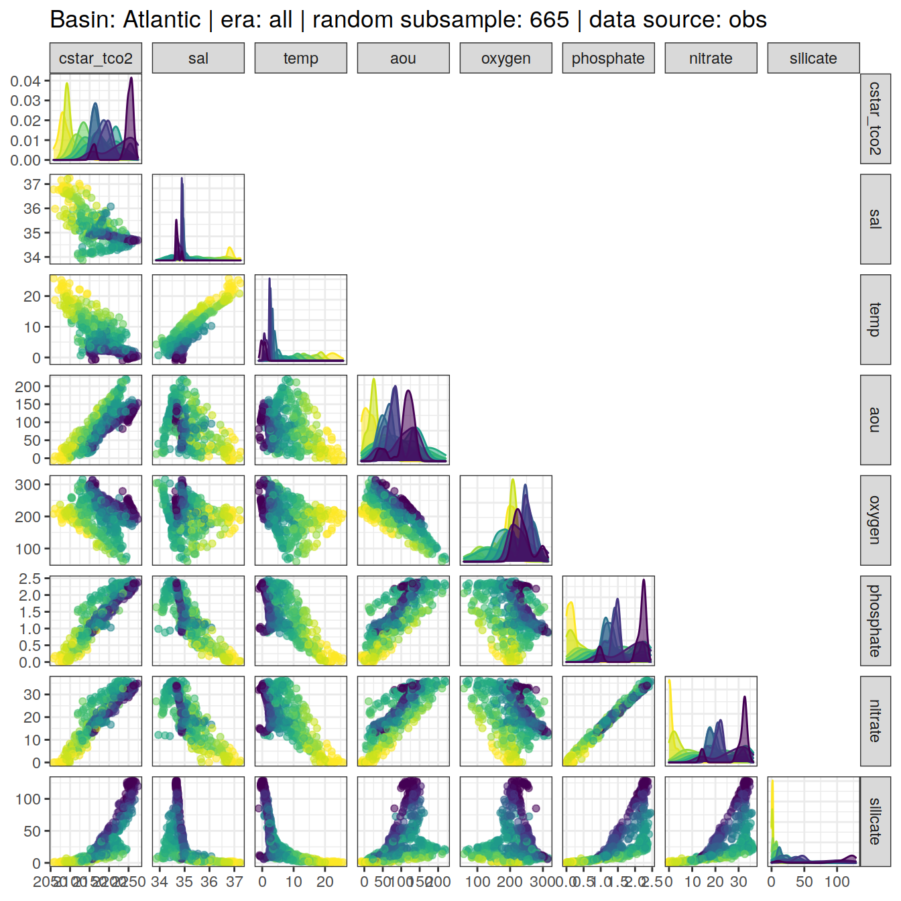

eMLR - assumption testing
Jens Daniel Müller
04 August, 2021
Last updated: 2021-08-04
Checks: 7 0
Knit directory: emlr_obs_v_XXX/
This reproducible R Markdown analysis was created with workflowr (version 1.6.2). The Checks tab describes the reproducibility checks that were applied when the results were created. The Past versions tab lists the development history.
Great! Since the R Markdown file has been committed to the Git repository, you know the exact version of the code that produced these results.
Great job! The global environment was empty. Objects defined in the global environment can affect the analysis in your R Markdown file in unknown ways. For reproduciblity it’s best to always run the code in an empty environment.
The command set.seed(20200707) was run prior to running the code in the R Markdown file. Setting a seed ensures that any results that rely on randomness, e.g. subsampling or permutations, are reproducible.
Great job! Recording the operating system, R version, and package versions is critical for reproducibility.
Nice! There were no cached chunks for this analysis, so you can be confident that you successfully produced the results during this run.
Great job! Using relative paths to the files within your workflowr project makes it easier to run your code on other machines.
Great! You are using Git for version control. Tracking code development and connecting the code version to the results is critical for reproducibility.
The results in this page were generated with repository version 76d6a79. See the Past versions tab to see a history of the changes made to the R Markdown and HTML files.
Note that you need to be careful to ensure that all relevant files for the analysis have been committed to Git prior to generating the results (you can use wflow_publish or wflow_git_commit). workflowr only checks the R Markdown file, but you know if there are other scripts or data files that it depends on. Below is the status of the Git repository when the results were generated:
Ignored files:
Ignored: .Rhistory
Ignored: .Rproj.user/
Unstaged changes:
Modified: code/Workflowr_project_managment.R
Modified: data/auxillary/params_local.rds
Note that any generated files, e.g. HTML, png, CSS, etc., are not included in this status report because it is ok for generated content to have uncommitted changes.
These are the previous versions of the repository in which changes were made to the R Markdown (analysis/eMLR_assumption_testing.Rmd) and HTML (docs/eMLR_assumption_testing.html) files. If you’ve configured a remote Git repository (see ?wflow_git_remote), click on the hyperlinks in the table below to view the files as they were in that past version.
| File | Version | Author | Date | Message |
|---|---|---|---|---|
| html | 48f6eed | jens-daniel-mueller | 2021-08-04 | Build site. |
| html | 1c597ab | jens-daniel-mueller | 2021-08-04 | Build site. |
| html | 81a46a4 | jens-daniel-mueller | 2021-08-03 | Build site. |
| html | b88c61b | jens-daniel-mueller | 2021-08-03 | Build site. |
| html | 0f0d5e5 | jens-daniel-mueller | 2021-08-03 | Build site. |
| html | a53656d | jens-daniel-mueller | 2021-08-03 | Build site. |
| html | 88f7356 | jens-daniel-mueller | 2021-08-02 | Build site. |
| html | d759279 | jens-daniel-mueller | 2021-08-02 | Build site. |
| html | 127b801 | jens-daniel-mueller | 2021-07-24 | Build site. |
| html | 1f65ef1 | jens-daniel-mueller | 2021-07-23 | Build site. |
| html | 912d90e | jens-daniel-mueller | 2021-07-23 | Build site. |
| html | 2477316 | jens-daniel-mueller | 2021-07-23 | rebuild: surface dcant mapping seperate |
| html | c9ccc00 | jens-daniel-mueller | 2021-07-22 | Build site. |
| html | 426b2df | jens-daniel-mueller | 2021-07-21 | Build site. |
| html | 971ce87 | jens-daniel-mueller | 2021-07-13 | Build site. |
| html | c18a8b1 | jens-daniel-mueller | 2021-07-09 | Build site. |
| Rmd | 795a3b0 | jens-daniel-mueller | 2021-07-09 | complete revision |
| html | 910d64a | jens-daniel-mueller | 2021-07-02 | Build site. |
| html | 1cbf907 | jens-daniel-mueller | 2021-07-02 | Build site. |
| html | 955f5dc | jens-daniel-mueller | 2021-06-29 | Build site. |
| html | 9480f94 | jens-daniel-mueller | 2021-06-29 | Build site. |
| html | d054c39 | jens-daniel-mueller | 2021-06-24 | Build site. |
| html | 4fcd066 | jens-daniel-mueller | 2021-06-24 | Build site. |
| html | 3b6387f | jens-daniel-mueller | 2021-06-18 | Build site. |
| html | 3052a6c | jens-daniel-mueller | 2021-06-15 | Build site. |
| html | 3cb64bd | jens-daniel-mueller | 2021-06-15 | Build site. |
| html | c6b3da6 | jens-daniel-mueller | 2021-06-14 | Build site. |
| html | 48c73fc | jens-daniel-mueller | 2021-06-14 | Build site. |
| html | 439ee80 | jens-daniel-mueller | 2021-06-11 | Build site. |
| html | 33ffcab | jens-daniel-mueller | 2021-06-10 | Build site. |
| html | 7e1f407 | jens-daniel-mueller | 2021-06-10 | Build site. |
| html | 2cbe18c | jens-daniel-mueller | 2021-06-10 | added zonal mean section control plots |
| html | 69c79d0 | jens-daniel-mueller | 2021-06-08 | Build site. |
| html | 1772903 | jens-daniel-mueller | 2021-06-07 | Build site. |
| html | 594ed9a | jens-daniel-mueller | 2021-06-04 | Build site. |
| html | db7df0e | jens-daniel-mueller | 2021-06-04 | rebuild without overlapping eras |
| html | 2edc791 | jens-daniel-mueller | 2021-06-04 | Build site. |
| html | 207339d | jens-daniel-mueller | 2021-06-03 | Build site. |
| html | 315710b | jens-daniel-mueller | 2021-06-03 | include anomalous changes |
| html | be90356 | jens-daniel-mueller | 2021-06-02 | Build site. |
| html | d37a85d | jens-daniel-mueller | 2021-05-31 | Build site. |
| html | 4b7a5ee | jens-daniel-mueller | 2021-05-28 | Build site. |
| html | 12b455a | jens-daniel-mueller | 2021-05-27 | Build site. |
| Rmd | ee13efb | jens-daniel-mueller | 2021-05-27 | optional source of local params fully implemented |
| html | 8c736a6 | jens-daniel-mueller | 2021-05-27 | Build site. |
| Rmd | dc8e4e1 | jens-daniel-mueller | 2021-05-27 | optional source of local params implemented |
| html | 25bd183 | jens-daniel-mueller | 2021-05-26 | Build site. |
| html | b79cb2d | jens-daniel-mueller | 2021-05-20 | Build site. |
| html | 62bd574 | jens-daniel-mueller | 2021-05-20 | Build site. |
| html | 7c56c39 | jens-daniel-mueller | 2021-05-19 | Build site. |
| html | 0de759e | jens-daniel-mueller | 2021-05-13 | Build site. |
| html | 52e7583 | jens-daniel-mueller | 2021-05-12 | Build site. |
| html | 969e631 | jens-daniel-mueller | 2021-05-12 | Build site. |
| html | d2a83bc | jens-daniel-mueller | 2021-04-16 | Build site. |
| html | c0a47df | jens-daniel-mueller | 2021-04-16 | Build site. |
| html | 50290e8 | jens-daniel-mueller | 2021-04-16 | overlapping eras |
| html | a00ec94 | jens-daniel-mueller | 2021-04-16 | Build site. |
| html | b6fe355 | jens-daniel-mueller | 2021-04-16 | Build site. |
| html | 81b7c6d | jens-daniel-mueller | 2021-04-16 | Build site. |
| html | ddec5b7 | jens-daniel-mueller | 2021-04-15 | Build site. |
| html | 29edae5 | jens-daniel-mueller | 2021-04-14 | Build site. |
| html | 099d566 | jens-daniel-mueller | 2021-04-14 | Build site. |
| html | bb44686 | jens-daniel-mueller | 2021-04-14 | Build site. |
| html | bf40480 | jens-daniel-mueller | 2021-04-13 | Build site. |
| html | 9f31fe3 | jens-daniel-mueller | 2021-04-13 | Build site. |
| Rmd | 80e1ee3 | jens-daniel-mueller | 2021-04-13 | rerun post-2000 with model data |
| html | c98be84 | jens-daniel-mueller | 2021-04-13 | Build site. |
| html | ea17c90 | jens-daniel-mueller | 2021-04-09 | Build site. |
| Rmd | 4d61e3d | jens-daniel-mueller | 2021-04-09 | included model data |
| html | 338dd3c | jens-daniel-mueller | 2021-04-09 | Build site. |
| html | a79ca2c | jens-daniel-mueller | 2021-04-09 | included model data |
| html | 7831fd3 | jens-daniel-mueller | 2021-04-09 | Build site. |
| html | 20b26d4 | jens-daniel-mueller | 2021-04-08 | Build site. |
| html | c0895f8 | jens-daniel-mueller | 2021-04-07 | Build site. |
| html | 156d5b7 | jens-daniel-mueller | 2021-04-07 | Build site. |
| html | eb827c9 | jens-daniel-mueller | 2021-04-07 | Build site. |
| Rmd | 49be8ed | jens-daniel-mueller | 2021-03-26 | included model data |
| html | ab5c8cf | jens-daniel-mueller | 2021-03-24 | Build site. |
| Rmd | da3c481 | jens-daniel-mueller | 2021-03-24 | included model data |
| html | 19faa17 | jens-daniel-mueller | 2021-03-24 | Build site. |
| Rmd | ae3b4d7 | jens-daniel-mueller | 2021-03-24 | included model data |
| html | 03b6009 | jens-daniel-mueller | 2021-03-23 | removed before copying template |
| html | 98d4a6d | jens-daniel-mueller | 2021-03-23 | Build site. |
| html | f155edd | jens-daniel-mueller | 2021-03-23 | Build site. |
| html | 380d215 | jens-daniel-mueller | 2021-03-21 | Build site. |
| html | 33b385b | jens-daniel-mueller | 2021-03-20 | Build site. |
| html | 330dcd0 | jens-daniel-mueller | 2021-03-20 | Build site. |
| html | 83a13de | jens-daniel-mueller | 2021-03-20 | Build site. |
| html | cf98c6d | jens-daniel-mueller | 2021-03-16 | Build site. |
| html | a1d52ff | jens-daniel-mueller | 2021-03-15 | Build site. |
| html | 0bade3b | jens-daniel-mueller | 2021-03-15 | Build site. |
| html | 27c1f4b | jens-daniel-mueller | 2021-03-14 | Build site. |
| html | af75ebf | jens-daniel-mueller | 2021-03-14 | Build site. |
| html | 5017709 | jens-daniel-mueller | 2021-03-11 | Build site. |
| html | 585b07f | jens-daniel-mueller | 2021-03-11 | Build site. |
| html | 6482ed7 | jens-daniel-mueller | 2021-03-11 | Build site. |
| html | 85a5ed2 | jens-daniel-mueller | 2021-03-10 | Build site. |
| html | 00688a1 | jens-daniel-mueller | 2021-03-05 | Build site. |
| html | 6c0bec6 | jens-daniel-mueller | 2021-03-05 | Build site. |
| html | 3c2ec33 | jens-daniel-mueller | 2021-03-05 | Build site. |
| html | af70b94 | jens-daniel-mueller | 2021-03-04 | Build site. |
| html | 86406d5 | jens-daniel-mueller | 2021-02-24 | Build site. |
| html | 3d3b4cc | jens-daniel-mueller | 2021-02-23 | Build site. |
| html | 7b672f7 | jens-daniel-mueller | 2021-01-11 | Build site. |
| html | 33ba23c | jens-daniel-mueller | 2021-01-07 | Build site. |
| html | 318609d | jens-daniel-mueller | 2020-12-23 | adapted more variable predictor selection |
| html | 9d0b2d0 | jens-daniel-mueller | 2020-12-23 | Build site. |
| html | 0aa2b50 | jens-daniel-mueller | 2020-12-23 | remove html before duplication |
| html | 39113c3 | jens-daniel-mueller | 2020-12-23 | Build site. |
| html | 2886da0 | jens-daniel-mueller | 2020-12-19 | Build site. |
| html | 02f0ee9 | jens-daniel-mueller | 2020-12-18 | cleaned up for copying template |
| html | 965dba3 | jens-daniel-mueller | 2020-12-18 | Build site. |
| html | 5d452fe | jens-daniel-mueller | 2020-12-18 | Build site. |
| Rmd | ca65bf5 | jens-daniel-mueller | 2020-12-18 | rebuild after final cleaning |
| html | 7bcb4eb | jens-daniel-mueller | 2020-12-18 | Build site. |
| html | d397028 | jens-daniel-mueller | 2020-12-18 | Build site. |
| html | 7131186 | jens-daniel-mueller | 2020-12-17 | Build site. |
| html | 22b07fb | jens-daniel-mueller | 2020-12-17 | Build site. |
| html | f3a708f | jens-daniel-mueller | 2020-12-17 | Build site. |
| html | e4ca289 | jens-daniel-mueller | 2020-12-16 | Build site. |
| html | 158fe26 | jens-daniel-mueller | 2020-12-15 | Build site. |
| html | 7a9a4cb | jens-daniel-mueller | 2020-12-15 | Build site. |
| html | 61b263c | jens-daniel-mueller | 2020-12-15 | Build site. |
| html | 4d612dd | jens-daniel-mueller | 2020-12-15 | Build site. |
| Rmd | e7e5ff1 | jens-daniel-mueller | 2020-12-15 | rebuild with eMLR target variable selection |
| html | 953caf3 | jens-daniel-mueller | 2020-12-15 | Build site. |
| html | 42daf5c | jens-daniel-mueller | 2020-12-14 | Build site. |
| Rmd | 923aa7f | jens-daniel-mueller | 2020-12-14 | rebuild with new path and auto folder creation |
| html | 984697e | jens-daniel-mueller | 2020-12-12 | Build site. |
| html | 3ebff89 | jens-daniel-mueller | 2020-12-12 | Build site. |
| html | 5d96d3c | jens-daniel-mueller | 2020-12-11 | Build site. |
| Rmd | 3d33a37 | jens-daniel-mueller | 2020-12-11 | selectable basinmask, try 5 |
| html | b01a367 | jens-daniel-mueller | 2020-12-09 | Build site. |
| html | 24a632f | jens-daniel-mueller | 2020-12-07 | Build site. |
| html | 92dca91 | jens-daniel-mueller | 2020-12-07 | Build site. |
| html | 6a8004b | jens-daniel-mueller | 2020-12-07 | Build site. |
| html | 70bf1a5 | jens-daniel-mueller | 2020-12-07 | Build site. |
| html | 7555355 | jens-daniel-mueller | 2020-12-07 | Build site. |
| html | 143d6fa | jens-daniel-mueller | 2020-12-07 | Build site. |
| Rmd | 33b1973 | jens-daniel-mueller | 2020-12-07 | run with WOCE flag 2 only |
| html | abc6818 | jens-daniel-mueller | 2020-12-03 | Build site. |
| Rmd | 992ba15 | jens-daniel-mueller | 2020-12-03 | rebuild with variable inventory depth |
| html | c8c2e7b | jens-daniel-mueller | 2020-12-03 | Build site. |
| Rmd | 83203db | jens-daniel-mueller | 2020-12-03 | calculate cant with variable inventory depth |
| html | 090e4d5 | jens-daniel-mueller | 2020-12-02 | Build site. |
| html | 7c25f7a | jens-daniel-mueller | 2020-12-02 | Build site. |
| html | ec8dc38 | jens-daniel-mueller | 2020-12-02 | Build site. |
| html | c987de1 | jens-daniel-mueller | 2020-12-02 | Build site. |
| html | f8358f8 | jens-daniel-mueller | 2020-12-02 | Build site. |
| html | b03ddb8 | jens-daniel-mueller | 2020-12-02 | Build site. |
| Rmd | 9183e8f | jens-daniel-mueller | 2020-12-02 | revised assignment of era to eras |
| html | 22d0127 | jens-daniel-mueller | 2020-12-01 | Build site. |
| html | 0ff728b | jens-daniel-mueller | 2020-12-01 | Build site. |
| html | 91435ae | jens-daniel-mueller | 2020-12-01 | Build site. |
| Rmd | 17d09be | jens-daniel-mueller | 2020-12-01 | auto eras naming |
| html | cf19652 | jens-daniel-mueller | 2020-11-30 | Build site. |
| Rmd | 2842970 | jens-daniel-mueller | 2020-11-30 | cleaned for eMLR part only |
| html | 196be51 | jens-daniel-mueller | 2020-11-30 | Build site. |
| Rmd | 7a4b015 | jens-daniel-mueller | 2020-11-30 | first rebuild on ETH server |
| Rmd | bc61ce3 | Jens Müller | 2020-11-30 | Initial commit |
| html | bc61ce3 | Jens Müller | 2020-11-30 | Initial commit |
1 Version ID
The results displayed on this site correspond to the Version_ID: v_XXX
2 Required data
Required are:
- cleaned and prepared GLODAPv2.2020 file
GLODAP <-
read_csv(paste(path_version_data,
"GLODAPv2.2020_MLR_fitting_ready.csv",
sep = ""))3 Predictor correlation
The correlation between:
- pairs of seven potential predictor variables and
- C* and seven potential predictor variables
were investigated based on:
- property-property plots and
- calculated correlation coeffcients.
3.1 Correlation plots
For an overview, a random subset of data from all eras was plotted separately for both basins, with color indicating neutral density slabs (high density = dark-purple color).
plot_fun <- function(df){
ggpairs(
data = df,
columns = c(params_local$MLR_target,
params_local$MLR_predictors),
upper = "blank",
ggplot2::aes(col = gamma_slab, fill = gamma_slab, alpha = 0.01)
) +
scale_fill_viridis_d(direction = -1) +
scale_color_viridis_d(direction = -1) +
labs(title = paste(
"Basin:",
unique(df$basin),
"| era: all | random subsample:",
nrow(df),
"| data source:",
unique(df$data_source)
))
}
GLODAP %>%
slice_sample(n = 5e3) %>%
group_split(basin, data_source) %>%
# head(1) %>%
map(plot_fun)[[1]]
| Version | Author | Date |
|---|---|---|
| 48f6eed | jens-daniel-mueller | 2021-08-04 |
| 81a46a4 | jens-daniel-mueller | 2021-08-03 |
| b88c61b | jens-daniel-mueller | 2021-08-03 |
| a53656d | jens-daniel-mueller | 2021-08-03 |
| 88f7356 | jens-daniel-mueller | 2021-08-02 |
| d759279 | jens-daniel-mueller | 2021-08-02 |
| 127b801 | jens-daniel-mueller | 2021-07-24 |
| 912d90e | jens-daniel-mueller | 2021-07-23 |
| 2477316 | jens-daniel-mueller | 2021-07-23 |
| c9ccc00 | jens-daniel-mueller | 2021-07-22 |
| c18a8b1 | jens-daniel-mueller | 2021-07-09 |
| 910d64a | jens-daniel-mueller | 2021-07-02 |
| 1cbf907 | jens-daniel-mueller | 2021-07-02 |
| 955f5dc | jens-daniel-mueller | 2021-06-29 |
| 9480f94 | jens-daniel-mueller | 2021-06-29 |
| d054c39 | jens-daniel-mueller | 2021-06-24 |
| 4fcd066 | jens-daniel-mueller | 2021-06-24 |
| 3b6387f | jens-daniel-mueller | 2021-06-18 |
| c6b3da6 | jens-daniel-mueller | 2021-06-14 |
| 439ee80 | jens-daniel-mueller | 2021-06-11 |
| 33ffcab | jens-daniel-mueller | 2021-06-10 |
| 7e1f407 | jens-daniel-mueller | 2021-06-10 |
| 2cbe18c | jens-daniel-mueller | 2021-06-10 |
| 69c79d0 | jens-daniel-mueller | 2021-06-08 |
| 1772903 | jens-daniel-mueller | 2021-06-07 |
| 594ed9a | jens-daniel-mueller | 2021-06-04 |
| db7df0e | jens-daniel-mueller | 2021-06-04 |
| 2edc791 | jens-daniel-mueller | 2021-06-04 |
| 207339d | jens-daniel-mueller | 2021-06-03 |
| 315710b | jens-daniel-mueller | 2021-06-03 |
| be90356 | jens-daniel-mueller | 2021-06-02 |
| d37a85d | jens-daniel-mueller | 2021-05-31 |
| 4b7a5ee | jens-daniel-mueller | 2021-05-28 |
| 25bd183 | jens-daniel-mueller | 2021-05-26 |
| 62bd574 | jens-daniel-mueller | 2021-05-20 |
| 7c56c39 | jens-daniel-mueller | 2021-05-19 |
| 52e7583 | jens-daniel-mueller | 2021-05-12 |
| 969e631 | jens-daniel-mueller | 2021-05-12 |
| d2a83bc | jens-daniel-mueller | 2021-04-16 |
| c0a47df | jens-daniel-mueller | 2021-04-16 |
| 50290e8 | jens-daniel-mueller | 2021-04-16 |
| a00ec94 | jens-daniel-mueller | 2021-04-16 |
| b6fe355 | jens-daniel-mueller | 2021-04-16 |
| 81b7c6d | jens-daniel-mueller | 2021-04-16 |
| ddec5b7 | jens-daniel-mueller | 2021-04-15 |
| 29edae5 | jens-daniel-mueller | 2021-04-14 |
| 9f31fe3 | jens-daniel-mueller | 2021-04-13 |
| ea17c90 | jens-daniel-mueller | 2021-04-09 |
| 338dd3c | jens-daniel-mueller | 2021-04-09 |
| a79ca2c | jens-daniel-mueller | 2021-04-09 |
| eb827c9 | jens-daniel-mueller | 2021-04-07 |
| ab5c8cf | jens-daniel-mueller | 2021-03-24 |
| 03b6009 | jens-daniel-mueller | 2021-03-23 |
| 98d4a6d | jens-daniel-mueller | 2021-03-23 |
| 83a13de | jens-daniel-mueller | 2021-03-20 |
| cf98c6d | jens-daniel-mueller | 2021-03-16 |
| a1d52ff | jens-daniel-mueller | 2021-03-15 |
| 0bade3b | jens-daniel-mueller | 2021-03-15 |
| 27c1f4b | jens-daniel-mueller | 2021-03-14 |
| af75ebf | jens-daniel-mueller | 2021-03-14 |
| 5017709 | jens-daniel-mueller | 2021-03-11 |
| 585b07f | jens-daniel-mueller | 2021-03-11 |
| 85a5ed2 | jens-daniel-mueller | 2021-03-10 |
| 6c0bec6 | jens-daniel-mueller | 2021-03-05 |
| af70b94 | jens-daniel-mueller | 2021-03-04 |
| 7b672f7 | jens-daniel-mueller | 2021-01-11 |
| 33ba23c | jens-daniel-mueller | 2021-01-07 |
| 318609d | jens-daniel-mueller | 2020-12-23 |
| 9d0b2d0 | jens-daniel-mueller | 2020-12-23 |
| 0aa2b50 | jens-daniel-mueller | 2020-12-23 |
| 2886da0 | jens-daniel-mueller | 2020-12-19 |
| 02f0ee9 | jens-daniel-mueller | 2020-12-18 |
| 7bcb4eb | jens-daniel-mueller | 2020-12-18 |
| 158fe26 | jens-daniel-mueller | 2020-12-15 |
| 7a9a4cb | jens-daniel-mueller | 2020-12-15 |
| 61b263c | jens-daniel-mueller | 2020-12-15 |
| 4d612dd | jens-daniel-mueller | 2020-12-15 |
| 984697e | jens-daniel-mueller | 2020-12-12 |
| 3ebff89 | jens-daniel-mueller | 2020-12-12 |
| 5d96d3c | jens-daniel-mueller | 2020-12-11 |
[[2]]
| Version | Author | Date |
|---|---|---|
| 48f6eed | jens-daniel-mueller | 2021-08-04 |
| 81a46a4 | jens-daniel-mueller | 2021-08-03 |
| b88c61b | jens-daniel-mueller | 2021-08-03 |
| a53656d | jens-daniel-mueller | 2021-08-03 |
| 88f7356 | jens-daniel-mueller | 2021-08-02 |
| d759279 | jens-daniel-mueller | 2021-08-02 |
| 127b801 | jens-daniel-mueller | 2021-07-24 |
| 912d90e | jens-daniel-mueller | 2021-07-23 |
| 2477316 | jens-daniel-mueller | 2021-07-23 |
| c9ccc00 | jens-daniel-mueller | 2021-07-22 |
| c18a8b1 | jens-daniel-mueller | 2021-07-09 |
| 910d64a | jens-daniel-mueller | 2021-07-02 |
| 1cbf907 | jens-daniel-mueller | 2021-07-02 |
| 955f5dc | jens-daniel-mueller | 2021-06-29 |
| 9480f94 | jens-daniel-mueller | 2021-06-29 |
| d054c39 | jens-daniel-mueller | 2021-06-24 |
| 4fcd066 | jens-daniel-mueller | 2021-06-24 |
| 3b6387f | jens-daniel-mueller | 2021-06-18 |
| c6b3da6 | jens-daniel-mueller | 2021-06-14 |
| 439ee80 | jens-daniel-mueller | 2021-06-11 |
| 33ffcab | jens-daniel-mueller | 2021-06-10 |
| 7e1f407 | jens-daniel-mueller | 2021-06-10 |
| 2cbe18c | jens-daniel-mueller | 2021-06-10 |
| 69c79d0 | jens-daniel-mueller | 2021-06-08 |
| 1772903 | jens-daniel-mueller | 2021-06-07 |
| 594ed9a | jens-daniel-mueller | 2021-06-04 |
| db7df0e | jens-daniel-mueller | 2021-06-04 |
| 2edc791 | jens-daniel-mueller | 2021-06-04 |
| 207339d | jens-daniel-mueller | 2021-06-03 |
| 315710b | jens-daniel-mueller | 2021-06-03 |
| d37a85d | jens-daniel-mueller | 2021-05-31 |
| 4b7a5ee | jens-daniel-mueller | 2021-05-28 |
| 25bd183 | jens-daniel-mueller | 2021-05-26 |
| 62bd574 | jens-daniel-mueller | 2021-05-20 |
| 7c56c39 | jens-daniel-mueller | 2021-05-19 |
| 52e7583 | jens-daniel-mueller | 2021-05-12 |
| 969e631 | jens-daniel-mueller | 2021-05-12 |
| d2a83bc | jens-daniel-mueller | 2021-04-16 |
| c0a47df | jens-daniel-mueller | 2021-04-16 |
| 50290e8 | jens-daniel-mueller | 2021-04-16 |
| a00ec94 | jens-daniel-mueller | 2021-04-16 |
| b6fe355 | jens-daniel-mueller | 2021-04-16 |
| 81b7c6d | jens-daniel-mueller | 2021-04-16 |
| ddec5b7 | jens-daniel-mueller | 2021-04-15 |
| 29edae5 | jens-daniel-mueller | 2021-04-14 |
| 9f31fe3 | jens-daniel-mueller | 2021-04-13 |
| ea17c90 | jens-daniel-mueller | 2021-04-09 |
| 338dd3c | jens-daniel-mueller | 2021-04-09 |
| a79ca2c | jens-daniel-mueller | 2021-04-09 |
| eb827c9 | jens-daniel-mueller | 2021-04-07 |
| ab5c8cf | jens-daniel-mueller | 2021-03-24 |
| 03b6009 | jens-daniel-mueller | 2021-03-23 |
| 98d4a6d | jens-daniel-mueller | 2021-03-23 |
| 83a13de | jens-daniel-mueller | 2021-03-20 |
| cf98c6d | jens-daniel-mueller | 2021-03-16 |
| a1d52ff | jens-daniel-mueller | 2021-03-15 |
| 0bade3b | jens-daniel-mueller | 2021-03-15 |
| 27c1f4b | jens-daniel-mueller | 2021-03-14 |
| af75ebf | jens-daniel-mueller | 2021-03-14 |
| 5017709 | jens-daniel-mueller | 2021-03-11 |
| 585b07f | jens-daniel-mueller | 2021-03-11 |
| 85a5ed2 | jens-daniel-mueller | 2021-03-10 |
| 6c0bec6 | jens-daniel-mueller | 2021-03-05 |
| af70b94 | jens-daniel-mueller | 2021-03-04 |
| 7b672f7 | jens-daniel-mueller | 2021-01-11 |
| 33ba23c | jens-daniel-mueller | 2021-01-07 |
| 318609d | jens-daniel-mueller | 2020-12-23 |
| 9d0b2d0 | jens-daniel-mueller | 2020-12-23 |
| 0aa2b50 | jens-daniel-mueller | 2020-12-23 |
| 2886da0 | jens-daniel-mueller | 2020-12-19 |
| 02f0ee9 | jens-daniel-mueller | 2020-12-18 |
| 7bcb4eb | jens-daniel-mueller | 2020-12-18 |
| 158fe26 | jens-daniel-mueller | 2020-12-15 |
| 7a9a4cb | jens-daniel-mueller | 2020-12-15 |
| 61b263c | jens-daniel-mueller | 2020-12-15 |
| 4d612dd | jens-daniel-mueller | 2020-12-15 |
| 984697e | jens-daniel-mueller | 2020-12-12 |
| 3ebff89 | jens-daniel-mueller | 2020-12-12 |
| 5d96d3c | jens-daniel-mueller | 2020-12-11 |
[[3]]
| Version | Author | Date |
|---|---|---|
| 48f6eed | jens-daniel-mueller | 2021-08-04 |
| 81a46a4 | jens-daniel-mueller | 2021-08-03 |
| b88c61b | jens-daniel-mueller | 2021-08-03 |
| a53656d | jens-daniel-mueller | 2021-08-03 |
| 88f7356 | jens-daniel-mueller | 2021-08-02 |
| d759279 | jens-daniel-mueller | 2021-08-02 |
| 127b801 | jens-daniel-mueller | 2021-07-24 |
| 912d90e | jens-daniel-mueller | 2021-07-23 |
| 2477316 | jens-daniel-mueller | 2021-07-23 |
| c9ccc00 | jens-daniel-mueller | 2021-07-22 |
| c18a8b1 | jens-daniel-mueller | 2021-07-09 |
| 910d64a | jens-daniel-mueller | 2021-07-02 |
| 1cbf907 | jens-daniel-mueller | 2021-07-02 |
| 955f5dc | jens-daniel-mueller | 2021-06-29 |
| 9480f94 | jens-daniel-mueller | 2021-06-29 |
| d054c39 | jens-daniel-mueller | 2021-06-24 |
| 4fcd066 | jens-daniel-mueller | 2021-06-24 |
| 3b6387f | jens-daniel-mueller | 2021-06-18 |
| c6b3da6 | jens-daniel-mueller | 2021-06-14 |
| 439ee80 | jens-daniel-mueller | 2021-06-11 |
| 33ffcab | jens-daniel-mueller | 2021-06-10 |
| 7e1f407 | jens-daniel-mueller | 2021-06-10 |
| 2cbe18c | jens-daniel-mueller | 2021-06-10 |
| 69c79d0 | jens-daniel-mueller | 2021-06-08 |
| 1772903 | jens-daniel-mueller | 2021-06-07 |
| 594ed9a | jens-daniel-mueller | 2021-06-04 |
| db7df0e | jens-daniel-mueller | 2021-06-04 |
| 2edc791 | jens-daniel-mueller | 2021-06-04 |
| 207339d | jens-daniel-mueller | 2021-06-03 |
| 315710b | jens-daniel-mueller | 2021-06-03 |
| be90356 | jens-daniel-mueller | 2021-06-02 |
| d37a85d | jens-daniel-mueller | 2021-05-31 |
| 4b7a5ee | jens-daniel-mueller | 2021-05-28 |
| 25bd183 | jens-daniel-mueller | 2021-05-26 |
| 62bd574 | jens-daniel-mueller | 2021-05-20 |
| 7c56c39 | jens-daniel-mueller | 2021-05-19 |
| 52e7583 | jens-daniel-mueller | 2021-05-12 |
| 969e631 | jens-daniel-mueller | 2021-05-12 |
| d2a83bc | jens-daniel-mueller | 2021-04-16 |
| c0a47df | jens-daniel-mueller | 2021-04-16 |
| 50290e8 | jens-daniel-mueller | 2021-04-16 |
| a00ec94 | jens-daniel-mueller | 2021-04-16 |
| b6fe355 | jens-daniel-mueller | 2021-04-16 |
| 81b7c6d | jens-daniel-mueller | 2021-04-16 |
| ddec5b7 | jens-daniel-mueller | 2021-04-15 |
| 29edae5 | jens-daniel-mueller | 2021-04-14 |
| 099d566 | jens-daniel-mueller | 2021-04-14 |
| bb44686 | jens-daniel-mueller | 2021-04-14 |
| bf40480 | jens-daniel-mueller | 2021-04-13 |
| 9f31fe3 | jens-daniel-mueller | 2021-04-13 |
| ea17c90 | jens-daniel-mueller | 2021-04-09 |
| 338dd3c | jens-daniel-mueller | 2021-04-09 |
| a79ca2c | jens-daniel-mueller | 2021-04-09 |
| eb827c9 | jens-daniel-mueller | 2021-04-07 |
| ab5c8cf | jens-daniel-mueller | 2021-03-24 |
| 0aa2b50 | jens-daniel-mueller | 2020-12-23 |
| 2886da0 | jens-daniel-mueller | 2020-12-19 |
| 02f0ee9 | jens-daniel-mueller | 2020-12-18 |
| 7bcb4eb | jens-daniel-mueller | 2020-12-18 |
| 158fe26 | jens-daniel-mueller | 2020-12-15 |
| 7a9a4cb | jens-daniel-mueller | 2020-12-15 |
| 61b263c | jens-daniel-mueller | 2020-12-15 |
| 4d612dd | jens-daniel-mueller | 2020-12-15 |
| 984697e | jens-daniel-mueller | 2020-12-12 |
| 3ebff89 | jens-daniel-mueller | 2020-12-12 |
| 5d96d3c | jens-daniel-mueller | 2020-12-11 |
[[4]]
| Version | Author | Date |
|---|---|---|
| 48f6eed | jens-daniel-mueller | 2021-08-04 |
| 81a46a4 | jens-daniel-mueller | 2021-08-03 |
| b88c61b | jens-daniel-mueller | 2021-08-03 |
| a53656d | jens-daniel-mueller | 2021-08-03 |
| 88f7356 | jens-daniel-mueller | 2021-08-02 |
| d759279 | jens-daniel-mueller | 2021-08-02 |
| 127b801 | jens-daniel-mueller | 2021-07-24 |
| 912d90e | jens-daniel-mueller | 2021-07-23 |
| 2477316 | jens-daniel-mueller | 2021-07-23 |
| c9ccc00 | jens-daniel-mueller | 2021-07-22 |
| c18a8b1 | jens-daniel-mueller | 2021-07-09 |
| 910d64a | jens-daniel-mueller | 2021-07-02 |
| 1cbf907 | jens-daniel-mueller | 2021-07-02 |
| 955f5dc | jens-daniel-mueller | 2021-06-29 |
| 9480f94 | jens-daniel-mueller | 2021-06-29 |
| d054c39 | jens-daniel-mueller | 2021-06-24 |
| 4fcd066 | jens-daniel-mueller | 2021-06-24 |
| 3b6387f | jens-daniel-mueller | 2021-06-18 |
| c6b3da6 | jens-daniel-mueller | 2021-06-14 |
| 439ee80 | jens-daniel-mueller | 2021-06-11 |
| 33ffcab | jens-daniel-mueller | 2021-06-10 |
| 7e1f407 | jens-daniel-mueller | 2021-06-10 |
| 2cbe18c | jens-daniel-mueller | 2021-06-10 |
| 69c79d0 | jens-daniel-mueller | 2021-06-08 |
| 1772903 | jens-daniel-mueller | 2021-06-07 |
| 594ed9a | jens-daniel-mueller | 2021-06-04 |
| db7df0e | jens-daniel-mueller | 2021-06-04 |
| 2edc791 | jens-daniel-mueller | 2021-06-04 |
| 207339d | jens-daniel-mueller | 2021-06-03 |
| 315710b | jens-daniel-mueller | 2021-06-03 |
| d37a85d | jens-daniel-mueller | 2021-05-31 |
| 4b7a5ee | jens-daniel-mueller | 2021-05-28 |
| 25bd183 | jens-daniel-mueller | 2021-05-26 |
| 62bd574 | jens-daniel-mueller | 2021-05-20 |
| 7c56c39 | jens-daniel-mueller | 2021-05-19 |
| 52e7583 | jens-daniel-mueller | 2021-05-12 |
| 969e631 | jens-daniel-mueller | 2021-05-12 |
| d2a83bc | jens-daniel-mueller | 2021-04-16 |
| c0a47df | jens-daniel-mueller | 2021-04-16 |
| 50290e8 | jens-daniel-mueller | 2021-04-16 |
| a00ec94 | jens-daniel-mueller | 2021-04-16 |
| b6fe355 | jens-daniel-mueller | 2021-04-16 |
| 81b7c6d | jens-daniel-mueller | 2021-04-16 |
| ddec5b7 | jens-daniel-mueller | 2021-04-15 |
| 29edae5 | jens-daniel-mueller | 2021-04-14 |
| 099d566 | jens-daniel-mueller | 2021-04-14 |
| bb44686 | jens-daniel-mueller | 2021-04-14 |
| bf40480 | jens-daniel-mueller | 2021-04-13 |
| 9f31fe3 | jens-daniel-mueller | 2021-04-13 |
| ea17c90 | jens-daniel-mueller | 2021-04-09 |
| 338dd3c | jens-daniel-mueller | 2021-04-09 |
| a79ca2c | jens-daniel-mueller | 2021-04-09 |
| eb827c9 | jens-daniel-mueller | 2021-04-07 |
| ab5c8cf | jens-daniel-mueller | 2021-03-24 |
| 984697e | jens-daniel-mueller | 2020-12-12 |
| 3ebff89 | jens-daniel-mueller | 2020-12-12 |
| 5d96d3c | jens-daniel-mueller | 2020-12-11 |
[[5]]
| Version | Author | Date |
|---|---|---|
| 48f6eed | jens-daniel-mueller | 2021-08-04 |
| 81a46a4 | jens-daniel-mueller | 2021-08-03 |
| b88c61b | jens-daniel-mueller | 2021-08-03 |
| a53656d | jens-daniel-mueller | 2021-08-03 |
| 88f7356 | jens-daniel-mueller | 2021-08-02 |
| 127b801 | jens-daniel-mueller | 2021-07-24 |
| 912d90e | jens-daniel-mueller | 2021-07-23 |
| 2477316 | jens-daniel-mueller | 2021-07-23 |
| c9ccc00 | jens-daniel-mueller | 2021-07-22 |
| c18a8b1 | jens-daniel-mueller | 2021-07-09 |
| 910d64a | jens-daniel-mueller | 2021-07-02 |
| 1cbf907 | jens-daniel-mueller | 2021-07-02 |
| 955f5dc | jens-daniel-mueller | 2021-06-29 |
| b6fe355 | jens-daniel-mueller | 2021-04-16 |
| 81b7c6d | jens-daniel-mueller | 2021-04-16 |
| 099d566 | jens-daniel-mueller | 2021-04-14 |
| bb44686 | jens-daniel-mueller | 2021-04-14 |
| 984697e | jens-daniel-mueller | 2020-12-12 |
| 3ebff89 | jens-daniel-mueller | 2020-12-12 |
| 5d96d3c | jens-daniel-mueller | 2020-12-11 |
[[6]]
| Version | Author | Date |
|---|---|---|
| 48f6eed | jens-daniel-mueller | 2021-08-04 |
| 81a46a4 | jens-daniel-mueller | 2021-08-03 |
| b88c61b | jens-daniel-mueller | 2021-08-03 |
| a53656d | jens-daniel-mueller | 2021-08-03 |
| 88f7356 | jens-daniel-mueller | 2021-08-02 |
| 127b801 | jens-daniel-mueller | 2021-07-24 |
| 912d90e | jens-daniel-mueller | 2021-07-23 |
| 2477316 | jens-daniel-mueller | 2021-07-23 |
| c9ccc00 | jens-daniel-mueller | 2021-07-22 |
| c18a8b1 | jens-daniel-mueller | 2021-07-09 |
| 910d64a | jens-daniel-mueller | 2021-07-02 |
| 1cbf907 | jens-daniel-mueller | 2021-07-02 |
| 955f5dc | jens-daniel-mueller | 2021-06-29 |
| b6fe355 | jens-daniel-mueller | 2021-04-16 |
| 81b7c6d | jens-daniel-mueller | 2021-04-16 |
| 099d566 | jens-daniel-mueller | 2021-04-14 |
| bb44686 | jens-daniel-mueller | 2021-04-14 |
GLODAP <- GLODAP %>%
filter(data_source == "obs") %>%
select(-data_source)Individual correlation plots for each basin, era and neutral density (gamma) slab are available at:
/nfs/kryo/work/jenmueller/emlr_cant/observations/v_XXX/figures/Observations_correlation/
if (params_local$plot_all_figures == "y") {
for (i_basin in unique(GLODAP$basin)) {
for (i_era in unique(GLODAP$era)) {
# i_basin <- unique(GLODAP$basin)[1]
# i_era <- unique(GLODAP$era)[1]
GLODAP_basin_era <- GLODAP %>%
filter(basin == i_basin,
era == i_era)
for (i_gamma_slab in unique(GLODAP_basin_era$gamma_slab)) {
# i_gamma_slab <- unique(GLODAP_basin_era$gamma_slab)[5]
GLODAP_highlight <- GLODAP_basin_era %>%
mutate(gamma_highlight = if_else(gamma_slab == i_gamma_slab,
"in", "out")) %>%
arrange(desc(gamma_highlight))
p <- GLODAP_highlight %>%
ggpairs(
columns = c(params_local$MLR_target,
params_local$MLR_predictors),
ggplot2::aes(
col = gamma_highlight,
fill = gamma_highlight,
alpha = 0.01
)
) +
scale_fill_manual(values = c("red", "grey")) +
scale_color_manual(values = c("red", "grey")) +
labs(
title = paste(
i_era,
"|",
i_basin,
"| Gamma slab",
i_gamma_slab,
"| # obs total",
nrow(GLODAP_basin_era),
"| # obs slab",
nrow(GLODAP_highlight %>%
filter(gamma_highlight == "in"))
)
)
png(
filename = paste(
path_version_figures,
"Observations_correlation/",
paste(
"Predictor_correlation",
i_era,
i_basin,
i_gamma_slab,
".png",
sep = "_"
),
sep = ""),
width = 12,
height = 12,
units = "in",
res = 300
)
print(p)
dev.off()
}
}
}
}3.2 Correlation assesment
3.2.1 Calculation of correlation coeffcients
Correlation coefficients were calculated individually within each slabs, era and basin.
for (i_basin in unique(GLODAP$basin)) {
for (i_era in unique(GLODAP$era)) {
# i_basin <- unique(GLODAP$basin)[1]
# i_era <- unique(GLODAP$era)[1]
GLODAP_basin_era <- GLODAP %>%
filter(basin == i_basin,
era == i_era) %>%
select(basin,
era,
gamma_slab,
params_local$MLR_target,
params_local$MLR_predictors)
for (i_gamma_slab in unique(GLODAP_basin_era$gamma_slab)) {
# i_gamma_slab <- unique(GLODAP_basin_era$gamma_slab)[5]
print(i_gamma_slab)
GLODAP_basin_era_slab <- GLODAP_basin_era %>%
filter(gamma_slab == i_gamma_slab)
# calculate correlation table
cor_target_predictor_temp <- GLODAP_basin_era_slab %>%
select(-c(basin, era, gamma_slab)) %>%
correlate() %>%
focus(params_local$MLR_target) %>%
mutate(basin = i_basin,
era = i_era,
gamma_slab = i_gamma_slab)
if (exists("cor_target_predictor")) {
cor_target_predictor <-
bind_rows(cor_target_predictor, cor_target_predictor_temp)
}
if (!exists("cor_target_predictor")) {
cor_target_predictor <- cor_target_predictor_temp
}
cor_predictors_temp <- GLODAP_basin_era_slab %>%
select(-c(basin, era, gamma_slab)) %>%
correlate() %>%
shave %>%
stretch() %>%
filter(!is.na(r),
x != params_local$MLR_target,
y != params_local$MLR_target) %>%
mutate(pair = paste(x, y, sep = " + ")) %>%
select(-c(x, y)) %>%
mutate(basin = i_basin,
era = i_era,
gamma_slab = i_gamma_slab)
if (exists("cor_predictors")) {
cor_predictors <- bind_rows(cor_predictors, cor_predictors_temp)
}
if (!exists("cor_predictors")) {
cor_predictors <- cor_predictors_temp
}
}
}
}
rm(cor_predictors_temp, cor_target_predictor_temp,
i_gamma_slab, i_era, i_basin,
GLODAP_basin_era, GLODAP_basin_era_slab)3.2.2 Predictor pairs
Below, the range of correlations coefficients for each predictor pair is plotted per basin (facet) and density slab (color). Note that the range indicates the min and max values of in total 3 calculated coefficients (one per era).
# calculate min, max, mean across all eras
cor_predictors_stats <- cor_predictors %>%
group_by(pair, basin, gamma_slab) %>%
summarise(mean_r = mean(r),
min_r = min(r),
max_r = max(r)) %>%
ungroup()
# plot figure
cor_predictors_stats %>%
mutate(pair = reorder(pair, mean_r)) %>%
ggplot() +
geom_vline(xintercept = c(-0.9, 0.9), col = "red") +
geom_vline(xintercept = 0) +
geom_linerange(
aes(y = pair, xmin = min_r, xmax = max_r, col = gamma_slab),
position = position_dodge(width = 0.6)) +
facet_wrap(~basin) +
scale_color_viridis_d(direction = -1) +
labs(x = "correlation coefficient", y = "") +
theme(legend.position = "top")
| Version | Author | Date |
|---|---|---|
| 48f6eed | jens-daniel-mueller | 2021-08-04 |
| 81a46a4 | jens-daniel-mueller | 2021-08-03 |
| b88c61b | jens-daniel-mueller | 2021-08-03 |
| a53656d | jens-daniel-mueller | 2021-08-03 |
| 88f7356 | jens-daniel-mueller | 2021-08-02 |
| d759279 | jens-daniel-mueller | 2021-08-02 |
| 127b801 | jens-daniel-mueller | 2021-07-24 |
| 912d90e | jens-daniel-mueller | 2021-07-23 |
| 2477316 | jens-daniel-mueller | 2021-07-23 |
| c9ccc00 | jens-daniel-mueller | 2021-07-22 |
| 910d64a | jens-daniel-mueller | 2021-07-02 |
| 1cbf907 | jens-daniel-mueller | 2021-07-02 |
| 955f5dc | jens-daniel-mueller | 2021-06-29 |
| 9480f94 | jens-daniel-mueller | 2021-06-29 |
| d054c39 | jens-daniel-mueller | 2021-06-24 |
| 4fcd066 | jens-daniel-mueller | 2021-06-24 |
| 7e1f407 | jens-daniel-mueller | 2021-06-10 |
| 2cbe18c | jens-daniel-mueller | 2021-06-10 |
| 594ed9a | jens-daniel-mueller | 2021-06-04 |
| db7df0e | jens-daniel-mueller | 2021-06-04 |
| 207339d | jens-daniel-mueller | 2021-06-03 |
| 315710b | jens-daniel-mueller | 2021-06-03 |
| d37a85d | jens-daniel-mueller | 2021-05-31 |
| 25bd183 | jens-daniel-mueller | 2021-05-26 |
| 62bd574 | jens-daniel-mueller | 2021-05-20 |
| 7c56c39 | jens-daniel-mueller | 2021-05-19 |
| 52e7583 | jens-daniel-mueller | 2021-05-12 |
| 969e631 | jens-daniel-mueller | 2021-05-12 |
| d2a83bc | jens-daniel-mueller | 2021-04-16 |
| c0a47df | jens-daniel-mueller | 2021-04-16 |
| 50290e8 | jens-daniel-mueller | 2021-04-16 |
| b6fe355 | jens-daniel-mueller | 2021-04-16 |
| 81b7c6d | jens-daniel-mueller | 2021-04-16 |
| ddec5b7 | jens-daniel-mueller | 2021-04-15 |
| 29edae5 | jens-daniel-mueller | 2021-04-14 |
| 099d566 | jens-daniel-mueller | 2021-04-14 |
| bb44686 | jens-daniel-mueller | 2021-04-14 |
| bf40480 | jens-daniel-mueller | 2021-04-13 |
| 9f31fe3 | jens-daniel-mueller | 2021-04-13 |
| 338dd3c | jens-daniel-mueller | 2021-04-09 |
| a79ca2c | jens-daniel-mueller | 2021-04-09 |
| eb827c9 | jens-daniel-mueller | 2021-04-07 |
| 19faa17 | jens-daniel-mueller | 2021-03-24 |
| 03b6009 | jens-daniel-mueller | 2021-03-23 |
| 98d4a6d | jens-daniel-mueller | 2021-03-23 |
| f155edd | jens-daniel-mueller | 2021-03-23 |
| 83a13de | jens-daniel-mueller | 2021-03-20 |
| cf98c6d | jens-daniel-mueller | 2021-03-16 |
| a1d52ff | jens-daniel-mueller | 2021-03-15 |
| 0bade3b | jens-daniel-mueller | 2021-03-15 |
| 27c1f4b | jens-daniel-mueller | 2021-03-14 |
| af75ebf | jens-daniel-mueller | 2021-03-14 |
| 5017709 | jens-daniel-mueller | 2021-03-11 |
| 585b07f | jens-daniel-mueller | 2021-03-11 |
| 85a5ed2 | jens-daniel-mueller | 2021-03-10 |
| 6c0bec6 | jens-daniel-mueller | 2021-03-05 |
| 7b672f7 | jens-daniel-mueller | 2021-01-11 |
| 33ba23c | jens-daniel-mueller | 2021-01-07 |
| 318609d | jens-daniel-mueller | 2020-12-23 |
| 9d0b2d0 | jens-daniel-mueller | 2020-12-23 |
| 0aa2b50 | jens-daniel-mueller | 2020-12-23 |
| 2886da0 | jens-daniel-mueller | 2020-12-19 |
| 02f0ee9 | jens-daniel-mueller | 2020-12-18 |
| 158fe26 | jens-daniel-mueller | 2020-12-15 |
| 984697e | jens-daniel-mueller | 2020-12-12 |
| 3ebff89 | jens-daniel-mueller | 2020-12-12 |
| 5d96d3c | jens-daniel-mueller | 2020-12-11 |
| 24a632f | jens-daniel-mueller | 2020-12-07 |
| 6a8004b | jens-daniel-mueller | 2020-12-07 |
| 70bf1a5 | jens-daniel-mueller | 2020-12-07 |
| 7555355 | jens-daniel-mueller | 2020-12-07 |
| 143d6fa | jens-daniel-mueller | 2020-12-07 |
| 0ff728b | jens-daniel-mueller | 2020-12-01 |
| 91435ae | jens-daniel-mueller | 2020-12-01 |
| 196be51 | jens-daniel-mueller | 2020-11-30 |
| bc61ce3 | Jens Müller | 2020-11-30 |
# print table
kable(cor_predictors_stats) %>%
add_header_above() %>%
kable_styling() %>%
scroll_box(width = "100%", height = "400px")| pair | basin | gamma_slab | mean_r | min_r | max_r |
|---|---|---|---|---|---|
| aou + nitrate | Atlantic | (-Inf,26] | 0.8670333 | 0.8665203 | 0.8675463 |
| aou + nitrate | Atlantic | (26,26.5] | 0.8971123 | 0.8882504 | 0.9059743 |
| aou + nitrate | Atlantic | (26.5,26.75] | 0.9468900 | 0.9385350 | 0.9552449 |
| aou + nitrate | Atlantic | (26.75,27] | 0.9073975 | 0.9034156 | 0.9113794 |
| aou + nitrate | Atlantic | (27,27.25] | 0.7942356 | 0.7855434 | 0.8029278 |
| aou + nitrate | Atlantic | (27.25,27.5] | 0.7223516 | 0.7101283 | 0.7345749 |
| aou + nitrate | Atlantic | (27.5,27.75] | 0.8141621 | 0.7986164 | 0.8297078 |
| aou + nitrate | Atlantic | (27.75,27.85] | 0.9283946 | 0.9129526 | 0.9438366 |
| aou + nitrate | Atlantic | (27.85,27.95] | 0.9368017 | 0.9272265 | 0.9463770 |
| aou + nitrate | Atlantic | (27.95,28.05] | 0.9400499 | 0.9373217 | 0.9427781 |
| aou + nitrate | Atlantic | (28.05,28.1] | 0.9603338 | 0.9584408 | 0.9622268 |
| aou + nitrate | Atlantic | (28.1,28.15] | 0.9757286 | 0.9739712 | 0.9774860 |
| aou + nitrate | Atlantic | (28.15,28.2] | 0.9840357 | 0.9822841 | 0.9857874 |
| aou + nitrate | Atlantic | (28.2, Inf] | 0.9257914 | 0.9110117 | 0.9405712 |
| aou + nitrate | Indian | (-Inf,26] | 0.9845298 | 0.9751051 | 0.9939544 |
| aou + nitrate | Indian | (26,26.5] | 0.9655573 | 0.9427177 | 0.9883969 |
| aou + nitrate | Indian | (26.5,26.75] | 0.9613702 | 0.9490965 | 0.9736438 |
| aou + nitrate | Indian | (26.75,27] | 0.9142904 | 0.8995609 | 0.9290198 |
| aou + nitrate | Indian | (27,27.25] | 0.8173437 | 0.7536460 | 0.8810414 |
| aou + nitrate | Indian | (27.25,27.5] | 0.8734569 | 0.8415493 | 0.9053645 |
| aou + nitrate | Indian | (27.5,27.75] | 0.9026064 | 0.8622073 | 0.9430054 |
| aou + nitrate | Indian | (27.75,27.85] | 0.8520494 | 0.7808938 | 0.9232049 |
| aou + nitrate | Indian | (27.85,27.95] | 0.8493361 | 0.8072582 | 0.8914140 |
| aou + nitrate | Indian | (27.95,28.05] | 0.7773502 | 0.6931563 | 0.8615441 |
| aou + nitrate | Indian | (28.05,28.1] | 0.8929070 | 0.8432993 | 0.9425147 |
| aou + nitrate | Indian | (28.1,28.2] | 0.8591484 | 0.7975080 | 0.9207888 |
| aou + nitrate | Indian | (28.2,28.3] | 0.3897439 | 0.3633043 | 0.4161835 |
| aou + nitrate | Indian | (28.3,28.4] | 0.5341778 | 0.4270904 | 0.6412653 |
| aou + nitrate | Indian | (28.4, Inf] | 0.8860373 | 0.8860373 | 0.8860373 |
| aou + nitrate | Pacific | (-Inf,26] | 0.8770645 | 0.8521258 | 0.9020032 |
| aou + nitrate | Pacific | (26,26.5] | 0.8889258 | 0.8769351 | 0.9009166 |
| aou + nitrate | Pacific | (26.5,26.75] | 0.8598742 | 0.8335686 | 0.8861798 |
| aou + nitrate | Pacific | (26.75,27] | 0.9212684 | 0.9078293 | 0.9347074 |
| aou + nitrate | Pacific | (27,27.25] | 0.9728591 | 0.9713035 | 0.9744147 |
| aou + nitrate | Pacific | (27.25,27.5] | 0.9779991 | 0.9767947 | 0.9792036 |
| aou + nitrate | Pacific | (27.5,27.75] | 0.9805531 | 0.9798339 | 0.9812722 |
| aou + nitrate | Pacific | (27.75,27.85] | 0.9881137 | 0.9875375 | 0.9886900 |
| aou + nitrate | Pacific | (27.85,27.95] | 0.9885140 | 0.9868291 | 0.9901988 |
| aou + nitrate | Pacific | (27.95,28.05] | 0.9766076 | 0.9705243 | 0.9826909 |
| aou + nitrate | Pacific | (28.05,28.1] | 0.9755557 | 0.9647884 | 0.9863231 |
| aou + nitrate | Pacific | (28.1,28.2] | 0.9803676 | 0.9785898 | 0.9821454 |
| aou + nitrate | Pacific | (28.2,28.3] | 0.0642056 | 0.0439099 | 0.0845013 |
| aou + nitrate | Pacific | (28.3,28.4] | 0.7966429 | 0.7965628 | 0.7967231 |
| aou + nitrate | Pacific | (28.4, Inf] | 0.2799291 | 0.2799291 | 0.2799291 |
| aou + oxygen | Atlantic | (-Inf,26] | -0.9526672 | -0.9688322 | -0.9365022 |
| aou + oxygen | Atlantic | (26,26.5] | -0.9198992 | -0.9314304 | -0.9083680 |
| aou + oxygen | Atlantic | (26.5,26.75] | -0.9652579 | -0.9674906 | -0.9630252 |
| aou + oxygen | Atlantic | (26.75,27] | -0.9716652 | -0.9727556 | -0.9705748 |
| aou + oxygen | Atlantic | (27,27.25] | -0.9589987 | -0.9643062 | -0.9536912 |
| aou + oxygen | Atlantic | (27.25,27.5] | -0.9397133 | -0.9457459 | -0.9336807 |
| aou + oxygen | Atlantic | (27.5,27.75] | -0.9013216 | -0.9082998 | -0.8943433 |
| aou + oxygen | Atlantic | (27.75,27.85] | -0.9470916 | -0.9601017 | -0.9340815 |
| aou + oxygen | Atlantic | (27.85,27.95] | -0.9712516 | -0.9745953 | -0.9679079 |
| aou + oxygen | Atlantic | (27.95,28.05] | -0.9715605 | -0.9717315 | -0.9713894 |
| aou + oxygen | Atlantic | (28.05,28.1] | -0.9823956 | -0.9824920 | -0.9822991 |
| aou + oxygen | Atlantic | (28.1,28.15] | -0.9903058 | -0.9905065 | -0.9901051 |
| aou + oxygen | Atlantic | (28.15,28.2] | -0.9939537 | -0.9951042 | -0.9928032 |
| aou + oxygen | Atlantic | (28.2, Inf] | -0.9830917 | -0.9843912 | -0.9817922 |
| aou + oxygen | Indian | (-Inf,26] | -0.9954570 | -0.9954758 | -0.9954382 |
| aou + oxygen | Indian | (26,26.5] | -0.9970319 | -0.9970570 | -0.9970068 |
| aou + oxygen | Indian | (26.5,26.75] | -0.9979257 | -0.9982666 | -0.9975848 |
| aou + oxygen | Indian | (26.75,27] | -0.9942078 | -0.9967929 | -0.9916228 |
| aou + oxygen | Indian | (27,27.25] | -0.9934425 | -0.9957661 | -0.9911189 |
| aou + oxygen | Indian | (27.25,27.5] | -0.9958803 | -0.9969208 | -0.9948398 |
| aou + oxygen | Indian | (27.5,27.75] | -0.9968578 | -0.9971723 | -0.9965433 |
| aou + oxygen | Indian | (27.75,27.85] | -0.9972541 | -0.9980375 | -0.9964706 |
| aou + oxygen | Indian | (27.85,27.95] | -0.9950327 | -0.9956664 | -0.9943989 |
| aou + oxygen | Indian | (27.95,28.05] | -0.9900510 | -0.9914136 | -0.9886884 |
| aou + oxygen | Indian | (28.05,28.1] | -0.9898573 | -0.9943689 | -0.9853457 |
| aou + oxygen | Indian | (28.1,28.2] | -0.9871422 | -0.9927102 | -0.9815742 |
| aou + oxygen | Indian | (28.2,28.3] | -0.9816706 | -0.9847790 | -0.9785621 |
| aou + oxygen | Indian | (28.3,28.4] | -0.9965104 | -0.9977294 | -0.9952913 |
| aou + oxygen | Indian | (28.4, Inf] | -0.9998086 | -0.9998086 | -0.9998086 |
| aou + oxygen | Pacific | (-Inf,26] | -0.8833479 | -0.8974842 | -0.8692115 |
| aou + oxygen | Pacific | (26,26.5] | -0.9800039 | -0.9814663 | -0.9785416 |
| aou + oxygen | Pacific | (26.5,26.75] | -0.9812553 | -0.9832795 | -0.9792311 |
| aou + oxygen | Pacific | (26.75,27] | -0.9819613 | -0.9855236 | -0.9783991 |
| aou + oxygen | Pacific | (27,27.25] | -0.9944490 | -0.9945702 | -0.9943279 |
| aou + oxygen | Pacific | (27.25,27.5] | -0.9960851 | -0.9961381 | -0.9960321 |
| aou + oxygen | Pacific | (27.5,27.75] | -0.9960866 | -0.9967662 | -0.9954070 |
| aou + oxygen | Pacific | (27.75,27.85] | -0.9981515 | -0.9989765 | -0.9973265 |
| aou + oxygen | Pacific | (27.85,27.95] | -0.9985340 | -0.9991343 | -0.9979337 |
| aou + oxygen | Pacific | (27.95,28.05] | -0.9979312 | -0.9987509 | -0.9971115 |
| aou + oxygen | Pacific | (28.05,28.1] | -0.9989657 | -0.9991674 | -0.9987639 |
| aou + oxygen | Pacific | (28.1,28.2] | -0.9982974 | -0.9986637 | -0.9979311 |
| aou + oxygen | Pacific | (28.2,28.3] | -0.9646281 | -0.9698796 | -0.9593766 |
| aou + oxygen | Pacific | (28.3,28.4] | -0.9992215 | -0.9993377 | -0.9991054 |
| aou + oxygen | Pacific | (28.4, Inf] | -0.9957301 | -0.9957301 | -0.9957301 |
| aou + phosphate | Atlantic | (-Inf,26] | 0.3490797 | 0.2916314 | 0.4065280 |
| aou + phosphate | Atlantic | (26,26.5] | 0.7201080 | 0.6928228 | 0.7473931 |
| aou + phosphate | Atlantic | (26.5,26.75] | 0.8717374 | 0.8539878 | 0.8894870 |
| aou + phosphate | Atlantic | (26.75,27] | 0.8320156 | 0.8208941 | 0.8431370 |
| aou + phosphate | Atlantic | (27,27.25] | 0.7119966 | 0.7110084 | 0.7129848 |
| aou + phosphate | Atlantic | (27.25,27.5] | 0.6510956 | 0.6323275 | 0.6698637 |
| aou + phosphate | Atlantic | (27.5,27.75] | 0.7808721 | 0.7670953 | 0.7946489 |
| aou + phosphate | Atlantic | (27.75,27.85] | 0.9110342 | 0.8898497 | 0.9322186 |
| aou + phosphate | Atlantic | (27.85,27.95] | 0.9283526 | 0.9191893 | 0.9375159 |
| aou + phosphate | Atlantic | (27.95,28.05] | 0.9343002 | 0.9323086 | 0.9362917 |
| aou + phosphate | Atlantic | (28.05,28.1] | 0.9567989 | 0.9533818 | 0.9602161 |
| aou + phosphate | Atlantic | (28.1,28.15] | 0.9732812 | 0.9722695 | 0.9742930 |
| aou + phosphate | Atlantic | (28.15,28.2] | 0.9841301 | 0.9835864 | 0.9846737 |
| aou + phosphate | Atlantic | (28.2, Inf] | 0.9232084 | 0.9096435 | 0.9367733 |
| aou + phosphate | Indian | (-Inf,26] | 0.9967247 | 0.9961001 | 0.9973493 |
| aou + phosphate | Indian | (26,26.5] | 0.9940188 | 0.9921343 | 0.9959032 |
| aou + phosphate | Indian | (26.5,26.75] | 0.9864147 | 0.9802012 | 0.9926282 |
| aou + phosphate | Indian | (26.75,27] | 0.9416324 | 0.9156877 | 0.9675771 |
| aou + phosphate | Indian | (27,27.25] | 0.8678144 | 0.7994906 | 0.9361381 |
| aou + phosphate | Indian | (27.25,27.5] | 0.9229196 | 0.8987656 | 0.9470735 |
| aou + phosphate | Indian | (27.5,27.75] | 0.9517634 | 0.9446446 | 0.9588823 |
| aou + phosphate | Indian | (27.75,27.85] | 0.9185886 | 0.8938006 | 0.9433767 |
| aou + phosphate | Indian | (27.85,27.95] | 0.8670742 | 0.8326460 | 0.9015024 |
| aou + phosphate | Indian | (27.95,28.05] | 0.7974290 | 0.7271790 | 0.8676791 |
| aou + phosphate | Indian | (28.05,28.1] | 0.9005194 | 0.8571134 | 0.9439254 |
| aou + phosphate | Indian | (28.1,28.2] | 0.8510687 | 0.7906973 | 0.9114401 |
| aou + phosphate | Indian | (28.2,28.3] | 0.3348242 | 0.2945397 | 0.3751087 |
| aou + phosphate | Indian | (28.3,28.4] | 0.5505226 | 0.4780118 | 0.6230334 |
| aou + phosphate | Indian | (28.4, Inf] | 0.9074781 | 0.9074781 | 0.9074781 |
| aou + phosphate | Pacific | (-Inf,26] | 0.8981246 | 0.8787153 | 0.9175339 |
| aou + phosphate | Pacific | (26,26.5] | 0.9451806 | 0.9419248 | 0.9484365 |
| aou + phosphate | Pacific | (26.5,26.75] | 0.9176709 | 0.8996746 | 0.9356672 |
| aou + phosphate | Pacific | (26.75,27] | 0.9373846 | 0.9196305 | 0.9551387 |
| aou + phosphate | Pacific | (27,27.25] | 0.9815045 | 0.9802784 | 0.9827306 |
| aou + phosphate | Pacific | (27.25,27.5] | 0.9829963 | 0.9828550 | 0.9831375 |
| aou + phosphate | Pacific | (27.5,27.75] | 0.9813191 | 0.9810450 | 0.9815932 |
| aou + phosphate | Pacific | (27.75,27.85] | 0.9857780 | 0.9854661 | 0.9860899 |
| aou + phosphate | Pacific | (27.85,27.95] | 0.9866980 | 0.9853040 | 0.9880920 |
| aou + phosphate | Pacific | (27.95,28.05] | 0.9799588 | 0.9777529 | 0.9821648 |
| aou + phosphate | Pacific | (28.05,28.1] | 0.9767148 | 0.9699904 | 0.9834392 |
| aou + phosphate | Pacific | (28.1,28.2] | 0.9736499 | 0.9708753 | 0.9764245 |
| aou + phosphate | Pacific | (28.2,28.3] | 0.1630148 | 0.0893792 | 0.2366505 |
| aou + phosphate | Pacific | (28.3,28.4] | 0.6446609 | 0.6017788 | 0.6875430 |
| aou + phosphate | Pacific | (28.4, Inf] | -0.5534213 | -0.5534213 | -0.5534213 |
| aou + silicate | Atlantic | (-Inf,26] | 0.1653602 | 0.0641571 | 0.2665634 |
| aou + silicate | Atlantic | (26,26.5] | 0.6458255 | 0.5681236 | 0.7235273 |
| aou + silicate | Atlantic | (26.5,26.75] | 0.8445708 | 0.8095143 | 0.8796272 |
| aou + silicate | Atlantic | (26.75,27] | 0.8273173 | 0.8054240 | 0.8492105 |
| aou + silicate | Atlantic | (27,27.25] | 0.6989731 | 0.6928683 | 0.7050780 |
| aou + silicate | Atlantic | (27.25,27.5] | 0.4205234 | 0.3894537 | 0.4515931 |
| aou + silicate | Atlantic | (27.5,27.75] | 0.5165839 | 0.4897321 | 0.5434358 |
| aou + silicate | Atlantic | (27.75,27.85] | 0.8156463 | 0.7962111 | 0.8350815 |
| aou + silicate | Atlantic | (27.85,27.95] | 0.8613975 | 0.8527948 | 0.8700003 |
| aou + silicate | Atlantic | (27.95,28.05] | 0.9137902 | 0.9126951 | 0.9148853 |
| aou + silicate | Atlantic | (28.05,28.1] | 0.9603953 | 0.9557199 | 0.9650708 |
| aou + silicate | Atlantic | (28.1,28.15] | 0.9729540 | 0.9711473 | 0.9747608 |
| aou + silicate | Atlantic | (28.15,28.2] | 0.9808993 | 0.9795750 | 0.9822235 |
| aou + silicate | Atlantic | (28.2, Inf] | 0.9278621 | 0.9223495 | 0.9333748 |
| aou + silicate | Indian | (-Inf,26] | 0.9242228 | 0.8914655 | 0.9569802 |
| aou + silicate | Indian | (26,26.5] | 0.9382424 | 0.9224128 | 0.9540721 |
| aou + silicate | Indian | (26.5,26.75] | 0.9601350 | 0.9519014 | 0.9683686 |
| aou + silicate | Indian | (26.75,27] | 0.9702499 | 0.9698477 | 0.9706521 |
| aou + silicate | Indian | (27,27.25] | 0.9019485 | 0.8948089 | 0.9090882 |
| aou + silicate | Indian | (27.25,27.5] | 0.8794611 | 0.8627129 | 0.8962092 |
| aou + silicate | Indian | (27.5,27.75] | 0.8615961 | 0.8330980 | 0.8900943 |
| aou + silicate | Indian | (27.75,27.85] | 0.8595671 | 0.8343343 | 0.8847999 |
| aou + silicate | Indian | (27.85,27.95] | 0.8235164 | 0.7852195 | 0.8618132 |
| aou + silicate | Indian | (27.95,28.05] | 0.8484788 | 0.8080506 | 0.8889071 |
| aou + silicate | Indian | (28.05,28.1] | 0.9465337 | 0.9354343 | 0.9576331 |
| aou + silicate | Indian | (28.1,28.2] | 0.8268098 | 0.8211121 | 0.8325075 |
| aou + silicate | Indian | (28.2,28.3] | 0.3175522 | 0.1480231 | 0.4870814 |
| aou + silicate | Indian | (28.3,28.4] | 0.5573931 | 0.4812216 | 0.6335647 |
| aou + silicate | Indian | (28.4, Inf] | 0.9858653 | 0.9858653 | 0.9858653 |
| aou + silicate | Pacific | (-Inf,26] | 0.5715099 | 0.5100567 | 0.6329630 |
| aou + silicate | Pacific | (26,26.5] | 0.6152927 | 0.5963265 | 0.6342589 |
| aou + silicate | Pacific | (26.5,26.75] | 0.4820143 | 0.4450647 | 0.5189639 |
| aou + silicate | Pacific | (26.75,27] | 0.6843458 | 0.6563794 | 0.7123123 |
| aou + silicate | Pacific | (27,27.25] | 0.8882323 | 0.8869562 | 0.8895084 |
| aou + silicate | Pacific | (27.25,27.5] | 0.9183150 | 0.9179714 | 0.9186586 |
| aou + silicate | Pacific | (27.5,27.75] | 0.9328269 | 0.9282752 | 0.9373786 |
| aou + silicate | Pacific | (27.75,27.85] | 0.9715803 | 0.9697737 | 0.9733870 |
| aou + silicate | Pacific | (27.85,27.95] | 0.9679826 | 0.9654586 | 0.9705065 |
| aou + silicate | Pacific | (27.95,28.05] | 0.9512439 | 0.9419728 | 0.9605150 |
| aou + silicate | Pacific | (28.05,28.1] | 0.9613351 | 0.9531785 | 0.9694918 |
| aou + silicate | Pacific | (28.1,28.2] | 0.9381717 | 0.9291167 | 0.9472267 |
| aou + silicate | Pacific | (28.2,28.3] | -0.0519914 | -0.2890364 | 0.1850536 |
| aou + silicate | Pacific | (28.3,28.4] | 0.9162774 | 0.8974789 | 0.9350758 |
| aou + silicate | Pacific | (28.4, Inf] | 0.7462225 | 0.7462225 | 0.7462225 |
| nitrate + phosphate | Atlantic | (-Inf,26] | 0.6019765 | 0.5537763 | 0.6501767 |
| nitrate + phosphate | Atlantic | (26,26.5] | 0.9085257 | 0.8861102 | 0.9309412 |
| nitrate + phosphate | Atlantic | (26.5,26.75] | 0.9748661 | 0.9730080 | 0.9767243 |
| nitrate + phosphate | Atlantic | (26.75,27] | 0.9816584 | 0.9799451 | 0.9833717 |
| nitrate + phosphate | Atlantic | (27,27.25] | 0.9849383 | 0.9837030 | 0.9861736 |
| nitrate + phosphate | Atlantic | (27.25,27.5] | 0.9892395 | 0.9890591 | 0.9894200 |
| nitrate + phosphate | Atlantic | (27.5,27.75] | 0.9927016 | 0.9922396 | 0.9931636 |
| nitrate + phosphate | Atlantic | (27.75,27.85] | 0.9948575 | 0.9940235 | 0.9956915 |
| nitrate + phosphate | Atlantic | (27.85,27.95] | 0.9946556 | 0.9942933 | 0.9950180 |
| nitrate + phosphate | Atlantic | (27.95,28.05] | 0.9931956 | 0.9917980 | 0.9945932 |
| nitrate + phosphate | Atlantic | (28.05,28.1] | 0.9938646 | 0.9932944 | 0.9944348 |
| nitrate + phosphate | Atlantic | (28.1,28.15] | 0.9948506 | 0.9940408 | 0.9956604 |
| nitrate + phosphate | Atlantic | (28.15,28.2] | 0.9968634 | 0.9964716 | 0.9972552 |
| nitrate + phosphate | Atlantic | (28.2, Inf] | 0.9972136 | 0.9969203 | 0.9975068 |
| nitrate + phosphate | Indian | (-Inf,26] | 0.9845735 | 0.9717529 | 0.9973941 |
| nitrate + phosphate | Indian | (26,26.5] | 0.9675184 | 0.9373429 | 0.9976938 |
| nitrate + phosphate | Indian | (26.5,26.75] | 0.9736218 | 0.9498679 | 0.9973758 |
| nitrate + phosphate | Indian | (26.75,27] | 0.9786614 | 0.9633318 | 0.9939909 |
| nitrate + phosphate | Indian | (27,27.25] | 0.9678450 | 0.9575178 | 0.9781723 |
| nitrate + phosphate | Indian | (27.25,27.5] | 0.9562029 | 0.9540471 | 0.9583586 |
| nitrate + phosphate | Indian | (27.5,27.75] | 0.9363237 | 0.8991346 | 0.9735128 |
| nitrate + phosphate | Indian | (27.75,27.85] | 0.9247502 | 0.8754223 | 0.9740782 |
| nitrate + phosphate | Indian | (27.85,27.95] | 0.9571640 | 0.9397880 | 0.9745400 |
| nitrate + phosphate | Indian | (27.95,28.05] | 0.9732005 | 0.9599319 | 0.9864691 |
| nitrate + phosphate | Indian | (28.05,28.1] | 0.9805903 | 0.9708321 | 0.9903485 |
| nitrate + phosphate | Indian | (28.1,28.2] | 0.9556796 | 0.9339463 | 0.9774129 |
| nitrate + phosphate | Indian | (28.2,28.3] | 0.7479726 | 0.6650019 | 0.8309432 |
| nitrate + phosphate | Indian | (28.3,28.4] | 0.6707526 | 0.5760319 | 0.7654733 |
| nitrate + phosphate | Indian | (28.4, Inf] | 0.8671801 | 0.8671801 | 0.8671801 |
| nitrate + phosphate | Pacific | (-Inf,26] | 0.9537322 | 0.9505812 | 0.9568832 |
| nitrate + phosphate | Pacific | (26,26.5] | 0.9487049 | 0.9374940 | 0.9599159 |
| nitrate + phosphate | Pacific | (26.5,26.75] | 0.9359234 | 0.9301292 | 0.9417176 |
| nitrate + phosphate | Pacific | (26.75,27] | 0.9745321 | 0.9739504 | 0.9751138 |
| nitrate + phosphate | Pacific | (27,27.25] | 0.9869073 | 0.9859230 | 0.9878917 |
| nitrate + phosphate | Pacific | (27.25,27.5] | 0.9906136 | 0.9904644 | 0.9907629 |
| nitrate + phosphate | Pacific | (27.5,27.75] | 0.9921212 | 0.9918239 | 0.9924184 |
| nitrate + phosphate | Pacific | (27.75,27.85] | 0.9910328 | 0.9896489 | 0.9924166 |
| nitrate + phosphate | Pacific | (27.85,27.95] | 0.9897335 | 0.9866071 | 0.9928599 |
| nitrate + phosphate | Pacific | (27.95,28.05] | 0.9760115 | 0.9612385 | 0.9907845 |
| nitrate + phosphate | Pacific | (28.05,28.1] | 0.9688470 | 0.9504774 | 0.9872166 |
| nitrate + phosphate | Pacific | (28.1,28.2] | 0.9764527 | 0.9700910 | 0.9828144 |
| nitrate + phosphate | Pacific | (28.2,28.3] | 0.4393345 | 0.4295963 | 0.4490727 |
| nitrate + phosphate | Pacific | (28.3,28.4] | 0.7704210 | 0.7114790 | 0.8293630 |
| nitrate + phosphate | Pacific | (28.4, Inf] | 0.5083042 | 0.5083042 | 0.5083042 |
| nitrate + silicate | Atlantic | (-Inf,26] | 0.4709870 | 0.3209015 | 0.6210725 |
| nitrate + silicate | Atlantic | (26,26.5] | 0.8338237 | 0.7816482 | 0.8859992 |
| nitrate + silicate | Atlantic | (26.5,26.75] | 0.9269563 | 0.8941956 | 0.9597171 |
| nitrate + silicate | Atlantic | (26.75,27] | 0.9206656 | 0.9029100 | 0.9384213 |
| nitrate + silicate | Atlantic | (27,27.25] | 0.9186592 | 0.9146925 | 0.9226258 |
| nitrate + silicate | Atlantic | (27.25,27.5] | 0.8383144 | 0.8187866 | 0.8578421 |
| nitrate + silicate | Atlantic | (27.5,27.75] | 0.8506305 | 0.8428538 | 0.8584072 |
| nitrate + silicate | Atlantic | (27.75,27.85] | 0.9422039 | 0.9401645 | 0.9442432 |
| nitrate + silicate | Atlantic | (27.85,27.95] | 0.9658406 | 0.9634432 | 0.9682380 |
| nitrate + silicate | Atlantic | (27.95,28.05] | 0.9790015 | 0.9788303 | 0.9791727 |
| nitrate + silicate | Atlantic | (28.05,28.1] | 0.9880558 | 0.9873469 | 0.9887647 |
| nitrate + silicate | Atlantic | (28.1,28.15] | 0.9896251 | 0.9889723 | 0.9902778 |
| nitrate + silicate | Atlantic | (28.15,28.2] | 0.9893677 | 0.9892258 | 0.9895095 |
| nitrate + silicate | Atlantic | (28.2, Inf] | 0.9873983 | 0.9842236 | 0.9905731 |
| nitrate + silicate | Indian | (-Inf,26] | 0.9518323 | 0.9389436 | 0.9647210 |
| nitrate + silicate | Indian | (26,26.5] | 0.9472212 | 0.9337212 | 0.9607212 |
| nitrate + silicate | Indian | (26.5,26.75] | 0.9537324 | 0.9447855 | 0.9626794 |
| nitrate + silicate | Indian | (26.75,27] | 0.9288020 | 0.9147899 | 0.9428141 |
| nitrate + silicate | Indian | (27,27.25] | 0.9169921 | 0.8994537 | 0.9345306 |
| nitrate + silicate | Indian | (27.25,27.5] | 0.9168106 | 0.9074476 | 0.9261737 |
| nitrate + silicate | Indian | (27.5,27.75] | 0.8298209 | 0.8245602 | 0.8350817 |
| nitrate + silicate | Indian | (27.75,27.85] | 0.7673407 | 0.7126595 | 0.8220219 |
| nitrate + silicate | Indian | (27.85,27.95] | 0.8400504 | 0.8251366 | 0.8549643 |
| nitrate + silicate | Indian | (27.95,28.05] | 0.8849055 | 0.8666173 | 0.9031936 |
| nitrate + silicate | Indian | (28.05,28.1] | 0.9461443 | 0.9299916 | 0.9622970 |
| nitrate + silicate | Indian | (28.1,28.2] | 0.8862182 | 0.8703244 | 0.9021119 |
| nitrate + silicate | Indian | (28.2,28.3] | 0.4696897 | 0.4627939 | 0.4765855 |
| nitrate + silicate | Indian | (28.3,28.4] | 0.5613891 | 0.4783035 | 0.6444748 |
| nitrate + silicate | Indian | (28.4, Inf] | 0.8550855 | 0.8550855 | 0.8550855 |
| nitrate + silicate | Pacific | (-Inf,26] | 0.7904806 | 0.7813513 | 0.7996098 |
| nitrate + silicate | Pacific | (26,26.5] | 0.7889033 | 0.7887847 | 0.7890220 |
| nitrate + silicate | Pacific | (26.5,26.75] | 0.7323107 | 0.7246526 | 0.7399687 |
| nitrate + silicate | Pacific | (26.75,27] | 0.8144297 | 0.8125909 | 0.8162684 |
| nitrate + silicate | Pacific | (27,27.25] | 0.8981713 | 0.8954145 | 0.9009282 |
| nitrate + silicate | Pacific | (27.25,27.5] | 0.8911965 | 0.8888925 | 0.8935005 |
| nitrate + silicate | Pacific | (27.5,27.75] | 0.8987503 | 0.8984924 | 0.8990083 |
| nitrate + silicate | Pacific | (27.75,27.85] | 0.9474291 | 0.9466782 | 0.9481800 |
| nitrate + silicate | Pacific | (27.85,27.95] | 0.9587457 | 0.9526402 | 0.9648513 |
| nitrate + silicate | Pacific | (27.95,28.05] | 0.9374253 | 0.9052869 | 0.9695638 |
| nitrate + silicate | Pacific | (28.05,28.1] | 0.9434269 | 0.9153637 | 0.9714901 |
| nitrate + silicate | Pacific | (28.1,28.2] | 0.9552983 | 0.9549425 | 0.9556542 |
| nitrate + silicate | Pacific | (28.2,28.3] | 0.4650287 | 0.2433097 | 0.6867476 |
| nitrate + silicate | Pacific | (28.3,28.4] | 0.8603820 | 0.8226923 | 0.8980717 |
| nitrate + silicate | Pacific | (28.4, Inf] | 0.8397115 | 0.8397115 | 0.8397115 |
| oxygen + nitrate | Atlantic | (-Inf,26] | -0.7469510 | -0.7494118 | -0.7444903 |
| oxygen + nitrate | Atlantic | (26,26.5] | -0.6776487 | -0.7058452 | -0.6494522 |
| oxygen + nitrate | Atlantic | (26.5,26.75] | -0.8374464 | -0.8586078 | -0.8162850 |
| oxygen + nitrate | Atlantic | (26.75,27] | -0.7889463 | -0.7928491 | -0.7850435 |
| oxygen + nitrate | Atlantic | (27,27.25] | -0.6077884 | -0.6295392 | -0.5860375 |
| oxygen + nitrate | Atlantic | (27.25,27.5] | -0.4684848 | -0.4773072 | -0.4596625 |
| oxygen + nitrate | Atlantic | (27.5,27.75] | -0.5049196 | -0.5450624 | -0.4647767 |
| oxygen + nitrate | Atlantic | (27.75,27.85] | -0.7708457 | -0.8226797 | -0.7190118 |
| oxygen + nitrate | Atlantic | (27.85,27.95] | -0.8356794 | -0.8571448 | -0.8142140 |
| oxygen + nitrate | Atlantic | (27.95,28.05] | -0.8432656 | -0.8472411 | -0.8392900 |
| oxygen + nitrate | Atlantic | (28.05,28.1] | -0.9001539 | -0.9031403 | -0.8971674 |
| oxygen + nitrate | Atlantic | (28.1,28.15] | -0.9425711 | -0.9435313 | -0.9416109 |
| oxygen + nitrate | Atlantic | (28.15,28.2] | -0.9711410 | -0.9719966 | -0.9702854 |
| oxygen + nitrate | Atlantic | (28.2, Inf] | -0.8620673 | -0.8828357 | -0.8412989 |
| oxygen + nitrate | Indian | (-Inf,26] | -0.9694543 | -0.9822928 | -0.9566159 |
| oxygen + nitrate | Indian | (26,26.5] | -0.9474529 | -0.9758324 | -0.9190733 |
| oxygen + nitrate | Indian | (26.5,26.75] | -0.9447897 | -0.9574968 | -0.9320826 |
| oxygen + nitrate | Indian | (26.75,27] | -0.8682345 | -0.8985492 | -0.8379199 |
| oxygen + nitrate | Indian | (27,27.25] | -0.7494427 | -0.8359393 | -0.6629462 |
| oxygen + nitrate | Indian | (27.25,27.5] | -0.8320490 | -0.8717818 | -0.7923162 |
| oxygen + nitrate | Indian | (27.5,27.75] | -0.8824660 | -0.9250657 | -0.8398662 |
| oxygen + nitrate | Indian | (27.75,27.85] | -0.8315870 | -0.9089124 | -0.7542616 |
| oxygen + nitrate | Indian | (27.85,27.95] | -0.8053395 | -0.8537896 | -0.7568894 |
| oxygen + nitrate | Indian | (27.95,28.05] | -0.6921323 | -0.7936234 | -0.5906411 |
| oxygen + nitrate | Indian | (28.05,28.1] | -0.8285743 | -0.9057264 | -0.7514223 |
| oxygen + nitrate | Indian | (28.1,28.2] | -0.7819303 | -0.8731554 | -0.6907051 |
| oxygen + nitrate | Indian | (28.2,28.3] | -0.2508020 | -0.2597588 | -0.2418452 |
| oxygen + nitrate | Indian | (28.3,28.4] | -0.5043131 | -0.5894766 | -0.4191496 |
| oxygen + nitrate | Indian | (28.4, Inf] | -0.8864792 | -0.8864792 | -0.8864792 |
| oxygen + nitrate | Pacific | (-Inf,26] | -0.6015997 | -0.6695451 | -0.5336543 |
| oxygen + nitrate | Pacific | (26,26.5] | -0.7968492 | -0.8149370 | -0.7787614 |
| oxygen + nitrate | Pacific | (26.5,26.75] | -0.7636109 | -0.8047499 | -0.7224719 |
| oxygen + nitrate | Pacific | (26.75,27] | -0.8435377 | -0.8728543 | -0.8142210 |
| oxygen + nitrate | Pacific | (27,27.25] | -0.9508108 | -0.9532265 | -0.9483950 |
| oxygen + nitrate | Pacific | (27.25,27.5] | -0.9673424 | -0.9697167 | -0.9649681 |
| oxygen + nitrate | Pacific | (27.5,27.75] | -0.9736664 | -0.9763561 | -0.9709767 |
| oxygen + nitrate | Pacific | (27.75,27.85] | -0.9859182 | -0.9890630 | -0.9827735 |
| oxygen + nitrate | Pacific | (27.85,27.95] | -0.9866304 | -0.9869353 | -0.9863256 |
| oxygen + nitrate | Pacific | (27.95,28.05] | -0.9695995 | -0.9719622 | -0.9672369 |
| oxygen + nitrate | Pacific | (28.05,28.1] | -0.9698518 | -0.9806138 | -0.9590899 |
| oxygen + nitrate | Pacific | (28.1,28.2] | -0.9719512 | -0.9720463 | -0.9718561 |
| oxygen + nitrate | Pacific | (28.2,28.3] | 0.0747858 | 0.0292900 | 0.1202815 |
| oxygen + nitrate | Pacific | (28.3,28.4] | -0.7956930 | -0.7978000 | -0.7935861 |
| oxygen + nitrate | Pacific | (28.4, Inf] | -0.3146018 | -0.3146018 | -0.3146018 |
| oxygen + phosphate | Atlantic | (-Inf,26] | -0.1489813 | -0.1794008 | -0.1185617 |
| oxygen + phosphate | Atlantic | (26,26.5] | -0.4064944 | -0.4685196 | -0.3444691 |
| oxygen + phosphate | Atlantic | (26.5,26.75] | -0.7181972 | -0.7515493 | -0.6848451 |
| oxygen + phosphate | Atlantic | (26.75,27] | -0.6832666 | -0.6954545 | -0.6710787 |
| oxygen + phosphate | Atlantic | (27,27.25] | -0.4994507 | -0.5135408 | -0.4853605 |
| oxygen + phosphate | Atlantic | (27.25,27.5] | -0.3734344 | -0.3868531 | -0.3600158 |
| oxygen + phosphate | Atlantic | (27.5,27.75] | -0.4510352 | -0.4873099 | -0.4147604 |
| oxygen + phosphate | Atlantic | (27.75,27.85] | -0.7394301 | -0.8004512 | -0.6784089 |
| oxygen + phosphate | Atlantic | (27.85,27.95] | -0.8206039 | -0.8414935 | -0.7997142 |
| oxygen + phosphate | Atlantic | (27.95,28.05] | -0.8330416 | -0.8362260 | -0.8298572 |
| oxygen + phosphate | Atlantic | (28.05,28.1] | -0.8933854 | -0.8981684 | -0.8886025 |
| oxygen + phosphate | Atlantic | (28.1,28.15] | -0.9367211 | -0.9392495 | -0.9341928 |
| oxygen + phosphate | Atlantic | (28.15,28.2] | -0.9703218 | -0.9711292 | -0.9695145 |
| oxygen + phosphate | Atlantic | (28.2, Inf] | -0.8586151 | -0.8782868 | -0.8389435 |
| oxygen + phosphate | Indian | (-Inf,26] | -0.9880586 | -0.9902371 | -0.9858801 |
| oxygen + phosphate | Indian | (26,26.5] | -0.9856670 | -0.9904988 | -0.9808353 |
| oxygen + phosphate | Indian | (26.5,26.75] | -0.9764549 | -0.9871842 | -0.9657257 |
| oxygen + phosphate | Indian | (26.75,27] | -0.9029845 | -0.9476714 | -0.8582975 |
| oxygen + phosphate | Indian | (27,27.25] | -0.8099439 | -0.9046685 | -0.7152194 |
| oxygen + phosphate | Indian | (27.25,27.5] | -0.8904863 | -0.9262573 | -0.8547153 |
| oxygen + phosphate | Indian | (27.5,27.75] | -0.9405401 | -0.9503386 | -0.9307416 |
| oxygen + phosphate | Indian | (27.75,27.85] | -0.8992395 | -0.9289316 | -0.8695475 |
| oxygen + phosphate | Indian | (27.85,27.95] | -0.8203660 | -0.8621523 | -0.7785797 |
| oxygen + phosphate | Indian | (27.95,28.05] | -0.7128962 | -0.8007527 | -0.6250398 |
| oxygen + phosphate | Indian | (28.05,28.1] | -0.8381732 | -0.9094736 | -0.7668728 |
| oxygen + phosphate | Indian | (28.1,28.2] | -0.7745744 | -0.8668157 | -0.6823332 |
| oxygen + phosphate | Indian | (28.2,28.3] | -0.1939590 | -0.2576147 | -0.1303033 |
| oxygen + phosphate | Indian | (28.3,28.4] | -0.5245036 | -0.6074266 | -0.4415806 |
| oxygen + phosphate | Indian | (28.4, Inf] | -0.9045634 | -0.9045634 | -0.9045634 |
| oxygen + phosphate | Pacific | (-Inf,26] | -0.6642397 | -0.7181031 | -0.6103764 |
| oxygen + phosphate | Pacific | (26,26.5] | -0.8688784 | -0.8773259 | -0.8604310 |
| oxygen + phosphate | Pacific | (26.5,26.75] | -0.8320807 | -0.8629864 | -0.8011750 |
| oxygen + phosphate | Pacific | (26.75,27] | -0.8617460 | -0.8973776 | -0.8261144 |
| oxygen + phosphate | Pacific | (27,27.25] | -0.9612330 | -0.9630806 | -0.9593853 |
| oxygen + phosphate | Pacific | (27.25,27.5] | -0.9733663 | -0.9735448 | -0.9731877 |
| oxygen + phosphate | Pacific | (27.5,27.75] | -0.9762958 | -0.9780343 | -0.9745572 |
| oxygen + phosphate | Pacific | (27.75,27.85] | -0.9849681 | -0.9867867 | -0.9831494 |
| oxygen + phosphate | Pacific | (27.85,27.95] | -0.9851513 | -0.9854524 | -0.9848502 |
| oxygen + phosphate | Pacific | (27.95,28.05] | -0.9730106 | -0.9742740 | -0.9717472 |
| oxygen + phosphate | Pacific | (28.05,28.1] | -0.9714308 | -0.9773066 | -0.9655551 |
| oxygen + phosphate | Pacific | (28.1,28.2] | -0.9650330 | -0.9657432 | -0.9643228 |
| oxygen + phosphate | Pacific | (28.2,28.3] | -0.0347649 | -0.0768988 | 0.0073690 |
| oxygen + phosphate | Pacific | (28.3,28.4] | -0.6439830 | -0.6879733 | -0.5999928 |
| oxygen + phosphate | Pacific | (28.4, Inf] | 0.4859734 | 0.4859734 | 0.4859734 |
| oxygen + silicate | Atlantic | (-Inf,26] | 0.0430362 | -0.0926374 | 0.1787098 |
| oxygen + silicate | Atlantic | (26,26.5] | -0.3699297 | -0.4812548 | -0.2586046 |
| oxygen + silicate | Atlantic | (26.5,26.75] | -0.7094080 | -0.7464506 | -0.6723654 |
| oxygen + silicate | Atlantic | (26.75,27] | -0.7046737 | -0.7321601 | -0.6771873 |
| oxygen + silicate | Atlantic | (27,27.25] | -0.5008782 | -0.5213615 | -0.4803949 |
| oxygen + silicate | Atlantic | (27.25,27.5] | -0.1334371 | -0.1506355 | -0.1162386 |
| oxygen + silicate | Atlantic | (27.5,27.75] | -0.1486252 | -0.1947565 | -0.1024938 |
| oxygen + silicate | Atlantic | (27.75,27.85] | -0.6256240 | -0.6787716 | -0.5724765 |
| oxygen + silicate | Atlantic | (27.85,27.95] | -0.7304645 | -0.7505935 | -0.7103355 |
| oxygen + silicate | Atlantic | (27.95,28.05] | -0.8003363 | -0.8017420 | -0.7989306 |
| oxygen + silicate | Atlantic | (28.05,28.1] | -0.8982080 | -0.9056127 | -0.8908034 |
| oxygen + silicate | Atlantic | (28.1,28.15] | -0.9380824 | -0.9414091 | -0.9347557 |
| oxygen + silicate | Atlantic | (28.15,28.2] | -0.9720005 | -0.9752138 | -0.9687872 |
| oxygen + silicate | Atlantic | (28.2, Inf] | -0.8694783 | -0.8765870 | -0.8623697 |
| oxygen + silicate | Indian | (-Inf,26] | -0.8989101 | -0.9413415 | -0.8564787 |
| oxygen + silicate | Indian | (26,26.5] | -0.9205744 | -0.9413847 | -0.8997641 |
| oxygen + silicate | Indian | (26.5,26.75] | -0.9496882 | -0.9596914 | -0.9396850 |
| oxygen + silicate | Indian | (26.75,27] | -0.9536532 | -0.9569569 | -0.9503495 |
| oxygen + silicate | Indian | (27,27.25] | -0.8569428 | -0.8757741 | -0.8381114 |
| oxygen + silicate | Indian | (27.25,27.5] | -0.8407970 | -0.8547578 | -0.8268362 |
| oxygen + silicate | Indian | (27.5,27.75] | -0.8291756 | -0.8597145 | -0.7986367 |
| oxygen + silicate | Indian | (27.75,27.85] | -0.8360715 | -0.8664550 | -0.8056880 |
| oxygen + silicate | Indian | (27.85,27.95] | -0.7765645 | -0.8247965 | -0.7283325 |
| oxygen + silicate | Indian | (27.95,28.05] | -0.7796057 | -0.8357077 | -0.7235036 |
| oxygen + silicate | Indian | (28.05,28.1] | -0.9055418 | -0.9338860 | -0.8771977 |
| oxygen + silicate | Indian | (28.1,28.2] | -0.7538889 | -0.7800783 | -0.7276996 |
| oxygen + silicate | Indian | (28.2,28.3] | -0.2168048 | -0.4047162 | -0.0288935 |
| oxygen + silicate | Indian | (28.3,28.4] | -0.5083758 | -0.6035599 | -0.4131917 |
| oxygen + silicate | Indian | (28.4, Inf] | -0.9856752 | -0.9856752 | -0.9856752 |
| oxygen + silicate | Pacific | (-Inf,26] | -0.2518719 | -0.3686809 | -0.1350629 |
| oxygen + silicate | Pacific | (26,26.5] | -0.4825182 | -0.5099291 | -0.4551074 |
| oxygen + silicate | Pacific | (26.5,26.75] | -0.3274632 | -0.3788396 | -0.2760868 |
| oxygen + silicate | Pacific | (26.75,27] | -0.5502428 | -0.5983624 | -0.5021232 |
| oxygen + silicate | Pacific | (27,27.25] | -0.8426599 | -0.8441278 | -0.8411919 |
| oxygen + silicate | Pacific | (27.25,27.5] | -0.8861124 | -0.8866379 | -0.8855869 |
| oxygen + silicate | Pacific | (27.5,27.75] | -0.9050857 | -0.9137281 | -0.8964434 |
| oxygen + silicate | Pacific | (27.75,27.85] | -0.9630718 | -0.9682447 | -0.9578990 |
| oxygen + silicate | Pacific | (27.85,27.95] | -0.9603370 | -0.9618338 | -0.9588401 |
| oxygen + silicate | Pacific | (27.95,28.05] | -0.9369863 | -0.9443498 | -0.9296227 |
| oxygen + silicate | Pacific | (28.05,28.1] | -0.9529974 | -0.9606704 | -0.9453243 |
| oxygen + silicate | Pacific | (28.1,28.2] | -0.9196873 | -0.9319618 | -0.9074128 |
| oxygen + silicate | Pacific | (28.2,28.3] | 0.2517692 | 0.0054769 | 0.4980616 |
| oxygen + silicate | Pacific | (28.3,28.4] | -0.9138180 | -0.9299370 | -0.8976991 |
| oxygen + silicate | Pacific | (28.4, Inf] | -0.7585805 | -0.7585805 | -0.7585805 |
| sal + aou | Atlantic | (-Inf,26] | 0.3282811 | 0.2792337 | 0.3773284 |
| sal + aou | Atlantic | (26,26.5] | -0.0732666 | -0.0812258 | -0.0653075 |
| sal + aou | Atlantic | (26.5,26.75] | -0.2774375 | -0.3225292 | -0.2323459 |
| sal + aou | Atlantic | (26.75,27] | -0.1793437 | -0.2339377 | -0.1247497 |
| sal + aou | Atlantic | (27,27.25] | -0.0322873 | -0.0535185 | -0.0110561 |
| sal + aou | Atlantic | (27.25,27.5] | -0.0146219 | -0.0497340 | 0.0204901 |
| sal + aou | Atlantic | (27.5,27.75] | -0.3568820 | -0.3728512 | -0.3409129 |
| sal + aou | Atlantic | (27.75,27.85] | -0.4438760 | -0.5357754 | -0.3519766 |
| sal + aou | Atlantic | (27.85,27.95] | -0.4645941 | -0.5333221 | -0.3958661 |
| sal + aou | Atlantic | (27.95,28.05] | -0.5966819 | -0.6449257 | -0.5484381 |
| sal + aou | Atlantic | (28.05,28.1] | -0.7408613 | -0.7464001 | -0.7353225 |
| sal + aou | Atlantic | (28.1,28.15] | -0.8129305 | -0.8259269 | -0.7999340 |
| sal + aou | Atlantic | (28.15,28.2] | -0.9022806 | -0.9059011 | -0.8986601 |
| sal + aou | Atlantic | (28.2, Inf] | -0.7567445 | -0.8134436 | -0.7000453 |
| sal + aou | Indian | (-Inf,26] | -0.6169052 | -0.8230518 | -0.4107586 |
| sal + aou | Indian | (26,26.5] | -0.6376855 | -0.8042113 | -0.4711596 |
| sal + aou | Indian | (26.5,26.75] | -0.2079799 | -0.4458434 | 0.0298836 |
| sal + aou | Indian | (26.75,27] | 0.4744417 | 0.3037098 | 0.6451736 |
| sal + aou | Indian | (27,27.25] | 0.8643381 | 0.8464182 | 0.8822580 |
| sal + aou | Indian | (27.25,27.5] | 0.9477119 | 0.9326272 | 0.9627966 |
| sal + aou | Indian | (27.5,27.75] | 0.9554104 | 0.9476469 | 0.9631740 |
| sal + aou | Indian | (27.75,27.85] | 0.9369205 | 0.9141950 | 0.9596459 |
| sal + aou | Indian | (27.85,27.95] | 0.9045469 | 0.8911761 | 0.9179177 |
| sal + aou | Indian | (27.95,28.05] | 0.7134482 | 0.7039018 | 0.7229946 |
| sal + aou | Indian | (28.05,28.1] | 0.2447062 | 0.1303590 | 0.3590533 |
| sal + aou | Indian | (28.1,28.2] | 0.1967094 | 0.0891905 | 0.3042284 |
| sal + aou | Indian | (28.2,28.3] | 0.6539272 | 0.5555149 | 0.7523395 |
| sal + aou | Indian | (28.3,28.4] | 0.8895596 | 0.8816412 | 0.8974779 |
| sal + aou | Indian | (28.4, Inf] | 0.6315948 | 0.6315948 | 0.6315948 |
| sal + aou | Pacific | (-Inf,26] | -0.0003482 | -0.0133321 | 0.0126358 |
| sal + aou | Pacific | (26,26.5] | -0.0397606 | -0.0874631 | 0.0079419 |
| sal + aou | Pacific | (26.5,26.75] | 0.0876901 | 0.0828662 | 0.0925141 |
| sal + aou | Pacific | (26.75,27] | -0.1028786 | -0.1139855 | -0.0917717 |
| sal + aou | Pacific | (27,27.25] | -0.1716105 | -0.1922506 | -0.1509703 |
| sal + aou | Pacific | (27.25,27.5] | 0.0589035 | 0.0524548 | 0.0653522 |
| sal + aou | Pacific | (27.5,27.75] | 0.0185878 | -0.0788980 | 0.1160735 |
| sal + aou | Pacific | (27.75,27.85] | -0.1984479 | -0.4284319 | 0.0315360 |
| sal + aou | Pacific | (27.85,27.95] | -0.4252581 | -0.6252290 | -0.2252872 |
| sal + aou | Pacific | (27.95,28.05] | -0.6228807 | -0.7569565 | -0.4888048 |
| sal + aou | Pacific | (28.05,28.1] | -0.8743896 | -0.8834133 | -0.8653659 |
| sal + aou | Pacific | (28.1,28.2] | -0.8476062 | -0.8812870 | -0.8139254 |
| sal + aou | Pacific | (28.2,28.3] | 0.8457023 | 0.8142188 | 0.8771858 |
| sal + aou | Pacific | (28.3,28.4] | 0.8354158 | 0.7376944 | 0.9331371 |
| sal + aou | Pacific | (28.4, Inf] | -0.1306028 | -0.1306028 | -0.1306028 |
| sal + nitrate | Atlantic | (-Inf,26] | -0.0079485 | -0.0316659 | 0.0157688 |
| sal + nitrate | Atlantic | (26,26.5] | -0.4022743 | -0.4139837 | -0.3905649 |
| sal + nitrate | Atlantic | (26.5,26.75] | -0.5361060 | -0.5509822 | -0.5212298 |
| sal + nitrate | Atlantic | (26.75,27] | -0.5485422 | -0.5862941 | -0.5107903 |
| sal + nitrate | Atlantic | (27,27.25] | -0.5858103 | -0.6064611 | -0.5651595 |
| sal + nitrate | Atlantic | (27.25,27.5] | -0.6485629 | -0.6500681 | -0.6470576 |
| sal + nitrate | Atlantic | (27.5,27.75] | -0.7844748 | -0.8156109 | -0.7533387 |
| sal + nitrate | Atlantic | (27.75,27.85] | -0.7027885 | -0.7495931 | -0.6559839 |
| sal + nitrate | Atlantic | (27.85,27.95] | -0.6975266 | -0.7413373 | -0.6537158 |
| sal + nitrate | Atlantic | (27.95,28.05] | -0.7969147 | -0.8333067 | -0.7605227 |
| sal + nitrate | Atlantic | (28.05,28.1] | -0.8668918 | -0.8779860 | -0.8557976 |
| sal + nitrate | Atlantic | (28.1,28.15] | -0.8915170 | -0.9055212 | -0.8775129 |
| sal + nitrate | Atlantic | (28.15,28.2] | -0.9393966 | -0.9406853 | -0.9381079 |
| sal + nitrate | Atlantic | (28.2, Inf] | -0.9367287 | -0.9532221 | -0.9202353 |
| sal + nitrate | Indian | (-Inf,26] | -0.7026155 | -0.8494758 | -0.5557551 |
| sal + nitrate | Indian | (26,26.5] | -0.7921868 | -0.8746975 | -0.7096761 |
| sal + nitrate | Indian | (26.5,26.75] | -0.4344151 | -0.6128479 | -0.2559824 |
| sal + nitrate | Indian | (26.75,27] | 0.1035346 | -0.1251738 | 0.3322430 |
| sal + nitrate | Indian | (27,27.25] | 0.4420869 | 0.3093626 | 0.5748113 |
| sal + nitrate | Indian | (27.25,27.5] | 0.7208395 | 0.7053191 | 0.7363600 |
| sal + nitrate | Indian | (27.5,27.75] | 0.8207299 | 0.7780847 | 0.8633751 |
| sal + nitrate | Indian | (27.75,27.85] | 0.6807190 | 0.5427469 | 0.8186910 |
| sal + nitrate | Indian | (27.85,27.95] | 0.5827513 | 0.4962636 | 0.6692389 |
| sal + nitrate | Indian | (27.95,28.05] | 0.1562945 | 0.0445876 | 0.2680013 |
| sal + nitrate | Indian | (28.05,28.1] | -0.1542608 | -0.3672329 | 0.0587113 |
| sal + nitrate | Indian | (28.1,28.2] | -0.2098658 | -0.3959373 | -0.0237943 |
| sal + nitrate | Indian | (28.2,28.3] | -0.1851828 | -0.3047280 | -0.0656377 |
| sal + nitrate | Indian | (28.3,28.4] | 0.4563254 | 0.4004107 | 0.5122401 |
| sal + nitrate | Indian | (28.4, Inf] | 0.5836172 | 0.5836172 | 0.5836172 |
| sal + nitrate | Pacific | (-Inf,26] | -0.3265045 | -0.3746969 | -0.2783121 |
| sal + nitrate | Pacific | (26,26.5] | -0.3813058 | -0.4100414 | -0.3525703 |
| sal + nitrate | Pacific | (26.5,26.75] | -0.3189374 | -0.3709154 | -0.2669595 |
| sal + nitrate | Pacific | (26.75,27] | -0.3891122 | -0.4145754 | -0.3636490 |
| sal + nitrate | Pacific | (27,27.25] | -0.2883612 | -0.3114000 | -0.2653223 |
| sal + nitrate | Pacific | (27.25,27.5] | 0.0337743 | 0.0303883 | 0.0371603 |
| sal + nitrate | Pacific | (27.5,27.75] | 0.0066983 | -0.0754948 | 0.0888915 |
| sal + nitrate | Pacific | (27.75,27.85] | -0.1999923 | -0.3943152 | -0.0056694 |
| sal + nitrate | Pacific | (27.85,27.95] | -0.4373778 | -0.6086959 | -0.2660596 |
| sal + nitrate | Pacific | (27.95,28.05] | -0.6806085 | -0.7829453 | -0.5782718 |
| sal + nitrate | Pacific | (28.05,28.1] | -0.9081942 | -0.9157370 | -0.9006515 |
| sal + nitrate | Pacific | (28.1,28.2] | -0.8895459 | -0.9104093 | -0.8686825 |
| sal + nitrate | Pacific | (28.2,28.3] | 0.0676113 | 0.0619859 | 0.0732366 |
| sal + nitrate | Pacific | (28.3,28.4] | 0.6150366 | 0.5432580 | 0.6868152 |
| sal + nitrate | Pacific | (28.4, Inf] | -0.9678053 | -0.9678053 | -0.9678053 |
| sal + oxygen | Atlantic | (-Inf,26] | -0.5837459 | -0.5862532 | -0.5812386 |
| sal + oxygen | Atlantic | (26,26.5] | -0.3088007 | -0.3269120 | -0.2906893 |
| sal + oxygen | Atlantic | (26.5,26.75] | 0.0210672 | -0.0346636 | 0.0767980 |
| sal + oxygen | Atlantic | (26.75,27] | -0.0518243 | -0.1023850 | -0.0012636 |
| sal + oxygen | Atlantic | (27,27.25] | -0.2446719 | -0.2472730 | -0.2420708 |
| sal + oxygen | Atlantic | (27.25,27.5] | -0.3186510 | -0.3348271 | -0.3024749 |
| sal + oxygen | Atlantic | (27.5,27.75] | -0.0674526 | -0.0696005 | -0.0653047 |
| sal + oxygen | Atlantic | (27.75,27.85] | 0.1435314 | 0.0022444 | 0.2848184 |
| sal + oxygen | Atlantic | (27.85,27.95] | 0.2526218 | 0.1633853 | 0.3418584 |
| sal + oxygen | Atlantic | (27.95,28.05] | 0.4044419 | 0.3496477 | 0.4592361 |
| sal + oxygen | Atlantic | (28.05,28.1] | 0.6084148 | 0.6012495 | 0.6155801 |
| sal + oxygen | Atlantic | (28.1,28.15] | 0.7270280 | 0.7131548 | 0.7409012 |
| sal + oxygen | Atlantic | (28.15,28.2] | 0.8625946 | 0.8616813 | 0.8635079 |
| sal + oxygen | Atlantic | (28.2, Inf] | 0.6601371 | 0.5947315 | 0.7255427 |
| sal + oxygen | Indian | (-Inf,26] | 0.5918376 | 0.3663646 | 0.8173107 |
| sal + oxygen | Indian | (26,26.5] | 0.5869021 | 0.4102142 | 0.7635900 |
| sal + oxygen | Indian | (26.5,26.75] | 0.1507600 | -0.0842572 | 0.3857772 |
| sal + oxygen | Indian | (26.75,27] | -0.5619117 | -0.7014182 | -0.4224052 |
| sal + oxygen | Indian | (27,27.25] | -0.9119256 | -0.9167544 | -0.9070967 |
| sal + oxygen | Indian | (27.25,27.5] | -0.9656531 | -0.9808005 | -0.9505056 |
| sal + oxygen | Indian | (27.5,27.75] | -0.9590882 | -0.9618447 | -0.9563316 |
| sal + oxygen | Indian | (27.75,27.85] | -0.9439273 | -0.9635318 | -0.9243229 |
| sal + oxygen | Indian | (27.85,27.95] | -0.9265843 | -0.9339683 | -0.9192003 |
| sal + oxygen | Indian | (27.95,28.05] | -0.7928294 | -0.8090800 | -0.7765789 |
| sal + oxygen | Indian | (28.05,28.1] | -0.3700517 | -0.4482530 | -0.2918504 |
| sal + oxygen | Indian | (28.1,28.2] | -0.3283234 | -0.3988692 | -0.2577776 |
| sal + oxygen | Indian | (28.2,28.3] | -0.7574366 | -0.8299784 | -0.6848947 |
| sal + oxygen | Indian | (28.3,28.4] | -0.8912869 | -0.8951087 | -0.8874652 |
| sal + oxygen | Indian | (28.4, Inf] | -0.6303807 | -0.6303807 | -0.6303807 |
| sal + oxygen | Pacific | (-Inf,26] | -0.3823025 | -0.4250113 | -0.3395938 |
| sal + oxygen | Pacific | (26,26.5] | -0.1468359 | -0.2021021 | -0.0915697 |
| sal + oxygen | Pacific | (26.5,26.75] | -0.2722910 | -0.2777093 | -0.2668726 |
| sal + oxygen | Pacific | (26.75,27] | -0.0799864 | -0.1097880 | -0.0501849 |
| sal + oxygen | Pacific | (27,27.25] | 0.0736618 | 0.0534830 | 0.0938406 |
| sal + oxygen | Pacific | (27.25,27.5] | -0.1309437 | -0.1376190 | -0.1242683 |
| sal + oxygen | Pacific | (27.5,27.75] | -0.0694602 | -0.1748055 | 0.0358851 |
| sal + oxygen | Pacific | (27.75,27.85] | 0.1569101 | -0.0901328 | 0.4039531 |
| sal + oxygen | Pacific | (27.85,27.95] | 0.3993127 | 0.1809314 | 0.6176940 |
| sal + oxygen | Pacific | (27.95,28.05] | 0.5969598 | 0.4405089 | 0.7534107 |
| sal + oxygen | Pacific | (28.05,28.1] | 0.8622050 | 0.8479425 | 0.8764676 |
| sal + oxygen | Pacific | (28.1,28.2] | 0.8233858 | 0.7822994 | 0.8644722 |
| sal + oxygen | Pacific | (28.2,28.3] | -0.8408381 | -0.8648992 | -0.8167770 |
| sal + oxygen | Pacific | (28.3,28.4] | -0.8347259 | -0.9288556 | -0.7405962 |
| sal + oxygen | Pacific | (28.4, Inf] | 0.1489891 | 0.1489891 | 0.1489891 |
| sal + phosphate | Atlantic | (-Inf,26] | -0.5612137 | -0.5737892 | -0.5486383 |
| sal + phosphate | Atlantic | (26,26.5] | -0.7114999 | -0.7361206 | -0.6868792 |
| sal + phosphate | Atlantic | (26.5,26.75] | -0.6971767 | -0.7018133 | -0.6925401 |
| sal + phosphate | Atlantic | (26.75,27] | -0.6799193 | -0.7046797 | -0.6551589 |
| sal + phosphate | Atlantic | (27,27.25] | -0.6943134 | -0.7057238 | -0.6829030 |
| sal + phosphate | Atlantic | (27.25,27.5] | -0.7280712 | -0.7311235 | -0.7250188 |
| sal + phosphate | Atlantic | (27.5,27.75] | -0.8223579 | -0.8471681 | -0.7975476 |
| sal + phosphate | Atlantic | (27.75,27.85] | -0.7368186 | -0.7761531 | -0.6974842 |
| sal + phosphate | Atlantic | (27.85,27.95] | -0.7194087 | -0.7627437 | -0.6760737 |
| sal + phosphate | Atlantic | (27.95,28.05] | -0.8092203 | -0.8436391 | -0.7748015 |
| sal + phosphate | Atlantic | (28.05,28.1] | -0.8786205 | -0.8897175 | -0.8675235 |
| sal + phosphate | Atlantic | (28.1,28.15] | -0.9043893 | -0.9186471 | -0.8901315 |
| sal + phosphate | Atlantic | (28.15,28.2] | -0.9444772 | -0.9448748 | -0.9440795 |
| sal + phosphate | Atlantic | (28.2, Inf] | -0.9406587 | -0.9575730 | -0.9237445 |
| sal + phosphate | Indian | (-Inf,26] | -0.6191888 | -0.8379399 | -0.4004377 |
| sal + phosphate | Indian | (26,26.5] | -0.6707774 | -0.8609875 | -0.4805673 |
| sal + phosphate | Indian | (26.5,26.75] | -0.3008937 | -0.5928289 | -0.0089585 |
| sal + phosphate | Indian | (26.75,27] | 0.2017567 | -0.0881961 | 0.4917096 |
| sal + phosphate | Indian | (27,27.25] | 0.5523364 | 0.3750408 | 0.7296320 |
| sal + phosphate | Indian | (27.25,27.5] | 0.8192265 | 0.7756553 | 0.8627978 |
| sal + phosphate | Indian | (27.5,27.75] | 0.9012001 | 0.8816736 | 0.9207266 |
| sal + phosphate | Indian | (27.75,27.85] | 0.8087573 | 0.7381843 | 0.8793303 |
| sal + phosphate | Indian | (27.85,27.95] | 0.6419625 | 0.5564473 | 0.7274777 |
| sal + phosphate | Indian | (27.95,28.05] | 0.1969836 | 0.0902366 | 0.3037305 |
| sal + phosphate | Indian | (28.05,28.1] | -0.1338787 | -0.3524852 | 0.0847279 |
| sal + phosphate | Indian | (28.1,28.2] | -0.2158778 | -0.4244770 | -0.0072787 |
| sal + phosphate | Indian | (28.2,28.3] | -0.2344412 | -0.3678297 | -0.1010527 |
| sal + phosphate | Indian | (28.3,28.4] | 0.4589636 | 0.3522463 | 0.5656810 |
| sal + phosphate | Indian | (28.4, Inf] | 0.5278349 | 0.5278349 | 0.5278349 |
| sal + phosphate | Pacific | (-Inf,26] | -0.1924478 | -0.2217508 | -0.1631448 |
| sal + phosphate | Pacific | (26,26.5] | -0.3053925 | -0.3404510 | -0.2703340 |
| sal + phosphate | Pacific | (26.5,26.75] | -0.2535370 | -0.2941067 | -0.2129674 |
| sal + phosphate | Pacific | (26.75,27] | -0.3825269 | -0.4168764 | -0.3481774 |
| sal + phosphate | Pacific | (27,27.25] | -0.2843901 | -0.2972373 | -0.2715430 |
| sal + phosphate | Pacific | (27.25,27.5] | 0.0342403 | 0.0278159 | 0.0406647 |
| sal + phosphate | Pacific | (27.5,27.75] | 0.0222696 | -0.0648066 | 0.1093457 |
| sal + phosphate | Pacific | (27.75,27.85] | -0.1741105 | -0.3752493 | 0.0270284 |
| sal + phosphate | Pacific | (27.85,27.95] | -0.4329055 | -0.6116460 | -0.2541650 |
| sal + phosphate | Pacific | (27.95,28.05] | -0.6842671 | -0.7888663 | -0.5796679 |
| sal + phosphate | Pacific | (28.05,28.1] | -0.9115049 | -0.9161503 | -0.9068595 |
| sal + phosphate | Pacific | (28.1,28.2] | -0.8913899 | -0.9108940 | -0.8718859 |
| sal + phosphate | Pacific | (28.2,28.3] | 0.0833564 | 0.0437191 | 0.1229938 |
| sal + phosphate | Pacific | (28.3,28.4] | 0.5122578 | 0.4664553 | 0.5580604 |
| sal + phosphate | Pacific | (28.4, Inf] | -0.5025189 | -0.5025189 | -0.5025189 |
| sal + silicate | Atlantic | (-Inf,26] | -0.6508179 | -0.6985543 | -0.6030815 |
| sal + silicate | Atlantic | (26,26.5] | -0.6248959 | -0.6487106 | -0.6010812 |
| sal + silicate | Atlantic | (26.5,26.75] | -0.6014878 | -0.6446034 | -0.5583722 |
| sal + silicate | Atlantic | (26.75,27] | -0.5518156 | -0.6046618 | -0.4989693 |
| sal + silicate | Atlantic | (27,27.25] | -0.6197720 | -0.6404682 | -0.5990757 |
| sal + silicate | Atlantic | (27.25,27.5] | -0.7370403 | -0.7572380 | -0.7168425 |
| sal + silicate | Atlantic | (27.5,27.75] | -0.7995866 | -0.8050832 | -0.7940900 |
| sal + silicate | Atlantic | (27.75,27.85] | -0.7226278 | -0.7736869 | -0.6715687 |
| sal + silicate | Atlantic | (27.85,27.95] | -0.7573096 | -0.7977625 | -0.7168567 |
| sal + silicate | Atlantic | (27.95,28.05] | -0.8301911 | -0.8641143 | -0.7962679 |
| sal + silicate | Atlantic | (28.05,28.1] | -0.8761296 | -0.8892135 | -0.8630456 |
| sal + silicate | Atlantic | (28.1,28.15] | -0.8978245 | -0.9119463 | -0.8837027 |
| sal + silicate | Atlantic | (28.15,28.2] | -0.9175937 | -0.9184301 | -0.9167572 |
| sal + silicate | Atlantic | (28.2, Inf] | -0.9101570 | -0.9440985 | -0.8762154 |
| sal + silicate | Indian | (-Inf,26] | -0.8102706 | -0.8949276 | -0.7256135 |
| sal + silicate | Indian | (26,26.5] | -0.7849219 | -0.8773029 | -0.6925409 |
| sal + silicate | Indian | (26.5,26.75] | -0.3523284 | -0.5314650 | -0.1731918 |
| sal + silicate | Indian | (26.75,27] | 0.3632850 | 0.2004314 | 0.5261385 |
| sal + silicate | Indian | (27,27.25] | 0.6126787 | 0.5702407 | 0.6551167 |
| sal + silicate | Indian | (27.25,27.5] | 0.7185262 | 0.6669245 | 0.7701279 |
| sal + silicate | Indian | (27.5,27.75] | 0.7725527 | 0.6929702 | 0.8521352 |
| sal + silicate | Indian | (27.75,27.85] | 0.8226344 | 0.7981779 | 0.8470908 |
| sal + silicate | Indian | (27.85,27.95] | 0.6867057 | 0.6082218 | 0.7651895 |
| sal + silicate | Indian | (27.95,28.05] | 0.4013917 | 0.3190381 | 0.4837454 |
| sal + silicate | Indian | (28.05,28.1] | 0.0569906 | -0.1072911 | 0.2212722 |
| sal + silicate | Indian | (28.1,28.2] | -0.0523261 | -0.1702237 | 0.0655715 |
| sal + silicate | Indian | (28.2,28.3] | 0.1471214 | -0.0634695 | 0.3577123 |
| sal + silicate | Indian | (28.3,28.4] | 0.5711968 | 0.5039661 | 0.6384275 |
| sal + silicate | Indian | (28.4, Inf] | 0.6335676 | 0.6335676 | 0.6335676 |
| sal + silicate | Pacific | (-Inf,26] | -0.6023301 | -0.6665877 | -0.5380726 |
| sal + silicate | Pacific | (26,26.5] | -0.6241749 | -0.6322886 | -0.6160613 |
| sal + silicate | Pacific | (26.5,26.75] | -0.7040500 | -0.7403386 | -0.6677613 |
| sal + silicate | Pacific | (26.75,27] | -0.7175085 | -0.7422580 | -0.6927591 |
| sal + silicate | Pacific | (27,27.25] | -0.5312367 | -0.5429452 | -0.5195282 |
| sal + silicate | Pacific | (27.25,27.5] | -0.2136058 | -0.2207673 | -0.2064443 |
| sal + silicate | Pacific | (27.5,27.75] | -0.0558880 | -0.1210844 | 0.0093083 |
| sal + silicate | Pacific | (27.75,27.85] | -0.1990254 | -0.3898216 | -0.0082291 |
| sal + silicate | Pacific | (27.85,27.95] | -0.3802996 | -0.5497192 | -0.2108801 |
| sal + silicate | Pacific | (27.95,28.05] | -0.5844893 | -0.6609416 | -0.5080371 |
| sal + silicate | Pacific | (28.05,28.1] | -0.8444049 | -0.8609270 | -0.8278828 |
| sal + silicate | Pacific | (28.1,28.2] | -0.8931635 | -0.9110390 | -0.8752880 |
| sal + silicate | Pacific | (28.2,28.3] | 0.0450621 | -0.2141479 | 0.3042721 |
| sal + silicate | Pacific | (28.3,28.4] | 0.7143392 | 0.6791602 | 0.7495182 |
| sal + silicate | Pacific | (28.4, Inf] | -0.7567175 | -0.7567175 | -0.7567175 |
| sal + temp | Atlantic | (-Inf,26] | 0.9476850 | 0.9380499 | 0.9573201 |
| sal + temp | Atlantic | (26,26.5] | 0.9617717 | 0.9600053 | 0.9635380 |
| sal + temp | Atlantic | (26.5,26.75] | 0.9879972 | 0.9875346 | 0.9884598 |
| sal + temp | Atlantic | (26.75,27] | 0.9807191 | 0.9799654 | 0.9814729 |
| sal + temp | Atlantic | (27,27.25] | 0.9791176 | 0.9779738 | 0.9802615 |
| sal + temp | Atlantic | (27.25,27.5] | 0.9756173 | 0.9738766 | 0.9773579 |
| sal + temp | Atlantic | (27.5,27.75] | 0.9695231 | 0.9685509 | 0.9704953 |
| sal + temp | Atlantic | (27.75,27.85] | 0.9856814 | 0.9844936 | 0.9868693 |
| sal + temp | Atlantic | (27.85,27.95] | 0.9631652 | 0.9594471 | 0.9668834 |
| sal + temp | Atlantic | (27.95,28.05] | 0.9441511 | 0.9432541 | 0.9450481 |
| sal + temp | Atlantic | (28.05,28.1] | 0.9679497 | 0.9675368 | 0.9683625 |
| sal + temp | Atlantic | (28.1,28.15] | 0.9611416 | 0.9479466 | 0.9743366 |
| sal + temp | Atlantic | (28.15,28.2] | 0.7293981 | 0.5376121 | 0.9211842 |
| sal + temp | Atlantic | (28.2, Inf] | 0.4470622 | 0.4371909 | 0.4569336 |
| sal + temp | Indian | (-Inf,26] | 0.4910257 | 0.4766845 | 0.5053668 |
| sal + temp | Indian | (26,26.5] | 0.8717265 | 0.8708908 | 0.8725622 |
| sal + temp | Indian | (26.5,26.75] | 0.9307752 | 0.9184413 | 0.9431092 |
| sal + temp | Indian | (26.75,27] | 0.9673703 | 0.9571241 | 0.9776164 |
| sal + temp | Indian | (27,27.25] | 0.9615519 | 0.9608389 | 0.9622649 |
| sal + temp | Indian | (27.25,27.5] | 0.9442503 | 0.9246555 | 0.9638451 |
| sal + temp | Indian | (27.5,27.75] | 0.8997685 | 0.8647359 | 0.9348011 |
| sal + temp | Indian | (27.75,27.85] | 0.9280310 | 0.9065252 | 0.9495369 |
| sal + temp | Indian | (27.85,27.95] | 0.9369089 | 0.9303026 | 0.9435152 |
| sal + temp | Indian | (27.95,28.05] | 0.9477663 | 0.9343368 | 0.9611959 |
| sal + temp | Indian | (28.05,28.1] | 0.9344248 | 0.9244957 | 0.9443539 |
| sal + temp | Indian | (28.1,28.2] | 0.8620465 | 0.8446164 | 0.8794765 |
| sal + temp | Indian | (28.2,28.3] | 0.9081673 | 0.8995098 | 0.9168249 |
| sal + temp | Indian | (28.3,28.4] | 0.9061408 | 0.9012961 | 0.9109855 |
| sal + temp | Indian | (28.4, Inf] | 0.6085735 | 0.6085735 | 0.6085735 |
| sal + temp | Pacific | (-Inf,26] | 0.7774298 | 0.7586134 | 0.7962463 |
| sal + temp | Pacific | (26,26.5] | 0.9284830 | 0.9227660 | 0.9342000 |
| sal + temp | Pacific | (26.5,26.75] | 0.9752988 | 0.9734891 | 0.9771085 |
| sal + temp | Pacific | (26.75,27] | 0.9679370 | 0.9643975 | 0.9714765 |
| sal + temp | Pacific | (27,27.25] | 0.9311815 | 0.9271387 | 0.9352243 |
| sal + temp | Pacific | (27.25,27.5] | 0.8045537 | 0.8022011 | 0.8069062 |
| sal + temp | Pacific | (27.5,27.75] | 0.5663352 | 0.5156404 | 0.6170300 |
| sal + temp | Pacific | (27.75,27.85] | 0.7152776 | 0.6349212 | 0.7956340 |
| sal + temp | Pacific | (27.85,27.95] | 0.5197175 | 0.3826907 | 0.6567443 |
| sal + temp | Pacific | (27.95,28.05] | 0.4028662 | 0.2676467 | 0.5380857 |
| sal + temp | Pacific | (28.05,28.1] | 0.1310898 | 0.0794293 | 0.1827502 |
| sal + temp | Pacific | (28.1,28.2] | -0.6008324 | -0.6682487 | -0.5334160 |
| sal + temp | Pacific | (28.2,28.3] | 0.6821058 | 0.6536053 | 0.7106063 |
| sal + temp | Pacific | (28.3,28.4] | 0.8312036 | 0.7458104 | 0.9165967 |
| sal + temp | Pacific | (28.4, Inf] | -0.3231053 | -0.3231053 | -0.3231053 |
| silicate + phosphate | Atlantic | (-Inf,26] | 0.6805221 | 0.6551387 | 0.7059055 |
| silicate + phosphate | Atlantic | (26,26.5] | 0.8839566 | 0.8454741 | 0.9224391 |
| silicate + phosphate | Atlantic | (26.5,26.75] | 0.9289440 | 0.9068620 | 0.9510260 |
| silicate + phosphate | Atlantic | (26.75,27] | 0.9224263 | 0.9123766 | 0.9324761 |
| silicate + phosphate | Atlantic | (27,27.25] | 0.9311794 | 0.9282108 | 0.9341481 |
| silicate + phosphate | Atlantic | (27.25,27.5] | 0.8697155 | 0.8476498 | 0.8917812 |
| silicate + phosphate | Atlantic | (27.5,27.75] | 0.8719136 | 0.8605776 | 0.8832497 |
| silicate + phosphate | Atlantic | (27.75,27.85] | 0.9489992 | 0.9476753 | 0.9503230 |
| silicate + phosphate | Atlantic | (27.85,27.95] | 0.9701053 | 0.9681027 | 0.9721078 |
| silicate + phosphate | Atlantic | (27.95,28.05] | 0.9809515 | 0.9799376 | 0.9819654 |
| silicate + phosphate | Atlantic | (28.05,28.1] | 0.9888348 | 0.9886189 | 0.9890507 |
| silicate + phosphate | Atlantic | (28.1,28.15] | 0.9909765 | 0.9908995 | 0.9910536 |
| silicate + phosphate | Atlantic | (28.15,28.2] | 0.9890160 | 0.9880644 | 0.9899677 |
| silicate + phosphate | Atlantic | (28.2, Inf] | 0.9869136 | 0.9832248 | 0.9906024 |
| silicate + phosphate | Indian | (-Inf,26] | 0.9304920 | 0.8967984 | 0.9641857 |
| silicate + phosphate | Indian | (26,26.5] | 0.9462492 | 0.9310905 | 0.9614078 |
| silicate + phosphate | Indian | (26.5,26.75] | 0.9623830 | 0.9569327 | 0.9678334 |
| silicate + phosphate | Indian | (26.75,27] | 0.9440027 | 0.9306703 | 0.9573350 |
| silicate + phosphate | Indian | (27,27.25] | 0.9262942 | 0.9250932 | 0.9274952 |
| silicate + phosphate | Indian | (27.25,27.5] | 0.9142790 | 0.8850630 | 0.9434949 |
| silicate + phosphate | Indian | (27.5,27.75] | 0.8548829 | 0.8049707 | 0.9047951 |
| silicate + phosphate | Indian | (27.75,27.85] | 0.8683175 | 0.8664514 | 0.8701836 |
| silicate + phosphate | Indian | (27.85,27.95] | 0.9003120 | 0.8981967 | 0.9024272 |
| silicate + phosphate | Indian | (27.95,28.05] | 0.9098631 | 0.9024477 | 0.9172785 |
| silicate + phosphate | Indian | (28.05,28.1] | 0.9472117 | 0.9344013 | 0.9600221 |
| silicate + phosphate | Indian | (28.1,28.2] | 0.8714292 | 0.8588578 | 0.8840005 |
| silicate + phosphate | Indian | (28.2,28.3] | 0.4672907 | 0.4311176 | 0.5034637 |
| silicate + phosphate | Indian | (28.3,28.4] | 0.5359854 | 0.4958754 | 0.5760955 |
| silicate + phosphate | Indian | (28.4, Inf] | 0.9037388 | 0.9037388 | 0.9037388 |
| silicate + phosphate | Pacific | (-Inf,26] | 0.6641880 | 0.6624275 | 0.6659484 |
| silicate + phosphate | Pacific | (26,26.5] | 0.7321799 | 0.7268753 | 0.7374845 |
| silicate + phosphate | Pacific | (26.5,26.75] | 0.6747867 | 0.6689988 | 0.6805745 |
| silicate + phosphate | Pacific | (26.75,27] | 0.8078375 | 0.8029548 | 0.8127202 |
| silicate + phosphate | Pacific | (27,27.25] | 0.9043127 | 0.8987687 | 0.9098567 |
| silicate + phosphate | Pacific | (27.25,27.5] | 0.8964676 | 0.8943742 | 0.8985609 |
| silicate + phosphate | Pacific | (27.5,27.75] | 0.8959442 | 0.8927298 | 0.8991586 |
| silicate + phosphate | Pacific | (27.75,27.85] | 0.9478954 | 0.9463505 | 0.9494403 |
| silicate + phosphate | Pacific | (27.85,27.95] | 0.9635083 | 0.9590985 | 0.9679181 |
| silicate + phosphate | Pacific | (27.95,28.05] | 0.9577932 | 0.9465302 | 0.9690561 |
| silicate + phosphate | Pacific | (28.05,28.1] | 0.9595324 | 0.9484423 | 0.9706224 |
| silicate + phosphate | Pacific | (28.1,28.2] | 0.9485177 | 0.9464423 | 0.9505932 |
| silicate + phosphate | Pacific | (28.2,28.3] | 0.3750073 | 0.3680653 | 0.3819494 |
| silicate + phosphate | Pacific | (28.3,28.4] | 0.7710133 | 0.7268487 | 0.8151779 |
| silicate + phosphate | Pacific | (28.4, Inf] | -0.0086643 | -0.0086643 | -0.0086643 |
| temp + aou | Atlantic | (-Inf,26] | 0.2865050 | 0.2065777 | 0.3664323 |
| temp + aou | Atlantic | (26,26.5] | -0.1262196 | -0.1337999 | -0.1186393 |
| temp + aou | Atlantic | (26.5,26.75] | -0.2936751 | -0.3343149 | -0.2530353 |
| temp + aou | Atlantic | (26.75,27] | -0.1555873 | -0.2003226 | -0.1108520 |
| temp + aou | Atlantic | (27,27.25] | 0.0309399 | 0.0085624 | 0.0533174 |
| temp + aou | Atlantic | (27.25,27.5] | 0.0306208 | -0.0025943 | 0.0638359 |
| temp + aou | Atlantic | (27.5,27.75] | -0.3078021 | -0.3302590 | -0.2853453 |
| temp + aou | Atlantic | (27.75,27.85] | -0.4306083 | -0.5117020 | -0.3495147 |
| temp + aou | Atlantic | (27.85,27.95] | -0.4070516 | -0.4641308 | -0.3499724 |
| temp + aou | Atlantic | (27.95,28.05] | -0.4938478 | -0.5219710 | -0.4657246 |
| temp + aou | Atlantic | (28.05,28.1] | -0.6235100 | -0.6291780 | -0.6178419 |
| temp + aou | Atlantic | (28.1,28.15] | -0.6671324 | -0.7141375 | -0.6201272 |
| temp + aou | Atlantic | (28.15,28.2] | -0.5436631 | -0.7493192 | -0.3380070 |
| temp + aou | Atlantic | (28.2, Inf] | -0.0432610 | -0.0667215 | -0.0198005 |
| temp + aou | Indian | (-Inf,26] | -0.4898393 | -0.5983862 | -0.3812923 |
| temp + aou | Indian | (26,26.5] | -0.4720071 | -0.5982277 | -0.3457865 |
| temp + aou | Indian | (26.5,26.75] | -0.1269959 | -0.3051572 | 0.0511653 |
| temp + aou | Indian | (26.75,27] | 0.3450424 | 0.1822207 | 0.5078641 |
| temp + aou | Indian | (27,27.25] | 0.7550795 | 0.7117732 | 0.7983857 |
| temp + aou | Indian | (27.25,27.5] | 0.8652867 | 0.8271785 | 0.9033950 |
| temp + aou | Indian | (27.5,27.75] | 0.9011186 | 0.8831318 | 0.9191054 |
| temp + aou | Indian | (27.75,27.85] | 0.9292511 | 0.9067667 | 0.9517355 |
| temp + aou | Indian | (27.85,27.95] | 0.8977187 | 0.8948498 | 0.9005876 |
| temp + aou | Indian | (27.95,28.05] | 0.7610245 | 0.7391640 | 0.7828849 |
| temp + aou | Indian | (28.05,28.1] | 0.4577457 | 0.3640033 | 0.5514880 |
| temp + aou | Indian | (28.1,28.2] | 0.5152647 | 0.4129682 | 0.6175612 |
| temp + aou | Indian | (28.2,28.3] | 0.6440247 | 0.6276501 | 0.6603993 |
| temp + aou | Indian | (28.3,28.4] | 0.9239088 | 0.9158279 | 0.9319897 |
| temp + aou | Indian | (28.4, Inf] | 0.9934609 | 0.9934609 | 0.9934609 |
| temp + aou | Pacific | (-Inf,26] | -0.0892895 | -0.0970786 | -0.0815004 |
| temp + aou | Pacific | (26,26.5] | -0.1477012 | -0.1851598 | -0.1102425 |
| temp + aou | Pacific | (26.5,26.75] | 0.0888032 | 0.0843857 | 0.0932207 |
| temp + aou | Pacific | (26.75,27] | -0.0907378 | -0.1019877 | -0.0794879 |
| temp + aou | Pacific | (27,27.25] | -0.2140797 | -0.2594705 | -0.1686889 |
| temp + aou | Pacific | (27.25,27.5] | -0.0280593 | -0.0332722 | -0.0228463 |
| temp + aou | Pacific | (27.5,27.75] | 0.0772582 | -0.0507147 | 0.2052310 |
| temp + aou | Pacific | (27.75,27.85] | -0.0627271 | -0.3068890 | 0.1814348 |
| temp + aou | Pacific | (27.85,27.95] | -0.1115209 | -0.3376593 | 0.1146176 |
| temp + aou | Pacific | (27.95,28.05] | -0.0328774 | -0.2261118 | 0.1603569 |
| temp + aou | Pacific | (28.05,28.1] | -0.0016538 | -0.1663355 | 0.1630280 |
| temp + aou | Pacific | (28.1,28.2] | 0.8167196 | 0.8142082 | 0.8192309 |
| temp + aou | Pacific | (28.2,28.3] | 0.6614586 | 0.6208294 | 0.7020877 |
| temp + aou | Pacific | (28.3,28.4] | 0.9782927 | 0.9750200 | 0.9815655 |
| temp + aou | Pacific | (28.4, Inf] | 0.8827222 | 0.8827222 | 0.8827222 |
| temp + nitrate | Atlantic | (-Inf,26] | -0.0101691 | -0.0148125 | -0.0055257 |
| temp + nitrate | Atlantic | (26,26.5] | -0.4892444 | -0.4971953 | -0.4812934 |
| temp + nitrate | Atlantic | (26.5,26.75] | -0.5580215 | -0.5651666 | -0.5508765 |
| temp + nitrate | Atlantic | (26.75,27] | -0.5321829 | -0.5590527 | -0.5053131 |
| temp + nitrate | Atlantic | (27,27.25] | -0.5270711 | -0.5452387 | -0.5089035 |
| temp + nitrate | Atlantic | (27.25,27.5] | -0.5977168 | -0.6075778 | -0.5878557 |
| temp + nitrate | Atlantic | (27.5,27.75] | -0.7464558 | -0.7836120 | -0.7092996 |
| temp + nitrate | Atlantic | (27.75,27.85] | -0.7009095 | -0.7363205 | -0.6654986 |
| temp + nitrate | Atlantic | (27.85,27.95] | -0.6633414 | -0.6951594 | -0.6315234 |
| temp + nitrate | Atlantic | (27.95,28.05] | -0.7205460 | -0.7404696 | -0.7006223 |
| temp + nitrate | Atlantic | (28.05,28.1] | -0.7789924 | -0.7888399 | -0.7691449 |
| temp + nitrate | Atlantic | (28.1,28.15] | -0.7722406 | -0.8167471 | -0.7277340 |
| temp + nitrate | Atlantic | (28.15,28.2] | -0.5698178 | -0.7827748 | -0.3568608 |
| temp + nitrate | Atlantic | (28.2, Inf] | -0.2690600 | -0.2738342 | -0.2642858 |
| temp + nitrate | Indian | (-Inf,26] | -0.5754330 | -0.6523207 | -0.4985454 |
| temp + nitrate | Indian | (26,26.5] | -0.6333254 | -0.6910009 | -0.5756499 |
| temp + nitrate | Indian | (26.5,26.75] | -0.3489540 | -0.4861148 | -0.2117932 |
| temp + nitrate | Indian | (26.75,27] | -0.0368668 | -0.2474173 | 0.1736837 |
| temp + nitrate | Indian | (27,27.25] | 0.2630307 | 0.0940202 | 0.4320412 |
| temp + nitrate | Indian | (27.25,27.5] | 0.5496950 | 0.4486009 | 0.6507890 |
| temp + nitrate | Indian | (27.5,27.75] | 0.7193476 | 0.6493067 | 0.7893884 |
| temp + nitrate | Indian | (27.75,27.85] | 0.6932490 | 0.5752985 | 0.8111995 |
| temp + nitrate | Indian | (27.85,27.95] | 0.5809617 | 0.5222619 | 0.6396615 |
| temp + nitrate | Indian | (27.95,28.05] | 0.2351415 | 0.1473779 | 0.3229052 |
| temp + nitrate | Indian | (28.05,28.1] | 0.0766890 | -0.1238608 | 0.2772389 |
| temp + nitrate | Indian | (28.1,28.2] | 0.1313747 | -0.0712878 | 0.3340373 |
| temp + nitrate | Indian | (28.2,28.3] | -0.2379380 | -0.3459956 | -0.1298805 |
| temp + nitrate | Indian | (28.3,28.4] | 0.4849050 | 0.4541511 | 0.5156589 |
| temp + nitrate | Indian | (28.4, Inf] | 0.8864199 | 0.8864199 | 0.8864199 |
| temp + nitrate | Pacific | (-Inf,26] | -0.4305736 | -0.4699293 | -0.3912178 |
| temp + nitrate | Pacific | (26,26.5] | -0.5009755 | -0.5219884 | -0.4799626 |
| temp + nitrate | Pacific | (26.5,26.75] | -0.3356675 | -0.3806880 | -0.2906470 |
| temp + nitrate | Pacific | (26.75,27] | -0.4047327 | -0.4293381 | -0.3801273 |
| temp + nitrate | Pacific | (27,27.25] | -0.3634341 | -0.4107469 | -0.3161213 |
| temp + nitrate | Pacific | (27.25,27.5] | -0.1056571 | -0.1127632 | -0.0985510 |
| temp + nitrate | Pacific | (27.5,27.75] | 0.0414332 | -0.0716011 | 0.1544674 |
| temp + nitrate | Pacific | (27.75,27.85] | -0.0640023 | -0.2760086 | 0.1480040 |
| temp + nitrate | Pacific | (27.85,27.95] | -0.1119693 | -0.3104448 | 0.0865062 |
| temp + nitrate | Pacific | (27.95,28.05] | -0.0909090 | -0.2487935 | 0.0669755 |
| temp + nitrate | Pacific | (28.05,28.1] | -0.0490803 | -0.2162183 | 0.1180578 |
| temp + nitrate | Pacific | (28.1,28.2] | 0.7676842 | 0.7654108 | 0.7699575 |
| temp + nitrate | Pacific | (28.2,28.3] | -0.2899891 | -0.3705339 | -0.2094443 |
| temp + nitrate | Pacific | (28.3,28.4] | 0.8152933 | 0.7897859 | 0.8408006 |
| temp + nitrate | Pacific | (28.4, Inf] | 0.5274362 | 0.5274362 | 0.5274362 |
| temp + oxygen | Atlantic | (-Inf,26] | -0.5606838 | -0.5852075 | -0.5361602 |
| temp + oxygen | Atlantic | (26,26.5] | -0.2711828 | -0.3065992 | -0.2357663 |
| temp + oxygen | Atlantic | (26.5,26.75] | 0.0343618 | -0.0168533 | 0.0855768 |
| temp + oxygen | Atlantic | (26.75,27] | -0.0814981 | -0.1220760 | -0.0409202 |
| temp + oxygen | Atlantic | (27,27.25] | -0.3119023 | -0.3154324 | -0.3083722 |
| temp + oxygen | Atlantic | (27.25,27.5] | -0.3698480 | -0.3843368 | -0.3553593 |
| temp + oxygen | Atlantic | (27.5,27.75] | -0.1336305 | -0.1410795 | -0.1261814 |
| temp + oxygen | Atlantic | (27.75,27.85] | 0.1218895 | -0.0075549 | 0.2513340 |
| temp + oxygen | Atlantic | (27.85,27.95] | 0.1790545 | 0.1037805 | 0.2543286 |
| temp + oxygen | Atlantic | (27.95,28.05] | 0.2742986 | 0.2425424 | 0.3060548 |
| temp + oxygen | Atlantic | (28.05,28.1] | 0.4672072 | 0.4603459 | 0.4740684 |
| temp + oxygen | Atlantic | (28.1,28.15] | 0.5599046 | 0.5086698 | 0.6111393 |
| temp + oxygen | Atlantic | (28.15,28.2] | 0.4538632 | 0.2247665 | 0.6829599 |
| temp + oxygen | Atlantic | (28.2, Inf] | -0.1361162 | -0.1671033 | -0.1051290 |
| temp + oxygen | Indian | (-Inf,26] | 0.4057608 | 0.2917270 | 0.5197946 |
| temp + oxygen | Indian | (26,26.5] | 0.4037017 | 0.2722919 | 0.5351114 |
| temp + oxygen | Indian | (26.5,26.75] | 0.0643861 | -0.1098271 | 0.2385992 |
| temp + oxygen | Indian | (26.75,27] | -0.4413178 | -0.5750806 | -0.3075550 |
| temp + oxygen | Indian | (27,27.25] | -0.8244064 | -0.8501176 | -0.7986952 |
| temp + oxygen | Indian | (27.25,27.5] | -0.9068963 | -0.9340292 | -0.8797634 |
| temp + oxygen | Indian | (27.5,27.75] | -0.9321513 | -0.9460255 | -0.9182771 |
| temp + oxygen | Indian | (27.75,27.85] | -0.9536793 | -0.9688111 | -0.9385475 |
| temp + oxygen | Indian | (27.85,27.95] | -0.9366828 | -0.9366837 | -0.9366820 |
| temp + oxygen | Indian | (27.95,28.05] | -0.8435111 | -0.8668468 | -0.8201755 |
| temp + oxygen | Indian | (28.05,28.1] | -0.5751157 | -0.6347248 | -0.5155066 |
| temp + oxygen | Indian | (28.1,28.2] | -0.6298989 | -0.6946943 | -0.5651035 |
| temp + oxygen | Indian | (28.2,28.3] | -0.7650035 | -0.7663422 | -0.7636647 |
| temp + oxygen | Indian | (28.3,28.4] | -0.9293958 | -0.9378567 | -0.9209350 |
| temp + oxygen | Indian | (28.4, Inf] | -0.9953737 | -0.9953737 | -0.9953737 |
| temp + oxygen | Pacific | (-Inf,26] | -0.3843751 | -0.4189378 | -0.3498124 |
| temp + oxygen | Pacific | (26,26.5] | -0.0514695 | -0.0966103 | -0.0063287 |
| temp + oxygen | Pacific | (26.5,26.75] | -0.2785396 | -0.2928792 | -0.2642001 |
| temp + oxygen | Pacific | (26.75,27] | -0.0979895 | -0.1280148 | -0.0679642 |
| temp + oxygen | Pacific | (27,27.25] | 0.1102964 | 0.0652542 | 0.1553387 |
| temp + oxygen | Pacific | (27.25,27.5] | -0.0603708 | -0.0661748 | -0.0545668 |
| temp + oxygen | Pacific | (27.5,27.75] | -0.1637459 | -0.2978438 | -0.0296479 |
| temp + oxygen | Pacific | (27.75,27.85] | 0.0054465 | -0.2526825 | 0.2635755 |
| temp + oxygen | Pacific | (27.85,27.95] | 0.0602579 | -0.1778730 | 0.2983888 |
| temp + oxygen | Pacific | (27.95,28.05] | -0.0272133 | -0.2333184 | 0.1788919 |
| temp + oxygen | Pacific | (28.05,28.1] | -0.0306477 | -0.2004731 | 0.1391777 |
| temp + oxygen | Pacific | (28.1,28.2] | -0.8357334 | -0.8403605 | -0.8311063 |
| temp + oxygen | Pacific | (28.2,28.3] | -0.8064572 | -0.8283476 | -0.7845668 |
| temp + oxygen | Pacific | (28.3,28.4] | -0.9796625 | -0.9845133 | -0.9748117 |
| temp + oxygen | Pacific | (28.4, Inf] | -0.9209396 | -0.9209396 | -0.9209396 |
| temp + phosphate | Atlantic | (-Inf,26] | -0.4817347 | -0.5006158 | -0.4628535 |
| temp + phosphate | Atlantic | (26,26.5] | -0.7395564 | -0.7602096 | -0.7189031 |
| temp + phosphate | Atlantic | (26.5,26.75] | -0.7081086 | -0.7096778 | -0.7065394 |
| temp + phosphate | Atlantic | (26.75,27] | -0.6577635 | -0.6732992 | -0.6422278 |
| temp + phosphate | Atlantic | (27,27.25] | -0.6349138 | -0.6446876 | -0.6251400 |
| temp + phosphate | Atlantic | (27.25,27.5] | -0.6823737 | -0.6931663 | -0.6715810 |
| temp + phosphate | Atlantic | (27.5,27.75] | -0.7891056 | -0.8194894 | -0.7587218 |
| temp + phosphate | Atlantic | (27.75,27.85] | -0.7358977 | -0.7644679 | -0.7073275 |
| temp + phosphate | Atlantic | (27.85,27.95] | -0.6865421 | -0.7189472 | -0.6541370 |
| temp + phosphate | Atlantic | (27.95,28.05] | -0.7351088 | -0.7542335 | -0.7159842 |
| temp + phosphate | Atlantic | (28.05,28.1] | -0.7918318 | -0.8016333 | -0.7820303 |
| temp + phosphate | Atlantic | (28.1,28.15] | -0.7900638 | -0.8340617 | -0.7460659 |
| temp + phosphate | Atlantic | (28.15,28.2] | -0.5772959 | -0.7917505 | -0.3628414 |
| temp + phosphate | Atlantic | (28.2, Inf] | -0.2749445 | -0.2792697 | -0.2706193 |
| temp + phosphate | Indian | (-Inf,26] | -0.5242882 | -0.6421984 | -0.4063780 |
| temp + phosphate | Indian | (26,26.5] | -0.5274770 | -0.6806733 | -0.3742808 |
| temp + phosphate | Indian | (26.5,26.75] | -0.2388329 | -0.4651903 | -0.0124755 |
| temp + phosphate | Indian | (26.75,27] | 0.0521238 | -0.2101926 | 0.3144401 |
| temp + phosphate | Indian | (27,27.25] | 0.3696153 | 0.1638821 | 0.5753486 |
| temp + phosphate | Indian | (27.25,27.5] | 0.6474996 | 0.5281429 | 0.7668563 |
| temp + phosphate | Indian | (27.5,27.75] | 0.8160302 | 0.7763450 | 0.8557155 |
| temp + phosphate | Indian | (27.75,27.85] | 0.7719898 | 0.7060310 | 0.8379485 |
| temp + phosphate | Indian | (27.85,27.95] | 0.5943561 | 0.5382405 | 0.6504717 |
| temp + phosphate | Indian | (27.95,28.05] | 0.2607494 | 0.1823208 | 0.3391781 |
| temp + phosphate | Indian | (28.05,28.1] | 0.0967980 | -0.1044512 | 0.2980473 |
| temp + phosphate | Indian | (28.1,28.2] | 0.1287318 | -0.0874509 | 0.3449146 |
| temp + phosphate | Indian | (28.2,28.3] | -0.2814527 | -0.3719255 | -0.1909799 |
| temp + phosphate | Indian | (28.3,28.4] | 0.4561869 | 0.3324127 | 0.5799612 |
| temp + phosphate | Indian | (28.4, Inf] | 0.8902578 | 0.8902578 | 0.8902578 |
| temp + phosphate | Pacific | (-Inf,26] | -0.3372726 | -0.3602423 | -0.3143028 |
| temp + phosphate | Pacific | (26,26.5] | -0.4237754 | -0.4495352 | -0.3980157 |
| temp + phosphate | Pacific | (26.5,26.75] | -0.2678867 | -0.3036001 | -0.2321733 |
| temp + phosphate | Pacific | (26.75,27] | -0.3913073 | -0.4265617 | -0.3560528 |
| temp + phosphate | Pacific | (27,27.25] | -0.3489751 | -0.3839317 | -0.3140184 |
| temp + phosphate | Pacific | (27.25,27.5] | -0.0937660 | -0.0994145 | -0.0881175 |
| temp + phosphate | Pacific | (27.5,27.75] | 0.0631611 | -0.0546312 | 0.1809534 |
| temp + phosphate | Pacific | (27.75,27.85] | -0.0401534 | -0.2548144 | 0.1745076 |
| temp + phosphate | Pacific | (27.85,27.95] | -0.1038409 | -0.3071333 | 0.0994516 |
| temp + phosphate | Pacific | (27.95,28.05] | -0.0906953 | -0.2548509 | 0.0734602 |
| temp + phosphate | Pacific | (28.05,28.1] | -0.0318068 | -0.1854406 | 0.1218270 |
| temp + phosphate | Pacific | (28.1,28.2] | 0.7715849 | 0.7640126 | 0.7791571 |
| temp + phosphate | Pacific | (28.2,28.3] | -0.1409939 | -0.1692645 | -0.1127233 |
| temp + phosphate | Pacific | (28.3,28.4] | 0.6700125 | 0.6696958 | 0.6703292 |
| temp + phosphate | Pacific | (28.4, Inf] | -0.1155025 | -0.1155025 | -0.1155025 |
| temp + silicate | Atlantic | (-Inf,26] | -0.5744429 | -0.6432235 | -0.5056623 |
| temp + silicate | Atlantic | (26,26.5] | -0.6442160 | -0.6691837 | -0.6192483 |
| temp + silicate | Atlantic | (26.5,26.75] | -0.6267078 | -0.6699254 | -0.5834901 |
| temp + silicate | Atlantic | (26.75,27] | -0.5453932 | -0.5888436 | -0.5019428 |
| temp + silicate | Atlantic | (27,27.25] | -0.5846128 | -0.6021749 | -0.5670508 |
| temp + silicate | Atlantic | (27.25,27.5] | -0.7538069 | -0.7582315 | -0.7493824 |
| temp + silicate | Atlantic | (27.5,27.75] | -0.8384442 | -0.8537396 | -0.8231488 |
| temp + silicate | Atlantic | (27.75,27.85] | -0.7531195 | -0.7941332 | -0.7121059 |
| temp + silicate | Atlantic | (27.85,27.95] | -0.7544333 | -0.7859110 | -0.7229556 |
| temp + silicate | Atlantic | (27.95,28.05] | -0.7738874 | -0.7957935 | -0.7519814 |
| temp + silicate | Atlantic | (28.05,28.1] | -0.7887613 | -0.8034321 | -0.7740904 |
| temp + silicate | Atlantic | (28.1,28.15] | -0.7799825 | -0.8238976 | -0.7360674 |
| temp + silicate | Atlantic | (28.15,28.2] | -0.5332358 | -0.7508075 | -0.3156641 |
| temp + silicate | Atlantic | (28.2, Inf] | -0.2331882 | -0.2600868 | -0.2062896 |
| temp + silicate | Indian | (-Inf,26] | -0.6348549 | -0.6548031 | -0.6149067 |
| temp + silicate | Indian | (26,26.5] | -0.6077336 | -0.6653721 | -0.5500951 |
| temp + silicate | Indian | (26.5,26.75] | -0.2526918 | -0.3797306 | -0.1256529 |
| temp + silicate | Indian | (26.75,27] | 0.2342952 | 0.0843759 | 0.3842144 |
| temp + silicate | Indian | (27,27.25] | 0.4530416 | 0.3803081 | 0.5257750 |
| temp + silicate | Indian | (27.25,27.5] | 0.5646078 | 0.5362746 | 0.5929410 |
| temp + silicate | Indian | (27.5,27.75] | 0.6144885 | 0.5952604 | 0.6337165 |
| temp + silicate | Indian | (27.75,27.85] | 0.7030874 | 0.6394491 | 0.7667256 |
| temp + silicate | Indian | (27.85,27.95] | 0.5628393 | 0.4910481 | 0.6346305 |
| temp + silicate | Indian | (27.95,28.05] | 0.3857031 | 0.3312241 | 0.4401820 |
| temp + silicate | Indian | (28.05,28.1] | 0.2704300 | 0.1236490 | 0.4172111 |
| temp + silicate | Indian | (28.1,28.2] | 0.2467837 | 0.1101470 | 0.3834204 |
| temp + silicate | Indian | (28.2,28.3] | 0.0462012 | -0.1305736 | 0.2229760 |
| temp + silicate | Indian | (28.3,28.4] | 0.5911585 | 0.4918991 | 0.6904180 |
| temp + silicate | Indian | (28.4, Inf] | 0.9807079 | 0.9807079 | 0.9807079 |
| temp + silicate | Pacific | (-Inf,26] | -0.5598918 | -0.6324364 | -0.4873473 |
| temp + silicate | Pacific | (26,26.5] | -0.6840186 | -0.6872814 | -0.6807559 |
| temp + silicate | Pacific | (26.5,26.75] | -0.7065983 | -0.7394876 | -0.6737090 |
| temp + silicate | Pacific | (26.75,27] | -0.7032115 | -0.7277346 | -0.6786884 |
| temp + silicate | Pacific | (27,27.25] | -0.5659111 | -0.5990867 | -0.5327355 |
| temp + silicate | Pacific | (27.25,27.5] | -0.3494147 | -0.3549027 | -0.3439267 |
| temp + silicate | Pacific | (27.5,27.75] | -0.2001871 | -0.3060193 | -0.0943549 |
| temp + silicate | Pacific | (27.75,27.85] | -0.1651032 | -0.3841894 | 0.0539830 |
| temp + silicate | Pacific | (27.85,27.95] | -0.2117018 | -0.4457357 | 0.0223321 |
| temp + silicate | Pacific | (27.95,28.05] | -0.1927140 | -0.3983655 | 0.0129375 |
| temp + silicate | Pacific | (28.05,28.1] | -0.0510840 | -0.2141539 | 0.1119858 |
| temp + silicate | Pacific | (28.1,28.2] | 0.6821177 | 0.6765147 | 0.6877207 |
| temp + silicate | Pacific | (28.2,28.3] | -0.4338450 | -0.6402601 | -0.2274298 |
| temp + silicate | Pacific | (28.3,28.4] | 0.9319500 | 0.9294628 | 0.9344372 |
| temp + silicate | Pacific | (28.4, Inf] | 0.8113094 | 0.8113094 | 0.8113094 |
rm(cor_predictors, cor_predictors_stats)3.2.3 C* vs individual predictors
Below, the range of correlations coefficients for C* with each predictor is plotted per basin (facet) and density slab (color). Note that the range indicates the min and max values of in total 3 calculated coefficients (one per era).
cor_target_predictor <- cor_target_predictor %>%
rename(predictor = term)
# calculate min, max, mean across all eras
cor_target_predictor_stats <- cor_target_predictor %>%
select(-era) %>%
group_by(predictor, basin, gamma_slab) %>%
summarise_all(list(mean_r = mean, min_r = min, max_r = max)) %>%
ungroup()
# plot figure
cor_target_predictor_stats %>%
mutate(predictor = reorder(predictor, mean_r)) %>%
ggplot() +
geom_vline(xintercept = c(-0.9, 0.9), col = "red") +
geom_vline(xintercept = 0) +
geom_linerange(
aes(y = predictor, xmin = min_r, xmax = max_r, col = gamma_slab),
position = position_dodge(width = 0.6)) +
facet_wrap(~basin) +
scale_color_viridis_d(direction = -1) +
labs(x = "correlation coefficient", y = "C* correlation with...") +
theme(legend.position = "top")
| Version | Author | Date |
|---|---|---|
| 48f6eed | jens-daniel-mueller | 2021-08-04 |
| 81a46a4 | jens-daniel-mueller | 2021-08-03 |
| b88c61b | jens-daniel-mueller | 2021-08-03 |
| a53656d | jens-daniel-mueller | 2021-08-03 |
| 88f7356 | jens-daniel-mueller | 2021-08-02 |
| d759279 | jens-daniel-mueller | 2021-08-02 |
| 127b801 | jens-daniel-mueller | 2021-07-24 |
| 912d90e | jens-daniel-mueller | 2021-07-23 |
| 2477316 | jens-daniel-mueller | 2021-07-23 |
| c9ccc00 | jens-daniel-mueller | 2021-07-22 |
| c18a8b1 | jens-daniel-mueller | 2021-07-09 |
| 910d64a | jens-daniel-mueller | 2021-07-02 |
| 1cbf907 | jens-daniel-mueller | 2021-07-02 |
| 955f5dc | jens-daniel-mueller | 2021-06-29 |
| 9480f94 | jens-daniel-mueller | 2021-06-29 |
| d054c39 | jens-daniel-mueller | 2021-06-24 |
| 4fcd066 | jens-daniel-mueller | 2021-06-24 |
| 3b6387f | jens-daniel-mueller | 2021-06-18 |
| c6b3da6 | jens-daniel-mueller | 2021-06-14 |
| 439ee80 | jens-daniel-mueller | 2021-06-11 |
| 33ffcab | jens-daniel-mueller | 2021-06-10 |
| 7e1f407 | jens-daniel-mueller | 2021-06-10 |
| 2cbe18c | jens-daniel-mueller | 2021-06-10 |
| 69c79d0 | jens-daniel-mueller | 2021-06-08 |
| 1772903 | jens-daniel-mueller | 2021-06-07 |
| 594ed9a | jens-daniel-mueller | 2021-06-04 |
| db7df0e | jens-daniel-mueller | 2021-06-04 |
| 2edc791 | jens-daniel-mueller | 2021-06-04 |
| 207339d | jens-daniel-mueller | 2021-06-03 |
| 315710b | jens-daniel-mueller | 2021-06-03 |
| d37a85d | jens-daniel-mueller | 2021-05-31 |
| 4b7a5ee | jens-daniel-mueller | 2021-05-28 |
| 25bd183 | jens-daniel-mueller | 2021-05-26 |
| 62bd574 | jens-daniel-mueller | 2021-05-20 |
| 7c56c39 | jens-daniel-mueller | 2021-05-19 |
| 52e7583 | jens-daniel-mueller | 2021-05-12 |
| 969e631 | jens-daniel-mueller | 2021-05-12 |
| d2a83bc | jens-daniel-mueller | 2021-04-16 |
| c0a47df | jens-daniel-mueller | 2021-04-16 |
| 50290e8 | jens-daniel-mueller | 2021-04-16 |
| a00ec94 | jens-daniel-mueller | 2021-04-16 |
| b6fe355 | jens-daniel-mueller | 2021-04-16 |
| 81b7c6d | jens-daniel-mueller | 2021-04-16 |
| ddec5b7 | jens-daniel-mueller | 2021-04-15 |
| 29edae5 | jens-daniel-mueller | 2021-04-14 |
| 099d566 | jens-daniel-mueller | 2021-04-14 |
| bb44686 | jens-daniel-mueller | 2021-04-14 |
| bf40480 | jens-daniel-mueller | 2021-04-13 |
| 9f31fe3 | jens-daniel-mueller | 2021-04-13 |
| 338dd3c | jens-daniel-mueller | 2021-04-09 |
| a79ca2c | jens-daniel-mueller | 2021-04-09 |
| eb827c9 | jens-daniel-mueller | 2021-04-07 |
| 19faa17 | jens-daniel-mueller | 2021-03-24 |
| 03b6009 | jens-daniel-mueller | 2021-03-23 |
| 98d4a6d | jens-daniel-mueller | 2021-03-23 |
| f155edd | jens-daniel-mueller | 2021-03-23 |
| 83a13de | jens-daniel-mueller | 2021-03-20 |
| cf98c6d | jens-daniel-mueller | 2021-03-16 |
| a1d52ff | jens-daniel-mueller | 2021-03-15 |
| 0bade3b | jens-daniel-mueller | 2021-03-15 |
| 27c1f4b | jens-daniel-mueller | 2021-03-14 |
| af75ebf | jens-daniel-mueller | 2021-03-14 |
| 5017709 | jens-daniel-mueller | 2021-03-11 |
| 585b07f | jens-daniel-mueller | 2021-03-11 |
| 85a5ed2 | jens-daniel-mueller | 2021-03-10 |
| 6c0bec6 | jens-daniel-mueller | 2021-03-05 |
| 3c2ec33 | jens-daniel-mueller | 2021-03-05 |
| af70b94 | jens-daniel-mueller | 2021-03-04 |
| 7b672f7 | jens-daniel-mueller | 2021-01-11 |
| 33ba23c | jens-daniel-mueller | 2021-01-07 |
| 318609d | jens-daniel-mueller | 2020-12-23 |
| 9d0b2d0 | jens-daniel-mueller | 2020-12-23 |
| 0aa2b50 | jens-daniel-mueller | 2020-12-23 |
| 2886da0 | jens-daniel-mueller | 2020-12-19 |
| 02f0ee9 | jens-daniel-mueller | 2020-12-18 |
| 7bcb4eb | jens-daniel-mueller | 2020-12-18 |
| 158fe26 | jens-daniel-mueller | 2020-12-15 |
| 7a9a4cb | jens-daniel-mueller | 2020-12-15 |
| 61b263c | jens-daniel-mueller | 2020-12-15 |
| 984697e | jens-daniel-mueller | 2020-12-12 |
| 3ebff89 | jens-daniel-mueller | 2020-12-12 |
| 5d96d3c | jens-daniel-mueller | 2020-12-11 |
| 24a632f | jens-daniel-mueller | 2020-12-07 |
| 6a8004b | jens-daniel-mueller | 2020-12-07 |
| 70bf1a5 | jens-daniel-mueller | 2020-12-07 |
| 7555355 | jens-daniel-mueller | 2020-12-07 |
| 143d6fa | jens-daniel-mueller | 2020-12-07 |
| 090e4d5 | jens-daniel-mueller | 2020-12-02 |
| 0ff728b | jens-daniel-mueller | 2020-12-01 |
| 91435ae | jens-daniel-mueller | 2020-12-01 |
| 196be51 | jens-daniel-mueller | 2020-11-30 |
| bc61ce3 | Jens Müller | 2020-11-30 |
# print table
kable(cor_target_predictor_stats) %>%
add_header_above() %>%
kable_styling() %>%
scroll_box(width = "100%", height = "400px")| predictor | basin | gamma_slab | mean_r | min_r | max_r |
|---|---|---|---|---|---|
| aou | Atlantic | (-Inf,26] | 0.5555608 | 0.4627560 | 0.6483656 |
| aou | Atlantic | (26,26.5] | 0.0159702 | -0.1104028 | 0.1423431 |
| aou | Atlantic | (26.5,26.75] | -0.3984700 | -0.4064866 | -0.3904534 |
| aou | Atlantic | (26.75,27] | -0.3130145 | -0.3632828 | -0.2627462 |
| aou | Atlantic | (27,27.25] | -0.2550913 | -0.2798729 | -0.2303096 |
| aou | Atlantic | (27.25,27.5] | -0.3605643 | -0.4003560 | -0.3207726 |
| aou | Atlantic | (27.5,27.75] | -0.7027110 | -0.7085539 | -0.6968682 |
| aou | Atlantic | (27.75,27.85] | -0.8800799 | -0.9151142 | -0.8450456 |
| aou | Atlantic | (27.85,27.95] | -0.8892482 | -0.9068145 | -0.8716820 |
| aou | Atlantic | (27.95,28.05] | -0.8372529 | -0.8573167 | -0.8171891 |
| aou | Atlantic | (28.05,28.1] | -0.8440804 | -0.8531873 | -0.8349734 |
| aou | Atlantic | (28.1,28.15] | -0.8503135 | -0.8926385 | -0.8079885 |
| aou | Atlantic | (28.15,28.2] | -0.9041087 | -0.9120409 | -0.8961765 |
| aou | Atlantic | (28.2, Inf] | -0.8608478 | -0.8760491 | -0.8456464 |
| aou | Indian | (-Inf,26] | -0.7705081 | -0.9134808 | -0.6275354 |
| aou | Indian | (26,26.5] | -0.9332092 | -0.9605228 | -0.9058956 |
| aou | Indian | (26.5,26.75] | -0.8689477 | -0.9314029 | -0.8064925 |
| aou | Indian | (26.75,27] | -0.5368641 | -0.6901609 | -0.3835673 |
| aou | Indian | (27,27.25] | 0.0452463 | -0.2115781 | 0.3020707 |
| aou | Indian | (27.25,27.5] | 0.4972577 | 0.4184831 | 0.5760323 |
| aou | Indian | (27.5,27.75] | 0.4418017 | 0.3581872 | 0.5254162 |
| aou | Indian | (27.75,27.85] | 0.1273722 | -0.0711049 | 0.3258492 |
| aou | Indian | (27.85,27.95] | 0.0799806 | -0.0939938 | 0.2539550 |
| aou | Indian | (27.95,28.05] | 0.0684324 | -0.0747425 | 0.2116074 |
| aou | Indian | (28.05,28.1] | -0.0462955 | -0.0756754 | -0.0169157 |
| aou | Indian | (28.1,28.2] | 0.1117454 | 0.0857984 | 0.1376924 |
| aou | Indian | (28.2,28.3] | 0.1047719 | 0.0984595 | 0.1110842 |
| aou | Indian | (28.3,28.4] | -0.0280478 | -0.1165690 | 0.0604733 |
| aou | Indian | (28.4, Inf] | NA | NA | NA |
| aou | Pacific | (-Inf,26] | -0.2678710 | -0.3640917 | -0.1716504 |
| aou | Pacific | (26,26.5] | -0.7036389 | -0.7638752 | -0.6434027 |
| aou | Pacific | (26.5,26.75] | -0.5994359 | -0.7092263 | -0.4896455 |
| aou | Pacific | (26.75,27] | -0.6048522 | -0.7058054 | -0.5038991 |
| aou | Pacific | (27,27.25] | 0.0723865 | -0.0290812 | 0.1738543 |
| aou | Pacific | (27.25,27.5] | 0.5904582 | 0.5626955 | 0.6182209 |
| aou | Pacific | (27.5,27.75] | 0.7341699 | 0.7102372 | 0.7581026 |
| aou | Pacific | (27.75,27.85] | 0.7948130 | 0.7705583 | 0.8190677 |
| aou | Pacific | (27.85,27.95] | 0.7778039 | 0.7636827 | 0.7919250 |
| aou | Pacific | (27.95,28.05] | 0.5871324 | 0.5688528 | 0.6054121 |
| aou | Pacific | (28.05,28.1] | 0.3243387 | 0.3240354 | 0.3246420 |
| aou | Pacific | (28.1,28.2] | 0.3124407 | 0.2685748 | 0.3563066 |
| aou | Pacific | (28.2,28.3] | -0.0059318 | -0.0354145 | 0.0235509 |
| aou | Pacific | (28.3,28.4] | -0.3996151 | -0.6206594 | -0.1785708 |
| aou | Pacific | (28.4, Inf] | -0.3270423 | -0.3270423 | -0.3270423 |
| nitrate | Atlantic | (-Inf,26] | 0.2451132 | 0.1885700 | 0.3016563 |
| nitrate | Atlantic | (26,26.5] | -0.3023166 | -0.4314693 | -0.1731640 |
| nitrate | Atlantic | (26.5,26.75] | -0.6218099 | -0.6596792 | -0.5839407 |
| nitrate | Atlantic | (26.75,27] | -0.6457801 | -0.6723744 | -0.6191858 |
| nitrate | Atlantic | (27,27.25] | -0.7618931 | -0.7864387 | -0.7373474 |
| nitrate | Atlantic | (27.25,27.5] | -0.8854481 | -0.8981369 | -0.8727593 |
| nitrate | Atlantic | (27.5,27.75] | -0.9618842 | -0.9628085 | -0.9609600 |
| nitrate | Atlantic | (27.75,27.85] | -0.9609040 | -0.9649260 | -0.9568820 |
| nitrate | Atlantic | (27.85,27.95] | -0.9373286 | -0.9412374 | -0.9334198 |
| nitrate | Atlantic | (27.95,28.05] | -0.8877461 | -0.9089872 | -0.8665050 |
| nitrate | Atlantic | (28.05,28.1] | -0.8894769 | -0.9025124 | -0.8764414 |
| nitrate | Atlantic | (28.1,28.15] | -0.8775562 | -0.9185052 | -0.8366073 |
| nitrate | Atlantic | (28.15,28.2] | -0.9317692 | -0.9358308 | -0.9277077 |
| nitrate | Atlantic | (28.2, Inf] | -0.9753472 | -0.9771967 | -0.9734978 |
| nitrate | Indian | (-Inf,26] | -0.7395601 | -0.8778696 | -0.6012505 |
| nitrate | Indian | (26,26.5] | -0.9106087 | -0.9132685 | -0.9079489 |
| nitrate | Indian | (26.5,26.75] | -0.8949398 | -0.9075076 | -0.8823721 |
| nitrate | Indian | (26.75,27] | -0.7483991 | -0.8009198 | -0.6958784 |
| nitrate | Indian | (27,27.25] | -0.3639697 | -0.4558216 | -0.2721178 |
| nitrate | Indian | (27.25,27.5] | 0.3145459 | 0.2970386 | 0.3320533 |
| nitrate | Indian | (27.5,27.75] | 0.3952171 | 0.3432202 | 0.4472141 |
| nitrate | Indian | (27.75,27.85] | -0.0126838 | -0.1930244 | 0.1676568 |
| nitrate | Indian | (27.85,27.95] | -0.1425523 | -0.2770553 | -0.0080493 |
| nitrate | Indian | (27.95,28.05] | -0.3210132 | -0.3585447 | -0.2834817 |
| nitrate | Indian | (28.05,28.1] | -0.2705933 | -0.3235490 | -0.2176377 |
| nitrate | Indian | (28.1,28.2] | -0.1400325 | -0.2398907 | -0.0401742 |
| nitrate | Indian | (28.2,28.3] | -0.3213408 | -0.3916874 | -0.2509942 |
| nitrate | Indian | (28.3,28.4] | -0.4240197 | -0.4365139 | -0.4115254 |
| nitrate | Indian | (28.4, Inf] | NA | NA | NA |
| nitrate | Pacific | (-Inf,26] | -0.2830460 | -0.3612767 | -0.2048153 |
| nitrate | Pacific | (26,26.5] | -0.8135636 | -0.8708140 | -0.7563133 |
| nitrate | Pacific | (26.5,26.75] | -0.7644930 | -0.8121167 | -0.7168693 |
| nitrate | Pacific | (26.75,27] | -0.7210804 | -0.7712687 | -0.6708920 |
| nitrate | Pacific | (27,27.25] | 0.0346014 | -0.0600490 | 0.1292519 |
| nitrate | Pacific | (27.25,27.5] | 0.5196760 | 0.4919775 | 0.5473744 |
| nitrate | Pacific | (27.5,27.75] | 0.6660079 | 0.6457574 | 0.6862583 |
| nitrate | Pacific | (27.75,27.85] | 0.7482597 | 0.7291557 | 0.7673637 |
| nitrate | Pacific | (27.85,27.95] | 0.7376096 | 0.7292271 | 0.7459920 |
| nitrate | Pacific | (27.95,28.05] | 0.5470791 | 0.5317375 | 0.5624207 |
| nitrate | Pacific | (28.05,28.1] | 0.2965787 | 0.2958198 | 0.2973377 |
| nitrate | Pacific | (28.1,28.2] | 0.2786226 | 0.2265399 | 0.3307053 |
| nitrate | Pacific | (28.2,28.3] | -0.2432869 | -0.4237845 | -0.0627893 |
| nitrate | Pacific | (28.3,28.4] | -0.5197334 | -0.5581124 | -0.4813543 |
| nitrate | Pacific | (28.4, Inf] | 0.5678985 | 0.5678985 | 0.5678985 |
| oxygen | Atlantic | (-Inf,26] | -0.5857749 | -0.7285779 | -0.4429718 |
| oxygen | Atlantic | (26,26.5] | -0.2717150 | -0.3809954 | -0.1624347 |
| oxygen | Atlantic | (26.5,26.75] | 0.1997997 | 0.1769147 | 0.2226848 |
| oxygen | Atlantic | (26.75,27] | 0.1106632 | 0.0550809 | 0.1662454 |
| oxygen | Atlantic | (27,27.25] | 0.0088523 | -0.0061098 | 0.0238144 |
| oxygen | Atlantic | (27.25,27.5] | 0.0620087 | 0.0230933 | 0.1009241 |
| oxygen | Atlantic | (27.5,27.75] | 0.3654676 | 0.3383607 | 0.3925745 |
| oxygen | Atlantic | (27.75,27.85] | 0.7130037 | 0.6333138 | 0.7926936 |
| oxygen | Atlantic | (27.85,27.95] | 0.7963966 | 0.7660121 | 0.8267811 |
| oxygen | Atlantic | (27.95,28.05] | 0.7561142 | 0.7374464 | 0.7747819 |
| oxygen | Atlantic | (28.05,28.1] | 0.7991853 | 0.7915173 | 0.8068533 |
| oxygen | Atlantic | (28.1,28.15] | 0.8302436 | 0.7927180 | 0.8677692 |
| oxygen | Atlantic | (28.15,28.2] | 0.9068945 | 0.9020784 | 0.9117107 |
| oxygen | Atlantic | (28.2, Inf] | 0.7872864 | 0.7642464 | 0.8103264 |
| oxygen | Indian | (-Inf,26] | 0.8040766 | 0.6765929 | 0.9315604 |
| oxygen | Indian | (26,26.5] | 0.9300287 | 0.9033168 | 0.9567405 |
| oxygen | Indian | (26.5,26.75] | 0.8526859 | 0.7821299 | 0.9232419 |
| oxygen | Indian | (26.75,27] | 0.4637903 | 0.2811032 | 0.6464775 |
| oxygen | Indian | (27,27.25] | -0.1260138 | -0.4039674 | 0.1519397 |
| oxygen | Indian | (27.25,27.5] | -0.5156088 | -0.6087008 | -0.4225168 |
| oxygen | Indian | (27.5,27.75] | -0.4140332 | -0.5030315 | -0.3250349 |
| oxygen | Indian | (27.75,27.85] | -0.1238449 | -0.3268517 | 0.0791620 |
| oxygen | Indian | (27.85,27.95] | -0.1002930 | -0.2702466 | 0.0696606 |
| oxygen | Indian | (27.95,28.05] | -0.1313784 | -0.2820306 | 0.0192739 |
| oxygen | Indian | (28.05,28.1] | -0.0043426 | -0.0613718 | 0.0526866 |
| oxygen | Indian | (28.1,28.2] | -0.1630473 | -0.1674358 | -0.1586587 |
| oxygen | Indian | (28.2,28.3] | -0.1729179 | -0.2040001 | -0.1418357 |
| oxygen | Indian | (28.3,28.4] | -0.0048967 | -0.1047080 | 0.0949146 |
| oxygen | Indian | (28.4, Inf] | NA | NA | NA |
| oxygen | Pacific | (-Inf,26] | 0.4147240 | 0.3129452 | 0.5165028 |
| oxygen | Pacific | (26,26.5] | 0.6082858 | 0.5442634 | 0.6723082 |
| oxygen | Pacific | (26.5,26.75] | 0.4903779 | 0.3611100 | 0.6196457 |
| oxygen | Pacific | (26.75,27] | 0.5344482 | 0.4069611 | 0.6619353 |
| oxygen | Pacific | (27,27.25] | -0.0422538 | -0.1453711 | 0.0608635 |
| oxygen | Pacific | (27.25,27.5] | -0.5479020 | -0.5755141 | -0.5202899 |
| oxygen | Pacific | (27.5,27.75] | -0.6940287 | -0.7216617 | -0.6663957 |
| oxygen | Pacific | (27.75,27.85] | -0.7734405 | -0.8029090 | -0.7439720 |
| oxygen | Pacific | (27.85,27.95] | -0.7625025 | -0.7795669 | -0.7454380 |
| oxygen | Pacific | (27.95,28.05] | -0.5783741 | -0.5951067 | -0.5616415 |
| oxygen | Pacific | (28.05,28.1] | -0.3283238 | -0.3283344 | -0.3283132 |
| oxygen | Pacific | (28.1,28.2] | -0.3182610 | -0.3625182 | -0.2740037 |
| oxygen | Pacific | (28.2,28.3] | -0.0551301 | -0.0591077 | -0.0511525 |
| oxygen | Pacific | (28.3,28.4] | 0.4018865 | 0.1851717 | 0.6186012 |
| oxygen | Pacific | (28.4, Inf] | 0.3547662 | 0.3547662 | 0.3547662 |
| phosphate | Atlantic | (-Inf,26] | -0.2351488 | -0.3235264 | -0.1467713 |
| phosphate | Atlantic | (26,26.5] | -0.5411999 | -0.6501016 | -0.4322981 |
| phosphate | Atlantic | (26.5,26.75] | -0.7373933 | -0.7806347 | -0.6941520 |
| phosphate | Atlantic | (26.75,27] | -0.7575712 | -0.7713758 | -0.7437667 |
| phosphate | Atlantic | (27,27.25] | -0.8431068 | -0.8556760 | -0.8305376 |
| phosphate | Atlantic | (27.25,27.5] | -0.9298180 | -0.9352833 | -0.9243528 |
| phosphate | Atlantic | (27.5,27.75] | -0.9765358 | -0.9774058 | -0.9756659 |
| phosphate | Atlantic | (27.75,27.85] | -0.9700619 | -0.9716643 | -0.9684596 |
| phosphate | Atlantic | (27.85,27.95] | -0.9451187 | -0.9479666 | -0.9422707 |
| phosphate | Atlantic | (27.95,28.05] | -0.8994174 | -0.9189630 | -0.8798718 |
| phosphate | Atlantic | (28.05,28.1] | -0.8958874 | -0.9083559 | -0.8834189 |
| phosphate | Atlantic | (28.1,28.15] | -0.8805166 | -0.9240409 | -0.8369923 |
| phosphate | Atlantic | (28.15,28.2] | -0.9365762 | -0.9400654 | -0.9330871 |
| phosphate | Atlantic | (28.2, Inf] | -0.9805459 | -0.9819011 | -0.9791907 |
| phosphate | Indian | (-Inf,26] | -0.7631525 | -0.9092448 | -0.6170601 |
| phosphate | Indian | (26,26.5] | -0.9436577 | -0.9719186 | -0.9153969 |
| phosphate | Indian | (26.5,26.75] | -0.9183850 | -0.9557145 | -0.8810554 |
| phosphate | Indian | (26.75,27] | -0.7589786 | -0.8261838 | -0.6917734 |
| phosphate | Indian | (27,27.25] | -0.3788303 | -0.4937082 | -0.2639524 |
| phosphate | Indian | (27.25,27.5] | 0.2643042 | 0.2426250 | 0.2859833 |
| phosphate | Indian | (27.5,27.75] | 0.3104592 | 0.2462174 | 0.3747011 |
| phosphate | Indian | (27.75,27.85] | -0.0672857 | -0.2213305 | 0.0867590 |
| phosphate | Indian | (27.85,27.95] | -0.1986902 | -0.3288344 | -0.0685461 |
| phosphate | Indian | (27.95,28.05] | -0.3620966 | -0.3927491 | -0.3314442 |
| phosphate | Indian | (28.05,28.1] | -0.3267788 | -0.3926450 | -0.2609127 |
| phosphate | Indian | (28.1,28.2] | -0.2581306 | -0.3762609 | -0.1400002 |
| phosphate | Indian | (28.2,28.3] | -0.6151864 | -0.6598493 | -0.5705235 |
| phosphate | Indian | (28.3,28.4] | -0.6372468 | -0.6647324 | -0.6097613 |
| phosphate | Indian | (28.4, Inf] | NA | NA | NA |
| phosphate | Pacific | (-Inf,26] | -0.2823080 | -0.3493676 | -0.2152484 |
| phosphate | Pacific | (26,26.5] | -0.8457708 | -0.8887856 | -0.8027561 |
| phosphate | Pacific | (26.5,26.75] | -0.8139750 | -0.8611307 | -0.7668192 |
| phosphate | Pacific | (26.75,27] | -0.7564306 | -0.8010598 | -0.7118013 |
| phosphate | Pacific | (27,27.25] | 0.0096312 | -0.0904270 | 0.1096894 |
| phosphate | Pacific | (27.25,27.5] | 0.5097269 | 0.4754869 | 0.5439668 |
| phosphate | Pacific | (27.5,27.75] | 0.6402587 | 0.6159489 | 0.6645686 |
| phosphate | Pacific | (27.75,27.85] | 0.7108713 | 0.6922261 | 0.7295165 |
| phosphate | Pacific | (27.85,27.95] | 0.6982946 | 0.6925313 | 0.7040578 |
| phosphate | Pacific | (27.95,28.05] | 0.4754836 | 0.4361389 | 0.5148283 |
| phosphate | Pacific | (28.05,28.1] | 0.1858935 | 0.1535419 | 0.2182451 |
| phosphate | Pacific | (28.1,28.2] | 0.1650527 | 0.0944138 | 0.2356916 |
| phosphate | Pacific | (28.2,28.3] | -0.7194784 | -0.7910229 | -0.6479338 |
| phosphate | Pacific | (28.3,28.4] | -0.7942277 | -0.8564037 | -0.7320516 |
| phosphate | Pacific | (28.4, Inf] | 0.3535889 | 0.3535889 | 0.3535889 |
| sal | Atlantic | (-Inf,26] | 0.4983175 | 0.2894469 | 0.7071882 |
| sal | Atlantic | (26,26.5] | 0.6987007 | 0.5958041 | 0.8015974 |
| sal | Atlantic | (26.5,26.75] | 0.8105359 | 0.7487713 | 0.8723005 |
| sal | Atlantic | (26.75,27] | 0.8977334 | 0.8793125 | 0.9161544 |
| sal | Atlantic | (27,27.25] | 0.8900801 | 0.8782804 | 0.9018797 |
| sal | Atlantic | (27.25,27.5] | 0.8560978 | 0.8300808 | 0.8821147 |
| sal | Atlantic | (27.5,27.75] | 0.8459798 | 0.8232620 | 0.8686975 |
| sal | Atlantic | (27.75,27.85] | 0.7318762 | 0.7067528 | 0.7569995 |
| sal | Atlantic | (27.85,27.95] | 0.6394610 | 0.6037747 | 0.6751473 |
| sal | Atlantic | (27.95,28.05] | 0.6573662 | 0.6085201 | 0.7062122 |
| sal | Atlantic | (28.05,28.1] | 0.7175625 | 0.6952027 | 0.7399222 |
| sal | Atlantic | (28.1,28.15] | 0.7343610 | 0.6744079 | 0.7943141 |
| sal | Atlantic | (28.15,28.2] | 0.8404403 | 0.8340341 | 0.8468465 |
| sal | Atlantic | (28.2, Inf] | 0.9469431 | 0.9400590 | 0.9538272 |
| sal | Indian | (-Inf,26] | 0.5924185 | 0.4619111 | 0.7229260 |
| sal | Indian | (26,26.5] | 0.6460955 | 0.4924911 | 0.7996999 |
| sal | Indian | (26.5,26.75] | 0.3719645 | 0.0675071 | 0.6764219 |
| sal | Indian | (26.75,27] | 0.2460083 | -0.1225978 | 0.6146143 |
| sal | Indian | (27,27.25] | 0.3126000 | -0.0356723 | 0.6608723 |
| sal | Indian | (27.25,27.5] | 0.4555069 | 0.2682136 | 0.6428003 |
| sal | Indian | (27.5,27.75] | 0.3901544 | 0.2165799 | 0.5637289 |
| sal | Indian | (27.75,27.85] | 0.1588031 | -0.0629756 | 0.3805818 |
| sal | Indian | (27.85,27.95] | 0.2040750 | 0.0122886 | 0.3958615 |
| sal | Indian | (27.95,28.05] | 0.4231670 | 0.2900912 | 0.5562427 |
| sal | Indian | (28.05,28.1] | 0.3492764 | 0.1819537 | 0.5165991 |
| sal | Indian | (28.1,28.2] | 0.3208386 | 0.2477631 | 0.3939142 |
| sal | Indian | (28.2,28.3] | 0.3019146 | 0.2247512 | 0.3790780 |
| sal | Indian | (28.3,28.4] | -0.0135044 | -0.0882086 | 0.0611998 |
| sal | Indian | (28.4, Inf] | NA | NA | NA |
| sal | Pacific | (-Inf,26] | -0.0821214 | -0.1079034 | -0.0563394 |
| sal | Pacific | (26,26.5] | 0.4647983 | 0.4325754 | 0.4970211 |
| sal | Pacific | (26.5,26.75] | 0.4289199 | 0.3521203 | 0.5057195 |
| sal | Pacific | (26.75,27] | 0.3243593 | 0.2391044 | 0.4096142 |
| sal | Pacific | (27,27.25] | -0.4199503 | -0.4244981 | -0.4154026 |
| sal | Pacific | (27.25,27.5] | -0.4958592 | -0.4966755 | -0.4950429 |
| sal | Pacific | (27.5,27.75] | -0.3078330 | -0.3631105 | -0.2525556 |
| sal | Pacific | (27.75,27.85] | -0.4155764 | -0.5735922 | -0.2575605 |
| sal | Pacific | (27.85,27.95] | -0.4171576 | -0.5441898 | -0.2901253 |
| sal | Pacific | (27.95,28.05] | -0.2750582 | -0.3086184 | -0.2414979 |
| sal | Pacific | (28.05,28.1] | -0.1810354 | -0.1974092 | -0.1646616 |
| sal | Pacific | (28.1,28.2] | -0.1931169 | -0.2376177 | -0.1486161 |
| sal | Pacific | (28.2,28.3] | -0.0161137 | -0.0447852 | 0.0125579 |
| sal | Pacific | (28.3,28.4] | -0.2565565 | -0.4977872 | -0.0153257 |
| sal | Pacific | (28.4, Inf] | -0.7565985 | -0.7565985 | -0.7565985 |
| silicate | Atlantic | (-Inf,26] | -0.2621105 | -0.3497256 | -0.1744953 |
| silicate | Atlantic | (26,26.5] | -0.4988655 | -0.6189966 | -0.3787344 |
| silicate | Atlantic | (26.5,26.75] | -0.6459634 | -0.7010600 | -0.5908669 |
| silicate | Atlantic | (26.75,27] | -0.6446563 | -0.6691094 | -0.6202031 |
| silicate | Atlantic | (27,27.25] | -0.7595616 | -0.7644253 | -0.7546978 |
| silicate | Atlantic | (27.25,27.5] | -0.8518546 | -0.8766663 | -0.8270428 |
| silicate | Atlantic | (27.5,27.75] | -0.8425313 | -0.8621136 | -0.8229490 |
| silicate | Atlantic | (27.75,27.85] | -0.8780443 | -0.8789143 | -0.8771742 |
| silicate | Atlantic | (27.85,27.95] | -0.8757664 | -0.8808261 | -0.8707067 |
| silicate | Atlantic | (27.95,28.05] | -0.8453594 | -0.8603076 | -0.8304113 |
| silicate | Atlantic | (28.05,28.1] | -0.8578082 | -0.8668568 | -0.8487597 |
| silicate | Atlantic | (28.1,28.15] | -0.8593209 | -0.9019084 | -0.8167333 |
| silicate | Atlantic | (28.15,28.2] | -0.9247282 | -0.9265843 | -0.9228722 |
| silicate | Atlantic | (28.2, Inf] | -0.9614969 | -0.9670215 | -0.9559723 |
| silicate | Indian | (-Inf,26] | -0.7185198 | -0.8237089 | -0.6133306 |
| silicate | Indian | (26,26.5] | -0.9140225 | -0.9246508 | -0.9033942 |
| silicate | Indian | (26.5,26.75] | -0.8810400 | -0.9323224 | -0.8297575 |
| silicate | Indian | (26.75,27] | -0.5895210 | -0.7224001 | -0.4566419 |
| silicate | Indian | (27,27.25] | -0.1804376 | -0.3568990 | -0.0039763 |
| silicate | Indian | (27.25,27.5] | 0.4288621 | 0.4134904 | 0.4442338 |
| silicate | Indian | (27.5,27.75] | 0.5830495 | 0.5592453 | 0.6068538 |
| silicate | Indian | (27.75,27.85] | 0.1816844 | 0.0897054 | 0.2736634 |
| silicate | Indian | (27.85,27.95] | -0.0029701 | -0.1241043 | 0.1181641 |
| silicate | Indian | (27.95,28.05] | -0.1320058 | -0.1950272 | -0.0689844 |
| silicate | Indian | (28.05,28.1] | -0.1646036 | -0.1647678 | -0.1644393 |
| silicate | Indian | (28.1,28.2] | -0.0924112 | -0.1417474 | -0.0430749 |
| silicate | Indian | (28.2,28.3] | -0.1912317 | -0.3169347 | -0.0655287 |
| silicate | Indian | (28.3,28.4] | -0.3620860 | -0.3649919 | -0.3591801 |
| silicate | Indian | (28.4, Inf] | NA | NA | NA |
| silicate | Pacific | (-Inf,26] | -0.2292229 | -0.2926821 | -0.1657638 |
| silicate | Pacific | (26,26.5] | -0.7039867 | -0.7324123 | -0.6755612 |
| silicate | Pacific | (26.5,26.75] | -0.6145248 | -0.6253258 | -0.6037238 |
| silicate | Pacific | (26.75,27] | -0.5024174 | -0.5069785 | -0.4978562 |
| silicate | Pacific | (27,27.25] | 0.3261061 | 0.2562769 | 0.3959353 |
| silicate | Pacific | (27.25,27.5] | 0.7974404 | 0.7813515 | 0.8135293 |
| silicate | Pacific | (27.5,27.75] | 0.8690564 | 0.8614108 | 0.8767019 |
| silicate | Pacific | (27.75,27.85] | 0.8397748 | 0.8315254 | 0.8480242 |
| silicate | Pacific | (27.85,27.95] | 0.7764360 | 0.7642758 | 0.7885961 |
| silicate | Pacific | (27.95,28.05] | 0.5631469 | 0.5398016 | 0.5864922 |
| silicate | Pacific | (28.05,28.1] | 0.2843495 | 0.2828600 | 0.2858389 |
| silicate | Pacific | (28.1,28.2] | 0.2723811 | 0.2469569 | 0.2978053 |
| silicate | Pacific | (28.2,28.3] | -0.2205561 | -0.2583692 | -0.1827430 |
| silicate | Pacific | (28.3,28.4] | -0.5809360 | -0.6505728 | -0.5112993 |
| silicate | Pacific | (28.4, Inf] | 0.2765553 | 0.2765553 | 0.2765553 |
| temp | Atlantic | (-Inf,26] | 0.3534263 | 0.1101572 | 0.5966954 |
| temp | Atlantic | (26,26.5] | 0.6642677 | 0.5896740 | 0.7388615 |
| temp | Atlantic | (26.5,26.75] | 0.7941094 | 0.7173411 | 0.8708776 |
| temp | Atlantic | (26.75,27] | 0.8682521 | 0.8379295 | 0.8985747 |
| temp | Atlantic | (27,27.25] | 0.8397464 | 0.8204404 | 0.8590523 |
| temp | Atlantic | (27.25,27.5] | 0.8058781 | 0.7678500 | 0.8439063 |
| temp | Atlantic | (27.5,27.75] | 0.7993755 | 0.7725917 | 0.8261593 |
| temp | Atlantic | (27.75,27.85] | 0.7188661 | 0.7047693 | 0.7329629 |
| temp | Atlantic | (27.85,27.95] | 0.6158456 | 0.5898183 | 0.6418728 |
| temp | Atlantic | (27.95,28.05] | 0.6170460 | 0.5830895 | 0.6510024 |
| temp | Atlantic | (28.05,28.1] | 0.6389512 | 0.6225632 | 0.6553392 |
| temp | Atlantic | (28.1,28.15] | 0.6040602 | 0.5150256 | 0.6930948 |
| temp | Atlantic | (28.15,28.2] | 0.3939477 | 0.1716157 | 0.6162798 |
| temp | Atlantic | (28.2, Inf] | 0.3132426 | 0.3077725 | 0.3187127 |
| temp | Indian | (-Inf,26] | 0.0119733 | -0.0871352 | 0.1110818 |
| temp | Indian | (26,26.5] | 0.4364181 | 0.3391544 | 0.5336818 |
| temp | Indian | (26.5,26.75] | 0.3056711 | 0.0611132 | 0.5502291 |
| temp | Indian | (26.75,27] | 0.3830054 | 0.0865355 | 0.6794753 |
| temp | Indian | (27,27.25] | 0.4809327 | 0.1957574 | 0.7661081 |
| temp | Indian | (27.25,27.5] | 0.5298808 | 0.3849790 | 0.6747825 |
| temp | Indian | (27.5,27.75] | 0.2516645 | 0.1558717 | 0.3474573 |
| temp | Indian | (27.75,27.85] | 0.0947859 | -0.1110780 | 0.3006497 |
| temp | Indian | (27.85,27.95] | 0.1589814 | 0.0156292 | 0.3023336 |
| temp | Indian | (27.95,28.05] | 0.3416329 | 0.2172251 | 0.4660408 |
| temp | Indian | (28.05,28.1] | 0.2651616 | 0.1152667 | 0.4150566 |
| temp | Indian | (28.1,28.2] | 0.2825063 | 0.2269934 | 0.3380192 |
| temp | Indian | (28.2,28.3] | 0.2935522 | 0.2214756 | 0.3656287 |
| temp | Indian | (28.3,28.4] | 0.0129711 | -0.1167459 | 0.1426880 |
| temp | Indian | (28.4, Inf] | NA | NA | NA |
| temp | Pacific | (-Inf,26] | -0.4033497 | -0.4329341 | -0.3737652 |
| temp | Pacific | (26,26.5] | 0.5064935 | 0.4759384 | 0.5370486 |
| temp | Pacific | (26.5,26.75] | 0.4449621 | 0.3647202 | 0.5252039 |
| temp | Pacific | (26.75,27] | 0.3637690 | 0.2762704 | 0.4512677 |
| temp | Pacific | (27,27.25] | -0.2733832 | -0.2769455 | -0.2698208 |
| temp | Pacific | (27.25,27.5] | -0.4664461 | -0.4746234 | -0.4582688 |
| temp | Pacific | (27.5,27.75] | -0.3664480 | -0.4595867 | -0.2733093 |
| temp | Pacific | (27.75,27.85] | -0.3826750 | -0.5709897 | -0.1943603 |
| temp | Pacific | (27.85,27.95] | -0.3590741 | -0.5350347 | -0.1831134 |
| temp | Pacific | (27.95,28.05] | -0.1604848 | -0.2670830 | -0.0538866 |
| temp | Pacific | (28.05,28.1] | -0.0526748 | -0.0952157 | -0.0101338 |
| temp | Pacific | (28.1,28.2] | 0.2427015 | 0.1867606 | 0.2986424 |
| temp | Pacific | (28.2,28.3] | 0.0839901 | 0.0612290 | 0.1067512 |
| temp | Pacific | (28.3,28.4] | -0.4381378 | -0.5885282 | -0.2877474 |
| temp | Pacific | (28.4, Inf] | -0.3270283 | -0.3270283 | -0.3270283 |
rm(cor_target_predictor, cor_target_predictor_stats)
sessionInfo()R version 4.0.3 (2020-10-10)
Platform: x86_64-pc-linux-gnu (64-bit)
Running under: openSUSE Leap 15.2
Matrix products: default
BLAS: /usr/local/R-4.0.3/lib64/R/lib/libRblas.so
LAPACK: /usr/local/R-4.0.3/lib64/R/lib/libRlapack.so
locale:
[1] LC_CTYPE=en_US.UTF-8 LC_NUMERIC=C
[3] LC_TIME=en_US.UTF-8 LC_COLLATE=en_US.UTF-8
[5] LC_MONETARY=en_US.UTF-8 LC_MESSAGES=en_US.UTF-8
[7] LC_PAPER=en_US.UTF-8 LC_NAME=C
[9] LC_ADDRESS=C LC_TELEPHONE=C
[11] LC_MEASUREMENT=en_US.UTF-8 LC_IDENTIFICATION=C
attached base packages:
[1] stats graphics grDevices utils datasets methods base
other attached packages:
[1] corrr_0.4.3 broom_0.7.5 kableExtra_1.3.1 knitr_1.30
[5] olsrr_0.5.3 GGally_2.0.0 lubridate_1.7.9 ggforce_0.3.3
[9] metR_0.9.0 scico_1.2.0 patchwork_1.1.1 collapse_1.5.0
[13] forcats_0.5.0 stringr_1.4.0 dplyr_1.0.5 purrr_0.3.4
[17] readr_1.4.0 tidyr_1.1.2 tibble_3.0.4 ggplot2_3.3.3
[21] tidyverse_1.3.0 workflowr_1.6.2
loaded via a namespace (and not attached):
[1] fs_1.5.0 webshot_0.5.2 RColorBrewer_1.1-2
[4] httr_1.4.2 rprojroot_2.0.2 tools_4.0.3
[7] backports_1.1.10 R6_2.5.0 nortest_1.0-4
[10] DBI_1.1.0 colorspace_1.4-1 withr_2.3.0
[13] gridExtra_2.3 tidyselect_1.1.0 curl_4.3
[16] compiler_4.0.3 git2r_0.27.1 cli_2.1.0
[19] rvest_0.3.6 xml2_1.3.2 labeling_0.4.2
[22] scales_1.1.1 checkmate_2.0.0 goftest_1.2-2
[25] digest_0.6.27 foreign_0.8-80 rmarkdown_2.5
[28] rio_0.5.16 pkgconfig_2.0.3 htmltools_0.5.0
[31] highr_0.8 dbplyr_1.4.4 rlang_0.4.10
[34] readxl_1.3.1 rstudioapi_0.11 farver_2.0.3
[37] generics_0.0.2 jsonlite_1.7.1 zip_2.1.1
[40] car_3.0-10 magrittr_1.5 Matrix_1.2-18
[43] Rcpp_1.0.5 munsell_0.5.0 fansi_0.4.1
[46] abind_1.4-5 lifecycle_1.0.0 stringi_1.5.3
[49] whisker_0.4 yaml_2.2.1 carData_3.0-4
[52] MASS_7.3-53 plyr_1.8.6 grid_4.0.3
[55] blob_1.2.1 parallel_4.0.3 promises_1.1.1
[58] crayon_1.3.4 lattice_0.20-41 haven_2.3.1
[61] hms_0.5.3 pillar_1.4.7 reprex_0.3.0
[64] glue_1.4.2 evaluate_0.14 RcppArmadillo_0.10.1.2.0
[67] data.table_1.13.2 modelr_0.1.8 vctrs_0.3.5
[70] tweenr_1.0.2 httpuv_1.5.4 cellranger_1.1.0
[73] gtable_0.3.0 polyclip_1.10-0 reshape_0.8.8
[76] assertthat_0.2.1 openxlsx_4.2.3 xfun_0.18
[79] RcppEigen_0.3.3.7.0 later_1.1.0.1 viridisLite_0.3.0
[82] ellipsis_0.3.1 here_0.1